This scene is not unlocked yet in your progress
The Maidens' Holy War ~Instinct~
One year after Big Eating Festival 804―
“Goto-san, we've decided to set up a branch office in Sawa Prefecture, and we're planning to hire a few employees.
So, what do you think...? There's still a full-time position open...”
I had mostly finished tidying up my room.
Even so, the president was keeping up the same passionate approach as ever.
I had mostly finished tidying up my room.
Even so, the president was keeping up the same passionate approach as ever.
Days of following the urges to eat, sleep, breathe that even a baby can manage, and waiting for my natural span of life to run out.
That was how it was supposed to be, but―
That was how it was supposed to be, but―
“President, I am truly sorry.
I cannot accept it after all.
I...
I have a dream now.”
Having no dreams and no hope is a thing of the past.
"Erina, your visitor's here."
"Coming!"
Hearing Mom's voice, I clicked the send button and shut down the computer.
"Coming!"
Hearing Mom's voice, I clicked the send button and shut down the computer.


"Mm... Long time no see, Goto-san."
"It's been a long time, Chigaya-san."
"Mm... So you can speak clearly now."
"Yes, it took a little rehab, but I'm fine now!"
I gave Chigaya-san a big grin.
"It's been a long time, Chigaya-san."
"Mm... So you can speak clearly now."
"Yes, it took a little rehab, but I'm fine now!"
I gave Chigaya-san a big grin.
"Mm... Well then, let's go!"
"Yes!"
"Yes!"
We arrived at Sawa Airport.
From here we were heading to America.
I've become number one in Japan, but out in the world there must still be powerhouses I've never met.
Now that it's come to this, I'm going to become the number one big eater in the world!
From here we were heading to America.
I've become number one in Japan, but out in the world there must still be powerhouses I've never met.
Now that it's come to this, I'm going to become the number one big eater in the world!
―In team competitions we kept showing unmatched strength and winning, and we took home plenty of prize money too.
After a few years, we were being invited to contests here and there, and we were earning enough to eat for a living.
After a few years, we were being invited to contests here and there, and we were earning enough to eat for a living.
But there are people like this in every country.
People who say big eaters waste food and devour even the share meant for underprivileged children.
I tried to brush off that kind of criticism, but it's also a fact that there are children who die while wishing to live.
People who say big eaters waste food and devour even the share meant for underprivileged children.
I tried to brush off that kind of criticism, but it's also a fact that there are children who die while wishing to live.
So Chigaya-san and I kept donating most of the prize money we won.
Just as I was saved by competitive eating, I act for the people who wish to live.
Even so, the people saved are probably only a few percent of the whole.
But I want to save anyone I can, even if it's just one person.
Just as I was saved by competitive eating, I act for the people who wish to live.
Even so, the people saved are probably only a few percent of the whole.
But I want to save anyone I can, even if it's just one person.
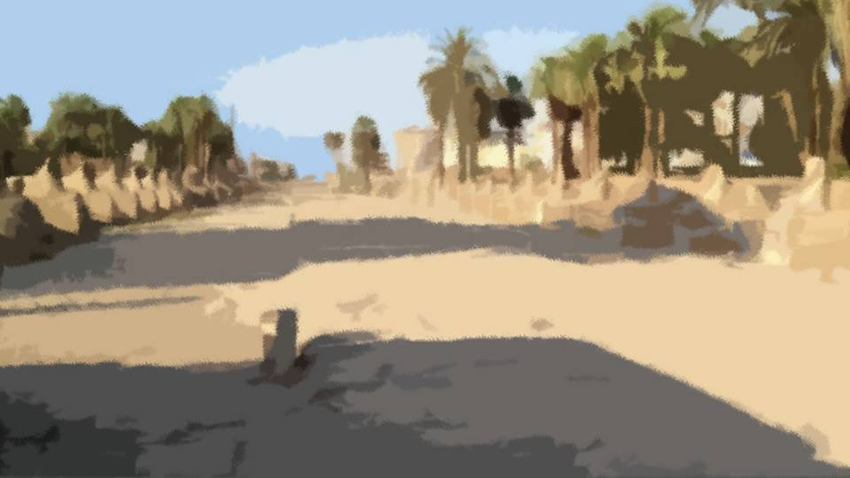
Eventually, through eating, we became interested in ingredients and farming too.
With Chigaya-san's advice, I used the genius brain I was born with to develop plants that could be grown locally as well.
Chigaya-san had grown up in the countryside in the mountains, so she knew a lot about that sort of thing.
With Chigaya-san's advice, I used the genius brain I was born with to develop plants that could be grown locally as well.
Chigaya-san had grown up in the countryside in the mountains, so she knew a lot about that sort of thing.
At first we mainly donated farming equipment and food, but that way the local people couldn't use them for long.
Because when the equipment broke, it couldn't be repaired and was left abandoned, or the donated seeds got eaten before they were sown.
Because when the equipment broke, it couldn't be repaired and was left abandoned, or the donated seeds got eaten before they were sown.
So the question for us was how to grow plants that could be cultivated easily even on barren land and could stave off hunger.
We traveled to those places to pass on that technique, and saw it through until the land became rich.
Not just to one place: we went to many countries, and kept fighting until people's hunger was gone.
It was volunteer work as a team, where my brain and Chigaya-san's experience were exactly what counted.
We traveled to those places to pass on that technique, and saw it through until the land became rich.
Not just to one place: we went to many countries, and kept fighting until people's hunger was gone.
It was volunteer work as a team, where my brain and Chigaya-san's experience were exactly what counted.
Thanks to that, in our small way, we succeeded in saving people suffering from famine.
In between, we kept entering eating contests, and eventually competitive eating as a sport and our charity work were recognized, and we even started getting sponsors.
And so we went on saving people all over the world who wished to live.
In between, we kept entering eating contests, and eventually competitive eating as a sport and our charity work were recognized, and we even started getting sponsors.
And so we went on saving people all over the world who wished to live.
But...
something in my heart kept smoldering all the same.
By keeping up my charity work, I keep running away from my own guilt.
By keeping up my charity work, I keep running away from my own guilt.
―And many years went by.
On this day, the place I set foot in was Oslo, Norway.
On this day, the place I set foot in was Oslo, Norway.
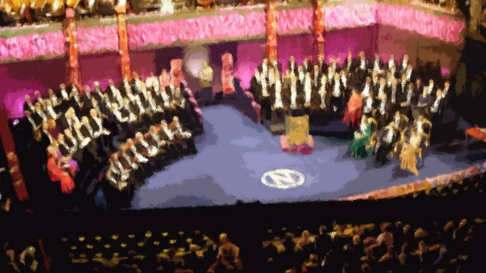
"This year's Nobel Peace Prize goes to the philanthropists Chigaya Niimura-san and Erina Goto-san.
After an eating contest 10 years ago, they became interested in ingredients and agriculture, and they have continued to make innovative contributions to improving the food situation around the world.
I provided the play-by-play at that contest 10 years ago, and I remember their performance well.
Who could have imagined it would lead to the Nobel Peace Prize?"
I climbed the steps and stood before the lectern.
"Your Majesties the King and Queen, Your Royal Highnesses the Crown Prince and Crown Princess, and members of the Norwegian Nobel Committee.
Today is a wonderfully happy day for me.
That the Nobel Committee has chosen us for this noble prize is an honor far beyond what I deserve.
Today, my partner Chigaya Niimura is unable to attend for personal reasons, so I will deliver the address in her place."
―There's something I have to say here.
Something I have to say on this grand, glorious stage.
It was the thing that had been smoldering in my heart for years.
At last I had been able to realize what it really was.
Something I have to say on this grand, glorious stage.
It was the thing that had been smoldering in my heart for years.
At last I had been able to realize what it really was.
"What I have done up to now.
That you have judged it worthy of an invitation to an occasion such as this.
It makes me very happy.
However, there is something I must tell you all."
"When I was 15, there was a very sad incident.
That April 8, when I lost the people dear to me all at once―
Even now, 14 years later, I cannot forget it.
I was the sole survivor of that incident."
"When I came to, I was in a hospital bed.
The loneliness of losing the people dear to me, and the helplessness of not having been able to save them.
Hopeless days without the people dear to me, tormented by helplessness―
I decided to take my own life."
"But that attempt failed, and, unfortunately, my life was saved.
At the same time, I lost my voice, and on top of that I lost the will to live, and even the will to die."
"All I had left was the survival instinct to eat, sleep, breathe.
I avoided all contact with people, and every day was nothing but waiting for death.
One day, after more than 4 years of that life, a chance came to me.
Something I could do with a mouth good for nothing but eating.
Only one thing made me different from other people. It was my special talent of being able to eat more than others."
"When I leapt into that world, everyone cheered me on, celebrated me―
Once again, I came to wish to live.
Not just eat, sleep, breathe.
The wish to live, the survival instinct at the root of all of them."
"In this world there are many lives that wish to live just the same, yet are lost with that wish unfulfilled.
But if they could get even a little food into their mouths, that desire could be satisfied.
I understand.
The wish to live rising to the surface, something ordinary people would probably never be aware of―
how painful that is."
"I have no sense that I am doing charity work.
There are people writhing in the suffering I went through, so I am only doing what I can.
If they live in the same society, even animals, even toddlers still unsteady on their feet, will try to share food with one of their own kind in front of them.
This, too, is an instinct: the wish to help people who wish to live.
I am simply living by my instincts."
"Because...
it hurts, doesn't it...!
When you can't help the people you want to help, it really hurts!
When you can't help the people you want to help, it hurts so much it could kill you!
You even start to want to die!
You even lose your voice!"
"That is why... that is why I am not doing anything like charity work.
I am only doing it for myself, because I do not want to suffer.
Everyone is simply going along with my selfish, instinctive desire.
If I stopped my 'charity work' now, I am sure I would lose my voice again.
This is the only way I can live."
"Even now, my guilt toward the people I lost 14 years ago smolders in my heart.
Helping other people will not bring back the ones I lost.
But... when someone else is saved, my guilt eases."
"So, everyone... this is a selfish request.
If there is someone in front of you whom you might be able to help, even just a tiny bit is fine.
Even just helping them up, even just giving them one piece of candy, is fine.
Please, help the people you can help."
"By rights, I had intended to decline the Nobel Peace Prize.
But my partner Chigaya Niimura said to me,
'If we're given an occasion like this, we can tell the whole world what we want to say. More people will be saved.'
That is what she told me."
"I am selfish.
I do not remember which country's people I helped, or how many.
Nor do I know what they think of me.
To be honest, I am not interested, either.
It is only that I want to be saved.
Hungry people just happened to be there for me.
It was only supply and demand.
That is all it is."
"Everyone... please do not become like me.
What I am doing is pure hypocrisy.
I am a hypocrite who, instead of aiming to help, uses it as a means of saving myself, and is respected by everyone.
I am a selfish coward.
I respect, from the bottom of my heart, those who can help others out of compassion."

"Lastly, I have been entrusted with a letter from Chigaya Niimura, so I will read it aloud."
"Everyone, I apologize that I am unable even to show my face today.
As Erina Goto here has said, she suffered greatly in the past,
no, even now she continues to carry that guilt.
I bear responsibility for this as well.
I am also the one truly responsible for tormenting Goto.
Therefore, I have no right to stand here.
Had I not made a mistake, I am sure the people dear to her would have been saved as well.
If I had exposed my father back then, in my childhood―"
"Ironically, thanks to that, many lives are being saved.
Everyone, please, for Goto's sake and for mine as well, save those you can save.
I am honored to receive such a prize, but for me it is far too painful a thing.
For me, this is a sin, and also a punishment.
Like Goto, I have no intention of speaking pretty words."
"From now on, too, we will surely continue our charity work, our atonement.
Everyone, if you would say that you recognize our work, then please, for our sake as well, help many people."
When I finished reading the letter, applause rose from the hall after a slightly awkward pause.
We had only said honestly what we thought.
An occasion like this is no reason to line up pretty words.
Being thought of as a compassionate person is far too painful.
We had only said honestly what we thought.
An occasion like this is no reason to line up pretty words.
Being thought of as a compassionate person is far too painful.
Once I step down from this platform, I intend to go straight back to Japan.
I'm not going to the press conference or the banquet.
I want to run away from here right now.
I'm not going to the press conference or the banquet.
I want to run away from here right now.
Until now, I've only ever told Chigaya-san the reason for this charity work.
To the people around me, I must be a humble, selfless philanthropist.
It's ridiculous to call me humble and selfless.
All this time steeped in desire, still swallowed by a wish that cannot come true.
To the people around me, I must be a humble, selfless philanthropist.
It's ridiculous to call me humble and selfless.
All this time steeped in desire, still swallowed by a wish that cannot come true.
No matter how much charity work I do, how much I atone, how many people I save―
My wish will never come true, whatever I do.
My wish will never come true, whatever I do.
I was recognized by the world, but my field of vision, far from being worldwide, is far too narrow.
No matter how much time passes, I can only satisfy my desire within an extremely narrow range.
For the sake of atonement to the two people I lost.
Just two people are all I can see.
No matter how much time passes, I can only satisfy my desire within an extremely narrow range.
For the sake of atonement to the two people I lost.
Just two people are all I can see.


I'll keep on with my atonement this way.
I'm truly sorry.
This is all I can do.
If I had used my head a little more, I should have been able to save you.
Will my senpai forgive this sin?
I'm truly sorry.
This is all I can do.
If I had used my head a little more, I should have been able to save you.
Will my senpai forgive this sin?
After I die, I still want to see my senpai.
Until then, please watch over us.
The truth of my wish to live― it's because if I die as I am now, I can't face my senpai.
Because even now, I'm still allowed neither to live nor to die.
Until then, please watch over us.
The truth of my wish to live― it's because if I die as I am now, I can't face my senpai.
Because even now, I'm still allowed neither to live nor to die.
For being useless...
I'm sorry.
For not being able to save you... I'm sorry.
For being stupid... I'm sorry.
For not being able to save you... I'm sorry.
For being stupid... I'm sorry.
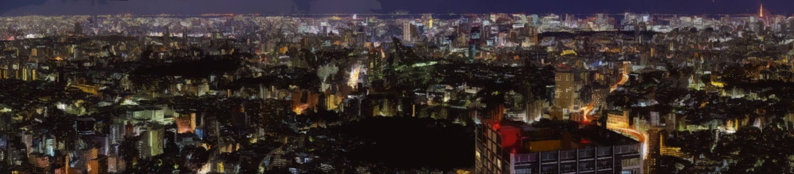
"All of Japan―
No, ladies and gentlemen of the world, ladies and gentlemen of planet Earth, thank you for waiting!
At last, at last, it is time for the Big Eating Festival 804 final!
We are currently broadcasting the Tokyo night view live from 2,000 meters above Ikebukuro."
"The current temperature in Shibuya Ward is 21 degrees, with a 0% chance of rain and almost no wind.
The Shibuya crossing, usually busy with crowds of people coming and going, is closed to traffic tonight for the ultimate showdown with the full cooperation of the Tokyo Metropolitan Police, and a special stage has been built!
Shinbashi-san at the venue, how are things over there?"
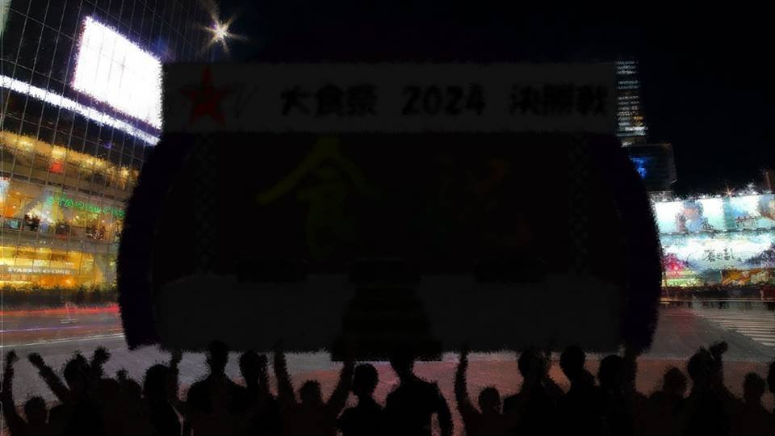
"Yes, this is Yukino Shinbashi at the venue.
Seats set out for three.
A great many people have flocked here to witness the moment of the century.
Champion Shinori Minamizaki, first in the qualifier, and Chigaya Niimura, in second, have both told us they are ready any time.
However, one contestant has yet to arrive at the venue."
"If I recall correctly, she is on her way here from Sawa Prefecture. Will she make it in time?
Ohh! What is that!?"
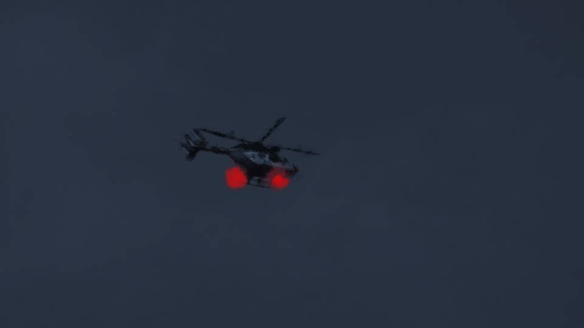
"A helicopter is approaching us here on the aerial team!
As if showing itself off, as if swallowing the Big Eating Festival 804 from the sky, a helicopter is passing in front of us and heading for Shibuya!
Camera, close in on it!"
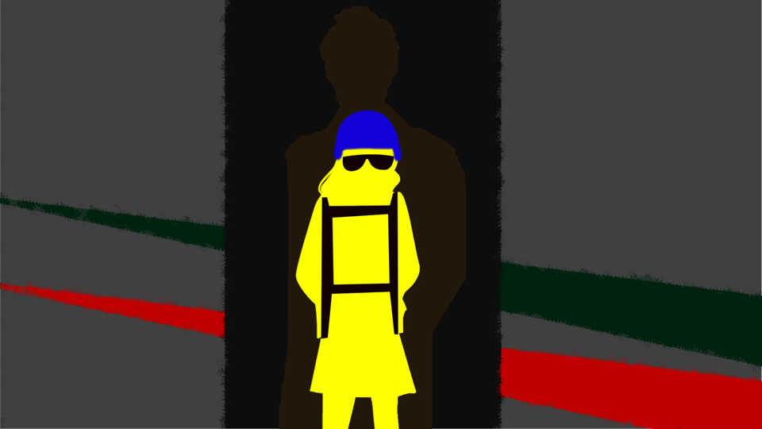
"A woman as small as a child! It's Silent Angel Erina Goto!
Incredibly, she has come all the way from Sawa Prefecture by helicopter to make it to the contest in time!
However, there is no way to land a helicopter in the streets of Shibuya!
How on earth is she going to―"
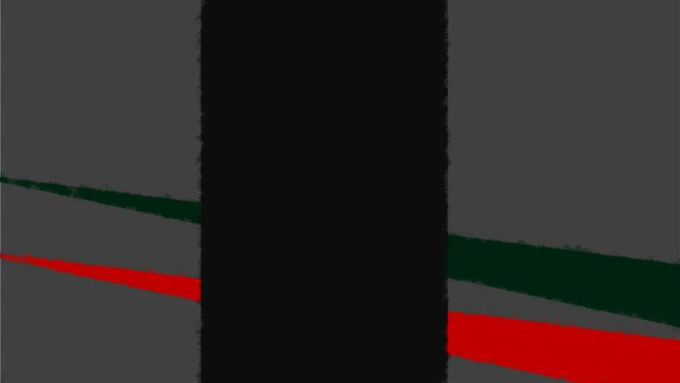
"Ohh! She has jumped!
Together with an instructor wearing a parachute, she is skydiving straight to the venue!
Why, why did the Tokyo Metropolitan Police allow this!?
Truly,
truly, Erina Goto, true to the name Silent Angel, is making her entrance from the sky like an angel!"
Below me, I could see the night view of Tokyo, the center of Japan, glittering in the night.
Falling at high speed―
Falling into a sea of light―
Falling at high speed―
Falling into a sea of light―
This skydive doesn't scare me.
Because if I don't do this, I won't make it in time.
Not making it in time and missing the final would be―scary.
Living those days on nothing but survival instinct again would be―scary.
Because if I don't do this, I won't make it in time.
Not making it in time and missing the final would be―scary.
Living those days on nothing but survival instinct again would be―scary.
"We can see it from down here too!
One parachute floating in the blazing lights of Tokyo!
Could that be Silent Angel Goto!?
The way she dances in the sky, she is truly an Angel, a heavenly angel!
Any moment now, any moment now, she will arrive here at the Shibuya scramble crossing!"
"Silent Angel, Erina Goto, has just arrived at the venue!
The excitement here at the Shibuya crossing is incredible!"
I bowed deeply to the frenzied crowd.
Applause and cheers, sent to me for my pointlessly flashy entrance.
I took them in with my whole body.
I bowed deeply to the frenzied crowd.
Applause and cheers, sent to me for my pointlessly flashy entrance.
I took them in with my whole body.
"Mm... Goto-san, I was absolutely sure you'd come."
Chigaya-san...
My smoldering fighting spirit began to simmer up again.
Then the champion, Minamizaki-san, walked up to me as well.
Chigaya-san...
My smoldering fighting spirit began to simmer up again.
Then the champion, Minamizaki-san, walked up to me as well.
"Just as I thought, you're the grilled-squid girl I fought in Motoki-cho 4 years ago."
I remembered too.
The eating contest held at the cherry-blossom festival 4 years ago.
That day, she and I had fought.
I remembered too.
The eating contest held at the cherry-blossom festival 4 years ago.
That day, she and I had fought.
"Goto-san, if you'd gone all out at that contest, I'd have lost, 100%.
So I kept waiting until today, believing I could fight you again.
For these 4 years, I've kept defending my championship with only one goal: beating you."
So I had that much potential.
Then all I can do is fight, to answer that passion.
So I had that much potential.
Then all I can do is fight, to answer that passion.
The three of us each had our own aims.
But only someone with not just passion but real ability as well can win this holy war.
Now, on top of this huge crowd, a live nationwide broadcast. How far can I, now the most conspicuous person in Japan, really go?
But only someone with not just passion but real ability as well can win this holy war.
Now, on top of this huge crowd, a live nationwide broadcast. How far can I, now the most conspicuous person in Japan, really go?
"And now!
The Big Eating Festival 804, deciding the king of competitive eating for Shiyo 804, is now ooooooopen!"
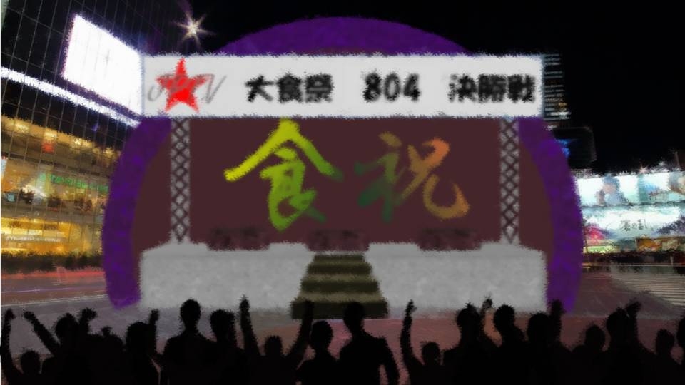
The heretical genre called competitive eating, which I had once given up on and despaired of.
Me, one of the stars of this event for gawking at oddballs.
Me, one of the stars of this event for gawking at oddballs.
And the champion, Minamizaki-san, and Chigaya-san are, in the end, the same breed, exposed to curious stares.
For an event like this, the TV station spends a fortune, the local government wastes taxes, the Tokyo Metropolitan Police block the roads, and they even allow my skydiving.
And then the crowd gathered here.
For an event like this, the TV station spends a fortune, the local government wastes taxes, the Tokyo Metropolitan Police block the roads, and they even allow my skydiving.
And then the crowd gathered here.
Huh. Japan's nothing but idiots.
And the star of those idiots is... me!
And the star of those idiots is... me!
"And now! Contestants, please come up onto the stage!"
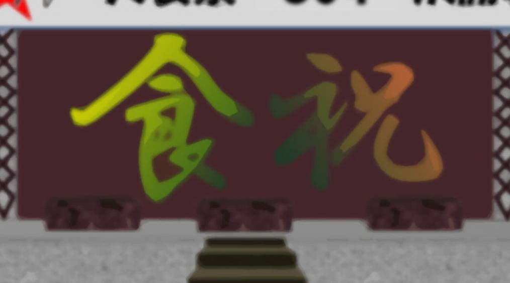
A stage built on the Shibuya scramble crossing.
Three tables had been set out, and behind them was a painting with '食祝' written on it in huge letters.
'Shokushuku,' maybe? Is that how you read it? [TN: shokushuku = "eat" + "celebrate"; not a real word]
Lavish, and yet somehow cheap...
Well, we ourselves are the star attraction, so I suppose fancy decorations aren't necessary?
Three tables had been set out, and behind them was a painting with '食祝' written on it in huge letters.
'Shokushuku,' maybe? Is that how you read it? [TN: shokushuku = "eat" + "celebrate"; not a real word]
Lavish, and yet somehow cheap...
Well, we ourselves are the star attraction, so I suppose fancy decorations aren't necessary?
"Now, without further ado, let me introduce the menu for the final!"
When Announcer Shinbashi shouted that, the whole venue fell silent at once.
At the same time, the loud rumble of an engine reached us.
When Announcer Shinbashi shouted that, the whole venue fell silent at once.
At the same time, the loud rumble of an engine reached us.
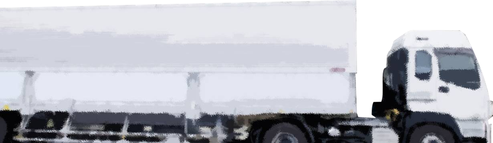
A large truck drove up in front of the stage.
When the truck stopped, its container was opened, and a crowd of staff were carrying something out from inside.
Is that the menu for the final...?
When the truck stopped, its container was opened, and a crowd of staff were carrying something out from inside.
Is that the menu for the final...?
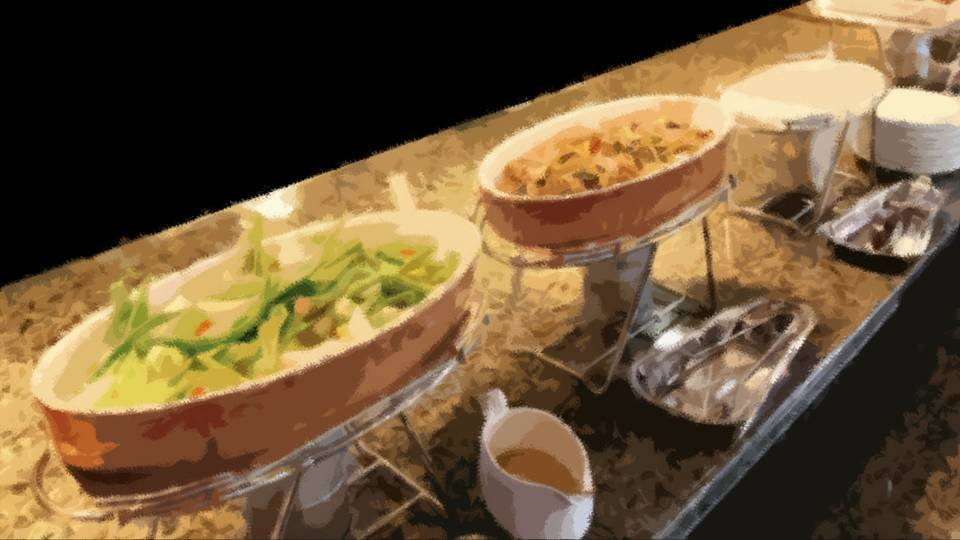
What they were carrying out was a variety of dishes: pork cutlet, stir-fried vegetables, hot pots, sashimi, pickles.
They were lined up neatly, like a buffet.
What kind of contest could this be?
Do we eat lots of whatever we like and compete on how much we eat?
They were lined up neatly, like a buffet.
What kind of contest could this be?
Do we eat lots of whatever we like and compete on how much we eat?
"Now, 29 kinds of dishes have been set out on the special table!
We will introduce the dishes laid out here in no particular order!
1. Pork cutlet
2. Assorted sashimi
3. Miso soup
4. Stir-fried vegetables
5. Mentaiko
1. Pork cutlet
2. Assorted sashimi
3. Miso soup
4. Stir-fried vegetables
5. Mentaiko
6. Curry sauce
7. Fried chicken
8. Assorted pickles（pickled plums, pickled daikon, kimchi, etc.）
9. Grilled fish（salmon, saury, teriyaki, etc.）
10. Salmon roe
11. Braised pork belly
12. Chunky chili oil
13. Natto
7. Fried chicken
8. Assorted pickles（pickled plums, pickled daikon, kimchi, etc.）
9. Grilled fish（salmon, saury, teriyaki, etc.）
10. Salmon roe
11. Braised pork belly
12. Chunky chili oil
13. Natto
14. Eggs（rolled omelet, raw egg）
15. Mapo tofu
16. Pepper steak
17. Sukiyaki
18. Sweet-and-sour pork
19. Gyoza
20. Pork kimchi
21. Fresh furikake
15. Mapo tofu
16. Pepper steak
17. Sukiyaki
18. Sweet-and-sour pork
19. Gyoza
20. Pork kimchi
21. Fresh furikake
22. Nori tsukudani
23. Chicken in spicy miso
24. Grilled eel (kabayaki)
25. Twice-cooked pork
26. Ginger pork
27. Hamburger steak
28. Grated yam
29. Chili shrimp
That's all 29 dishes!"
23. Chicken in spicy miso
24. Grilled eel (kabayaki)
25. Twice-cooked pork
26. Ginger pork
27. Hamburger steak
28. Grated yam
29. Chili shrimp
That's all 29 dishes!"
I still couldn't quite see what the competition was.
Judging from the situation, the rule seemed to be that we could eat however we liked.
But there's something strange about this menu.
What is it, this feeling that something's off...?
Judging from the situation, the rule seemed to be that we could eat however we liked.
But there's something strange about this menu.
What is it, this feeling that something's off...?
............!
That's it! There's no staple food at all!
There's curry sauce and furikake, but no rice!
Not only that, there's no bread or noodles either.
Could it be that this competition is...!
That's it! There's no staple food at all!
There's curry sauce and furikake, but no rice!
Not only that, there's no bread or noodles either.
Could it be that this competition is...!
"These dishes will indeed be used in tonight's competition...
But in fact, you do not necessarily have to eat them!
Tonight's main ingredient is...
right here!"
At the back of the special stage―
a spotlight was cast behind us.
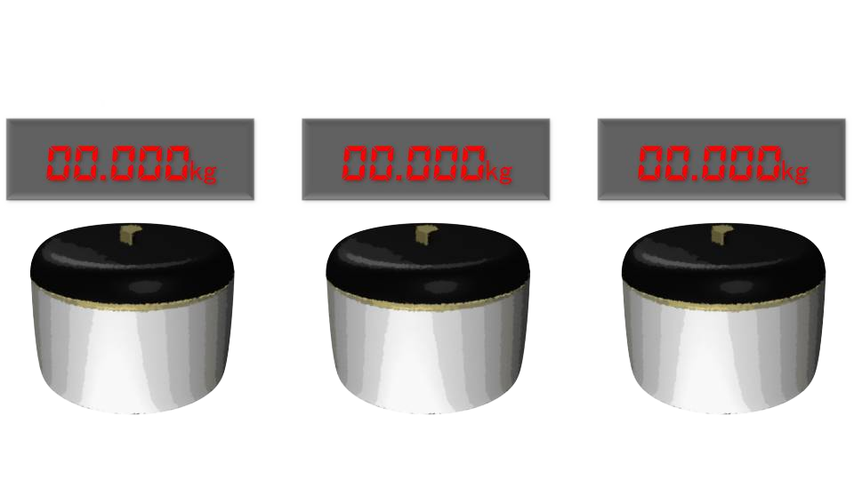
Something was rising up from the stage floor.
An electronic display board...?
An electronic display board...?
What appeared there was a giant rice cooker.
"Tonight's menu for the final is...
Rice, a 5-sho battle!"
5 sho of rice!?
One sho of rice is about 3.3 kilos.
They're telling us to eat 16.5 kilos of rice...!?
No matter how you look at it, that much is...!
The crowd was buzzing too at this greater-than-expected weight.
5 sho of rice!?
One sho of rice is about 3.3 kilos.
They're telling us to eat 16.5 kilos of rice...!?
No matter how you look at it, that much is...!
The crowd was buzzing too at this greater-than-expected weight.
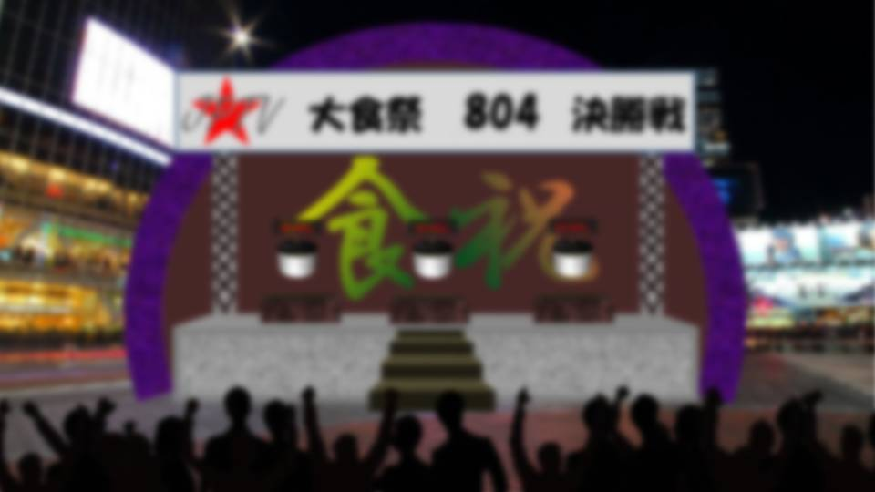
"Now, I will explain the rules of the final.
Within the 60-minute time limit, the contestant who eats the most rice wins!
Contestants may eat whatever they like from the 29 side dishes prepared earlier, whenever they like, as much as they like.
However, no matter how many side dishes you eat, they do not count toward your score."
"To be clear, the contestant who eats the most rice is the winner!
Also, each contestant's rice cooker sits on a scale, and the amount eaten will be shown in real time."
So, summing up the rules,
・You don't need to finish all the rice
・Side dishes don't count, however many you eat
・Not bowls, but a contest decided purely by weight
that's what it boils down to.
・You don't need to finish all the rice
・Side dishes don't count, however many you eat
・Not bowls, but a contest decided purely by weight
that's what it boils down to.
Completely different from any menu I'd fought before.
Chewing power, swallowing power and other techniques were hardly needed.
There was almost no worry of getting tired of the taste either.
It was a pure contest of stomach capacity.
But eating nothing but rice the whole time would be too hard, so I had to work down the rice while eating the bare minimum of side dishes.
Chewing power, swallowing power and other techniques were hardly needed.
There was almost no worry of getting tired of the taste either.
It was a pure contest of stomach capacity.
But eating nothing but rice the whole time would be too hard, so I had to work down the rice while eating the bare minimum of side dishes.
I checked the side dishes laid out on the stage once more.
1. Pork cutlet
2. Assorted sashimi
3. Miso soup
4. Stir-fried vegetables
5. Mentaiko
6. Curry sauce
7. Fried chicken
8. Assorted pickles（pickled plums, pickled daikon, kimchi, etc.）
2. Assorted sashimi
3. Miso soup
4. Stir-fried vegetables
5. Mentaiko
6. Curry sauce
7. Fried chicken
8. Assorted pickles（pickled plums, pickled daikon, kimchi, etc.）
9. Grilled fish（salmon, saury, teriyaki, etc.）
10. Salmon roe
10. Salmon roe
11. Braised pork belly
12. Chunky chili oil
13. Natto
14. Eggs（rolled omelet, raw egg）
15. Mapo tofu
16. Pepper steak
12. Chunky chili oil
13. Natto
14. Eggs（rolled omelet, raw egg）
15. Mapo tofu
16. Pepper steak
17. Sukiyaki
18. Sweet-and-sour pork
19. Gyoza
20. Pork kimchi
21. Fresh furikake
22. Nori tsukudani
23. Chicken in spicy miso
18. Sweet-and-sour pork
19. Gyoza
20. Pork kimchi
21. Fresh furikake
22. Nori tsukudani
23. Chicken in spicy miso
24. Grilled eel (kabayaki)
25. Twice-cooked pork
26. Ginger pork
27. Hamburger steak
28. Grated yam
29. Chili shrimp
25. Twice-cooked pork
26. Ginger pork
27. Hamburger steak
28. Grated yam
29. Chili shrimp
On top of that, all kinds of soft drinks.
I see. Every one of them makes rice go down easily.
Personally, I'd have liked simmered fish too, or something sweet as a palate break, but I can't ask for luxuries.
I see. Every one of them makes rice go down easily.
Personally, I'd have liked simmered fish too, or something sweet as a palate break, but I can't ask for luxuries.
The soft drinks were quite a varied lineup too.
Tea and juice I could understand, but there was even cola, soda, non-alcoholic beer, and Super Soda Bomber.
Tea and juice I could understand, but there was even cola, soda, non-alcoholic beer, and Super Soda Bomber.
On each contestant's table were seasonings like salt, soy sauce and vinegar.
There were no gas stoves or knives, so re-cooking anything was impossible.
There were no gas stoves or knives, so re-cooking anything was impossible.
But having this many choices actually makes it harder...
My stomach capacity, estimated generously, is 12 kilos.
I won't even consider finishing all 5 sho of rice from the start.
My stomach capacity, estimated generously, is 12 kilos.
I won't even consider finishing all 5 sho of rice from the start.
I'd better avoid oily things, and food with too little moisture is hard to eat.
They're all probably first-class and delicious, but among them I have to choose what I can eat most efficiently.
They're all probably first-class and delicious, but among them I have to choose what I can eat most efficiently.
First, miso soup, with lots of liquid to help things go down, is a must.
And as for side dishes with as strong a flavor and as little oil as possible...
From this lineup, maybe the pickles, the nori tsukudani and the fresh furikake?
The pickles include kimchi too, and I can count on its hot ingredient, capsaicin, to boost my appetite.
And as for side dishes with as strong a flavor and as little oil as possible...
From this lineup, maybe the pickles, the nori tsukudani and the fresh furikake?
The pickles include kimchi too, and I can count on its hot ingredient, capsaicin, to boost my appetite.
Okay, I've roughly settled on a direction.
After that, I'll switch side dishes as needed whenever I get tired of a taste.
After that, I'll switch side dishes as needed whenever I get tired of a taste.
But under the rules, we had to do everything ourselves, from scooping rice to going below the stage to fetch side dishes.
Dithering over choices during the competition would mean a huge loss of time.
Dithering over choices during the competition would mean a huge loss of time.
I want to get a lot of side dishes ready at the start, but the hot ones will get cold.
And I want to keep them as tasty as I can...
Which to eat, when, and how: I have to plan that strategy carefully too.
And I want to keep them as tasty as I can...
Which to eat, when, and how: I have to plan that strategy carefully too.
"Now, would the three of you please take your seats!"
The champion, Minamizaki-san, took the middle seat, I took the right as seen from the crowd, and Chigaya-san the left.
Neither rice nor side dishes could be prepared until the start signal.
The champion, Minamizaki-san, took the middle seat, I took the right as seen from the crowd, and Chigaya-san the left.
Neither rice nor side dishes could be prepared until the start signal.
I took one big, deep breath.
Even I was nervous this time.
Even I was nervous this time.
"Now, everyone, please count down with us!"
"10!"
Me, shut in for 4 years―
Me, shut in for 4 years―
"9!"
Me, who could only eat, sleep, breathe―
Me, who could only eat, sleep, breathe―
"8!"
Me, who couldn't help the people I wanted to help―
Me, who couldn't help the people I wanted to help―
"7!"
The chance given to someone like me―
The chance given to someone like me―
"6!"
The chance for me to leap out once more into a new world―
The chance for me to leap out once more into a new world―
"5!"
Everyone in Motoki-cho―
Everyone in Motoki-cho―
"4!"
Everyone cheering me on―
Everyone cheering me on―
"3!"
Please watch me―
Please watch me―
"2!"
Here I go―
Here I go―

"1!"
Into battle!!!
Into battle!!!
"Begiiiiiiin!!!!"
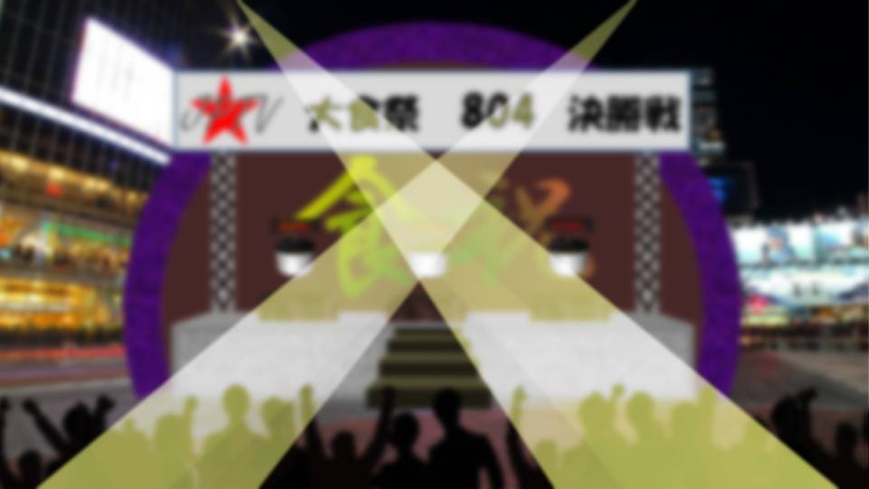
All three of us stood up at once.
Minamizaki-san seemed to be heading to the drink corner, and Chigaya-san to scoop her rice.
While it's empty, I'll head to the side-dish corner.
Minamizaki-san seemed to be heading to the drink corner, and Chigaya-san to scoop her rice.
While it's empty, I'll head to the side-dish corner.
Up close, every one of them looked truly delicious.
It was a lineup I'd have liked to enjoy purely as a meal, not a competition.
It was a lineup I'd have liked to enjoy purely as a meal, not a competition.
First, as planned, I put pickles, nori tsukudani and fresh furikake on my tray.
Then straight on to the drink corner.
For starters, I played it safe with oolong tea.
I set the side dishes and tea at my seat and scooped rice into a bowl.
Then straight on to the drink corner.
For starters, I played it safe with oolong tea.
I set the side dishes and tea at my seat and scooped rice into a bowl.
I opened the rice cooker's giant lid and plunged a rice paddle into the deep pot.
I couldn't afford to lose time on something like this, so I tossed in rice roughly until the bowl was full.
I couldn't afford to lose time on something like this, so I tossed in rice roughly until the bowl was full.
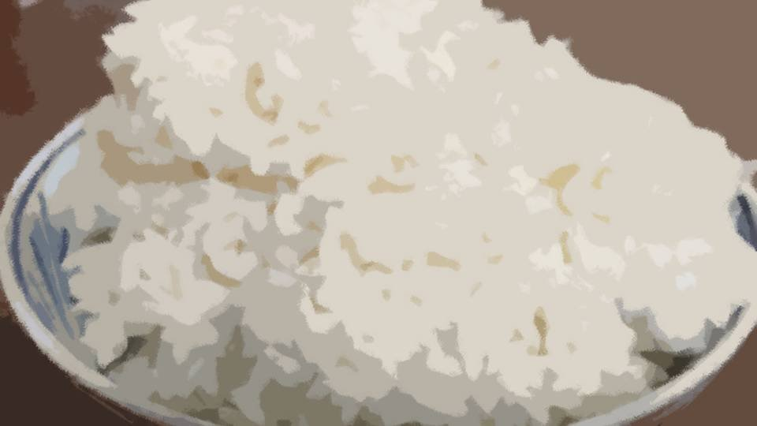
I took my seat and right away put fresh furikake on the rice.
Okay. Itadakimasu.
Just then, a stir went up from the audience.
Okay. Itadakimasu.
Just then, a stir went up from the audience.
"Incredible! Champion Minamizaki has chugged two non-alcoholic beers right off the bat!"
Why!? Choosing something carbonated is, no matter how you look at it...!
Why!? Choosing something carbonated is, no matter how you look at it...!
No, Minamizaki-san is surely doing this based on careful calculation.
Something non-alcoholic beer has that the other drinks don't...
Something non-alcoholic beer has that the other drinks don't...
That's it, hops!
Non-alcoholic beer contains hops!
Non-alcoholic beer contains hops!
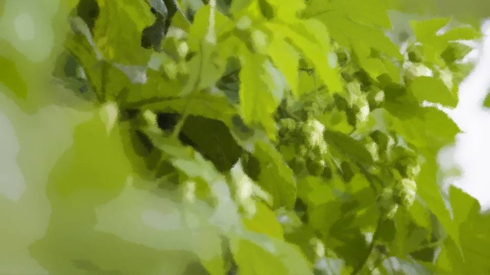
Isohumulone（iso-alpha acids）, the bitter component of hops, has a powerful appetite-boosting effect.
Apparently, after eating and drinking loads at a drinking party, it's common to finish up with a bowl of ramen.
Apparently, after eating and drinking loads at a drinking party, it's common to finish up with a bowl of ramen.
They say that's because the hops, and the beer's carbonation, stimulate the stomach lining, so more digestive juices are secreted and the appetite increases.
Just what you'd expect from a veteran. A tactic that would never occur to an underage girl like me.
Okay, I'll try it too!
Just what you'd expect from a veteran. A tactic that would never occur to an underage girl like me.
Okay, I'll try it too!
When I got up from my seat again, Chigaya-san stood up at the same moment.
The two of us headed straight to the drink corner together and picked up non-alcoholic beers.
We seemed to have the same idea.
We seemed to have the same idea.
Chigaya-san and I met each other's eyes and grinned.
There were no words to exchange.
Here, Chigaya-san was a powerful rival, and a powerful ally, each of us lifting the other higher!
There were no words to exchange.
Here, Chigaya-san was a powerful rival, and a powerful ally, each of us lifting the other higher!
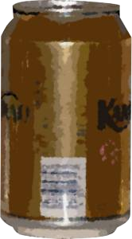
I quickly returned to my seat and opened the can.
I'd never been interested in alcohol, so even if it was non-alcoholic, this was my first time drinking beer.
Now then, let's see if I can drink this...
I'd never been interested in alcohol, so even if it was non-alcoholic, this was my first time drinking beer.
Now then, let's see if I can drink this...
............
Ugh! It's bitter...!
I took one sip and immediately put the can down on the table.
I can't do this...!
Truly a grown-up taste. Even I, who'll eat anything, can't handle this.
I can't do this...!
Truly a grown-up taste. Even I, who'll eat anything, can't handle this.
When I looked over at Chigaya-san, she was just finishing her first can.
Now, of all times, the gap in age and life experience showed...!
No more clumsy little tricks.
Now, of all times, the gap in age and life experience showed...!
No more clumsy little tricks.
I shoveled the furikake rice into my mouth.
Yeah, delicious, as expected.
The fresh furikake clung thickly to my tongue, and the flavor came straight through.
And the unpleasantness of the non-alcoholic beer faded smoothly away.
Riding that momentum, I polished off my first bowl of rice.
Then I scooped my second bowl of rice.
Yeah, delicious, as expected.
The fresh furikake clung thickly to my tongue, and the flavor came straight through.
And the unpleasantness of the non-alcoholic beer faded smoothly away.
Riding that momentum, I polished off my first bowl of rice.
Then I scooped my second bowl of rice.
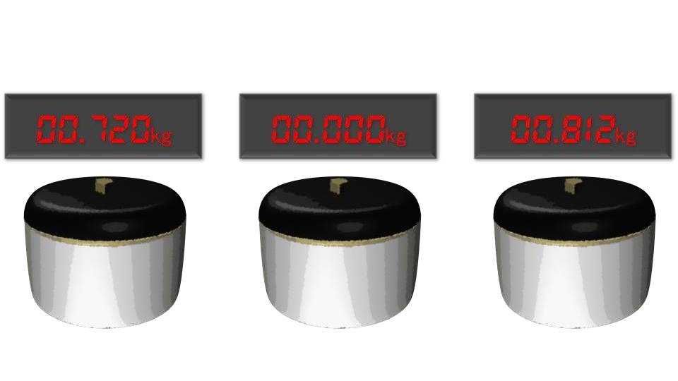
By the time I'd put the second serving in the bowl, it seemed 800 grams of rice had disappeared from the rice cooker.
With the curry before, I finished 10 kilos in 28 minutes, but that amount included the sauce and toppings.
I'd guess the rice in the 10-kilo curry was around 5 to 6 kilos.
If I tried to eat 10 kilos of rice, by that math it would take more than 50 minutes.
With the curry before, I finished 10 kilos in 28 minutes, but that amount included the sauce and toppings.
I'd guess the rice in the 10-kilo curry was around 5 to 6 kilos.
If I tried to eat 10 kilos of rice, by that math it would take more than 50 minutes.
At this point, I was at least beating Minamizaki-san.
No, this is Minamizaki-san, a veteran. There's no telling what tactic she'll show next.
I can't let my guard down until the very end.
The only appetite booster I could manage was hoping for the capsaicin effect of the kimchi.
No, this is Minamizaki-san, a veteran. There's no telling what tactic she'll show next.
I can't let my guard down until the very end.
The only appetite booster I could manage was hoping for the capsaicin effect of the kimchi.
I worked through the second bowl mainly with kimchi, sipping a little miso soup in between.
For eating with as few side dishes as possible, pickles and miso soup are just right.
For eating with as few side dishes as possible, pickles and miso soup are just right.
Then the third bowl―
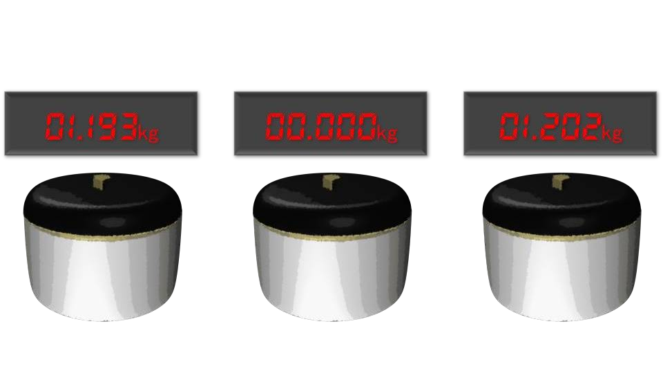
At this point, about 1.2 kilos of rice had vanished from the rice cooker.
How were my rivals doing?
How were my rivals doing?
............?
Chigaya-san had eaten about the same as me, but Minamizaki-san alone hadn't touched her food at all.
Far from eating, she hadn't even gotten her rice ready.
When I looked at Minamizaki-san, she was sitting perfectly still, staring at one spot.
Chigaya-san had eaten about the same as me, but Minamizaki-san alone hadn't touched her food at all.
Far from eating, she hadn't even gotten her rice ready.
When I looked at Minamizaki-san, she was sitting perfectly still, staring at one spot.
Is she unwell?
Even so, she'd at least scoop some rice.
She must have some strategy I can't even think of―
Even so, she'd at least scoop some rice.
She must have some strategy I can't even think of―
Then,
"Urrp"
An unpleasant sound from Minamizaki-san's mouth.
The moment it sounded, she stood up.
"Urrp"
An unpleasant sound from Minamizaki-san's mouth.
The moment it sounded, she stood up.
"At last, the champion has begun scooping rice!
It seems the last burp built up from the non-alcoholic beer has come out!"
A woman, letting the whole nation hear her burp. That was nothing short of dead seriousness.
A woman, letting the whole nation hear her burp. That was nothing short of dead seriousness.
But waiting for the burp must have cost Minamizaki-san a lot of time.
No, eating nonstop for the full 60 minutes is hard.
She's probably pacing herself with that in mind as well.
Which means, unlike in the qualifier, she'll probably make her spurt in the second half.
No, eating nonstop for the full 60 minutes is hard.
She's probably pacing herself with that in mind as well.
Which means, unlike in the qualifier, she'll probably make her spurt in the second half.
Mentally, being chased is more painful than chasing.
Psychologically, too, Minamizaki-san is a cut above, as expected.
But all I have to do is eat so much that even that spurt can't catch me.
I want to build a lead she can't close while I can.
Psychologically, too, Minamizaki-san is a cut above, as expected.
But all I have to do is eat so much that even that spurt can't catch me.
I want to build a lead she can't close while I can.
But after scooping her rice, Minamizaki-san sat down without getting any side dishes.
Then,
Then,
"Whoa! The champion has started shoveling down her rice with nothing but salt from the table!"
No way! She's going to eat it without side dishes!?
No way! She's going to eat it without side dishes!?
Of course. Salt and rice is the same thing as a rice ball.
Plain rice is hard to eat, but just a little salt turns it into a superb dish, like a rice ball.
She probably won't stick with salt the whole way, but it's a big advantage for getting the amount down even a little.
I can't lose either...!
Plain rice is hard to eat, but just a little salt turns it into a superb dish, like a rice ball.
She probably won't stick with salt the whole way, but it's a big advantage for getting the amount down even a little.
I can't lose either...!
Four bowls―
Five bowls―
Six bowls―
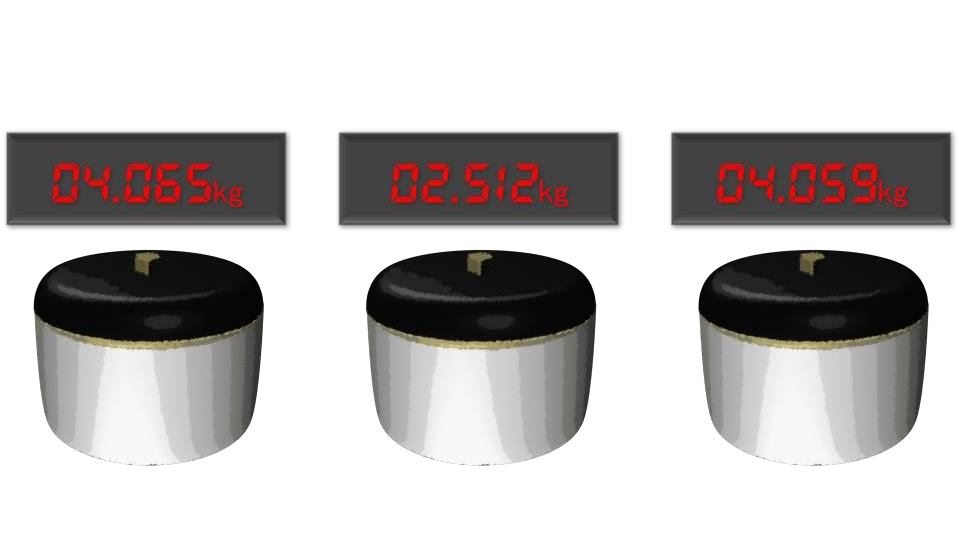
"15 minutes have passed!
Goto and Niimura have already finished 4 kilos, but the champion is still at 2.5!"
I know. Minamizaki-san wants Chigaya-san and me to wear each other down.
I know. Minamizaki-san wants Chigaya-san and me to wear each other down.
If I try to get ahead of Chigaya-san, I'll be forced into an excessive pace, and I risk eating less than I really could.
In other words, Minamizaki-san figures she can't win on stomach capacity.
So her aim is to corner us with a battle of nerves and throw off our pace.
In other words, Minamizaki-san figures she can't win on stomach capacity.
So her aim is to corner us with a battle of nerves and throw off our pace.
Okay. So I won't fall for it, I'll drop my pace here.
Rather than leading, I'll focus on eating the most rice over the 60 minutes.
Minamizaki-san will probably realize it's not a slowdown but pace control, but what will she do then...?
Rather than leading, I'll focus on eating the most rice over the 60 minutes.
Minamizaki-san will probably realize it's not a slowdown but pace control, but what will she do then...?
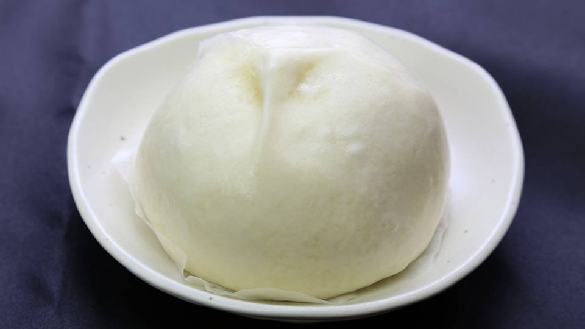
I slowly touched the meat bun with a finger.
Whoa, it's really hot...!
Even just holding it is hard...!
Whoa, it's really hot...!
Even just holding it is hard...!
The other contestants were picking up their meat buns plate and all and biting into them.
I bit into my meat bun the same way.
I bit into my meat bun the same way.
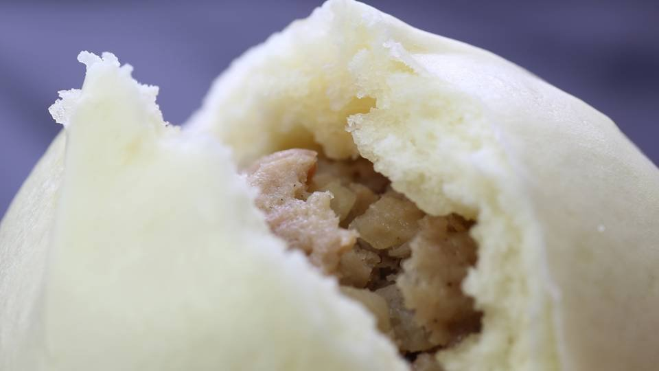
And piping-hot soup came spurting out from inside.
"...!"
A scream with no voice escaped me before I could stop it.
This is less a meat bun and more a big xiaolongbao.
Food that's harder to eat than I expected.
And just then,
A scream with no voice escaped me before I could stop it.
This is less a meat bun and more a big xiaolongbao.
Food that's harder to eat than I expected.
And just then,
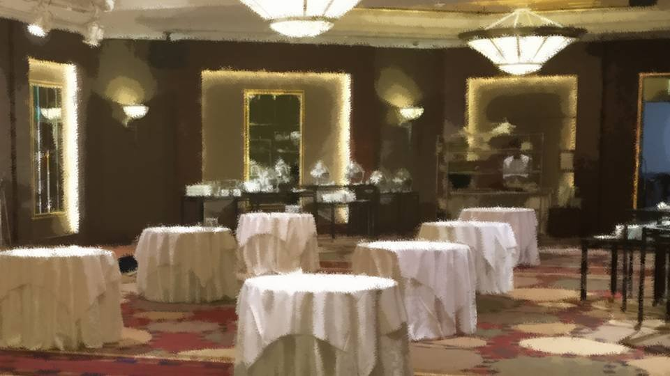
"Champion Minamizaki-san has already finished one!"
No way! I've only taken one bite...!
I wanted to study the way she ate, but from here I couldn't see the champion.
No way! I've only taken one bite...!
I wanted to study the way she ate, but from here I couldn't see the champion.
"Call after call for more! As expected, everyone here seems well used to battle!"
At this rate, forget qualifying, I won't even squeeze into the top half...!
Somehow bearing the heat, I forced the first one into my mouth.
At this rate, forget qualifying, I won't even squeeze into the top half...!
Somehow bearing the heat, I forced the first one into my mouth.
Without a moment's pause, the second meat bun slid in front of me.
The time it took to eat one: 2 minutes.
At that rate I could only eat 15 in 30 minutes, just 3 kilos...!
The champion had already finished four.
If I don't change my plan, getting through the qualifier is a pipe dream!
The time it took to eat one: 2 minutes.
At that rate I could only eat 15 in 30 minutes, just 3 kilos...!
The champion had already finished four.
If I don't change my plan, getting through the qualifier is a pipe dream!
My one saving grace was that these meat buns were truly delicious.
The soup was light and yet had real depth.
And the wrapper and the filling both had perfect salt, seasoning and texture.
But if I eat too slowly, none of that means anything.
Something... is there something I can use?
The soup was light and yet had real depth.
And the wrapper and the filling both had perfect salt, seasoning and texture.
But if I eat too slowly, none of that means anything.
Something... is there something I can use?
What jumped out at me was the knife and fork lying beside the plate.
That's it!
That's it!
I put the knife into the meat bun and cut it in two.
Hot soup spilled out from inside.
Hot soup spilled out from inside.
Okay, this way I can cool it fast.
The same way I'd eaten yesterday's steak, I cut the wrapper and brought it to my mouth.
While chewing the wrapper, I mashed the filling with the fork, increasing its surface area so it would cool faster.
Then, the moment I swallowed the wrapper, I picked up the plate and poured the leftover soup and filling into my mouth together.
The same way I'd eaten yesterday's steak, I cut the wrapper and brought it to my mouth.
While chewing the wrapper, I mashed the filling with the fork, increasing its surface area so it would cool faster.
Then, the moment I swallowed the wrapper, I picked up the plate and poured the leftover soup and filling into my mouth together.
The time it took to eat the second one: about 50 seconds.
Still not up to the champion's pace, but it's a huge jump in speed all the same!
Yesterday's steak battle wasn't wasted.
It's the same as cutting the meat while chewing and washing it down with the soup.
Still not up to the champion's pace, but it's a huge jump in speed all the same!
Yesterday's steak battle wasn't wasted.
It's the same as cutting the meat while chewing and washing it down with the soup.
When I looked around, at some point everyone had started eating the same way I was.
Proof that this way of eating works.
I'll stick with this plan for a while and see how it goes.
How things stand at the other tables should be announced as we go.
Proof that this way of eating works.
I'll stick with this plan for a while and see how it goes.
How things stand at the other tables should be announced as we go.
―10 minutes elapsed.
I'd eaten eight, 1600 grams.
A little behind my target pace.
The champion, meanwhile, was already at 12.
She was already 1.5 times ahead.
How is Chigaya-san doing?
I'd eaten eight, 1600 grams.
A little behind my target pace.
The champion, meanwhile, was already at 12.
She was already 1.5 times ahead.
How is Chigaya-san doing?
"Oh, and now Chigaya Niimura-san has finished 11!"
She seemed to be doing fine.
But I had fallen well behind the two of them.
How many people could there be between second-place Chigaya-san and me?
She seemed to be doing fine.
But I had fallen well behind the two of them.
How many people could there be between second-place Chigaya-san and me?
Even so, even with this knife-and-fork plan, hot was still hot.
There was no time to cool them enough, so I was putting them in my mouth at the very limit of the heat I could eat.
With this going on for a full 10 minutes, the inside of my mouth finally started to sting.
20 minutes left.
Can I keep fighting like this?
There was no time to cool them enough, so I was putting them in my mouth at the very limit of the heat I could eat.
With this going on for a full 10 minutes, the inside of my mouth finally started to sting.
20 minutes left.
Can I keep fighting like this?
But the others' hands were starting to stop.
For an ordinary stomach, this much was probably the limit.
My stomach was in no trouble at all.
But since this called for a somewhat different technique from yesterday, I could hardly say I was putting up a good fight.
For an ordinary stomach, this much was probably the limit.
My stomach was in no trouble at all.
But since this called for a somewhat different technique from yesterday, I could hardly say I was putting up a good fight.
Until now I'd thought that in competitive eating, you could win as long as your stomach was strong, but it's not that easy after all.
Calculate carefully, think about pace, and work out how to get the upper hand over the other contestants.
It's no different from a sport anymore. The world's only sport where your internal organs do the fighting.
Calculate carefully, think about pace, and work out how to get the upper hand over the other contestants.
It's no different from a sport anymore. The world's only sport where your internal organs do the fighting.
―20 minutes elapsed.
So far, 16 finished, 3200 grams.
So far, 16 finished, 3200 grams.
The hands around me had stopped completely, and everyone at my table was quietly watching me.
"Champion Minamizaki-san has finished 20!"
It's been a four-bun gap the whole time, but that means I'm keeping the champion's pace. It can't be bad at all.
Chigaya-san is probably at around 18.
If I'm not inside the qualifying line soon, it'll be tough.
It's been a four-bun gap the whole time, but that means I'm keeping the champion's pace. It can't be bad at all.
Chigaya-san is probably at around 18.
If I'm not inside the qualifying line soon, it'll be tough.
"At the 20-minute mark, five people still have their hands moving!
In first place, Champion Minamizaki-san with 20.
In second place, Chigaya Niimura-san with 19.
Tied for third and fourth with 18 are Takano-san and Fujishiro-san!
And in fifth place, Goto-san with 16.
The three seats in the final will likely be fought over by these five!"
It's a tough fight after all...
Even though my stomach's still fine... it's so frustrating...!
It's a tough fight after all...
Even though my stomach's still fine... it's so frustrating...!
But if the champion and I are at the same pace, then everyone else's pace must have dropped below mine.
Better not to think too hard here and keep going with the same plan as before.
Just as I first predicted, I put the qualifying line at 25 buns, 5 kilos.
Don't lose the pace, and eat with 25 as the target!
Better not to think too hard here and keep going with the same plan as before.
Just as I first predicted, I put the qualifying line at 25 buns, 5 kilos.
Don't lose the pace, and eat with 25 as the target!
―5 minutes remaining.
"Now it is anyone's game!
In first place, the champion, Minamizaki-san, with 22,
in second, Niimura-san with 21,
in third and fourth, as before, Takano-san and Fujishiro-san with 20.
And in fifth, Goto-san with 19!"
One away from the qualifying line.
The gap was closing fast!
One away from the qualifying line.
The gap was closing fast!
"Oh, and here the hands of third-place Fujishiro-san have stopped!
Over 4 kilos of pork buns already down, but can that lead hold to the end!?"
At this point, it seemed to have become a battle of stomach capacity.
My stomach still had no bottom in sight.
Either the other one in third, Takano-san, stops, or my pace pulls ahead.
At this point, it seemed to have become a battle of stomach capacity.
My stomach still had no bottom in sight.
Either the other one in third, Takano-san, stops, or my pace pulls ahead.
Still, the inside of my mouth was nearing its limit too.
However tasty they were, I was getting sick of the flavor, and the lining of my mouth was in tatters from the heat and the salt.
My pace had clearly dropped as well.
Right... time to take an all-or-nothing gamble.
However tasty they were, I was getting sick of the flavor, and the lining of my mouth was in tatters from the heat and the salt.
My pace had clearly dropped as well.
Right... time to take an all-or-nothing gamble.
I finished my 20th, and the 21st was set down.
Just as before, I cut the meat bun and crushed the filling with the back of the fork.
And then...
Just as before, I cut the meat bun and crushed the filling with the back of the fork.
And then...
"Ah, and here Goto-san's hands have stopped too!"
Yes, this was where I set down the knife and fork.
My pace over these 5 minutes had been about 2 minutes per bun.
So to be sure of a comeback here, this was the only way.
I blew on the crushed meat bun again and again.
Yes, this was where I set down the knife and fork.
My pace over these 5 minutes had been about 2 minutes per bun.
So to be sure of a comeback here, this was the only way.
I blew on the crushed meat bun again and again.
This is my final plan.
Spend one minute cooling the meat bun as far as it will go, then, ideally within 15 seconds, force the cooled bun into my mouth and wash it down with water in one go.
If this works, it should save a huge amount of time...!
Spend one minute cooling the meat bun as far as it will go, then, ideally within 15 seconds, force the cooled bun into my mouth and wash it down with water in one go.
If this works, it should save a huge amount of time...!
"4 minutes remaining!"
Now!
I shoved half of the crushed meat bun into my mouth and washed it down with water.
The moment it reached my esophagus, I forced the other half in too and washed that down with more water.
That should have saved at least 20 seconds per bun...!
Now!
I shoved half of the crushed meat bun into my mouth and washed it down with water.
The moment it reached my esophagus, I forced the other half in too and washed that down with more water.
That should have saved at least 20 seconds per bun...!
But my esophagus bulged wide, and I could feel my swallowing muscles being worked harder than ever.
For a moment it jammed up just short of my stomach, but somehow it made it through the cardia.
Just hold out for 4 more minutes.
For a moment it jammed up just short of my stomach, but somehow it made it through the cardia.
Just hold out for 4 more minutes.
The next meat bun set down, I cut in half the same way, mashed the filling with the fork, and blew on it for one minute.
By the second one, my head was swimming from lack of oxygen.
But if I give up over something like that...!
By the second one, my head was swimming from lack of oxygen.
But if I give up over something like that...!
My throat, my esophagus, my swallowing muscles: I whipped them on, worked my diaphragm and filled my lungs.
With every organ and passage in me mobilized, I held on with my eyes wide open.
Please! Just hold out a little longer! My body!
With every organ and passage in me mobilized, I held on with my eyes wide open.
Please! Just hold out a little longer! My body!
"The match is nearly over!"
I can't collapse here!
Blow!
Chew! Swallow! Make it through, no matter what!
I can't collapse here!
Blow!
Chew! Swallow! Make it through, no matter what!
"3!
2!
1!
Tiiiime!!"
The long, long 30-minute battle was over.
I put down the knife and fork and let out a big breath.
I'd done everything I could.
I'd carried out every plan I could think of.
I put down the knife and fork and let out a big breath.
I'd done everything I could.
I'd carried out every plan I could think of.
But I'd been so desperately blowing and wolfing them down that I hadn't even had room to count how many I'd eaten.
All that's left now is what answer the results give.
All that's left now is what answer the results give.
"In first place, the champion, Minamizaki-san, 26!
In second place, Niimura-san, 25!"
Each time a name was called, applause rang out.
Those two really are strong.
Each time a name was called, applause rang out.
Those two really are strong.
"And one more in second place, the one who ate 25, is―"
Come on, please...!
Call my name...!
Call my name...!
"Going through to the final is...
............
............
Takano-saaan!"
Loud applause filled the venue―
But to my ears the sound was distant and blurred.
Loud applause filled the venue―
But to my ears the sound was distant and blurred.
I... lost...
This is the sport called competitive eating.
A simple rule: whoever eats the most wins.
This is the sport called competitive eating.
A simple rule: whoever eats the most wins.
But it demands far more advanced technique than I'd imagined.
There was no way someone as inexperienced as me could win just by having a big stomach.
There was no way someone as inexperienced as me could win just by having a big stomach.
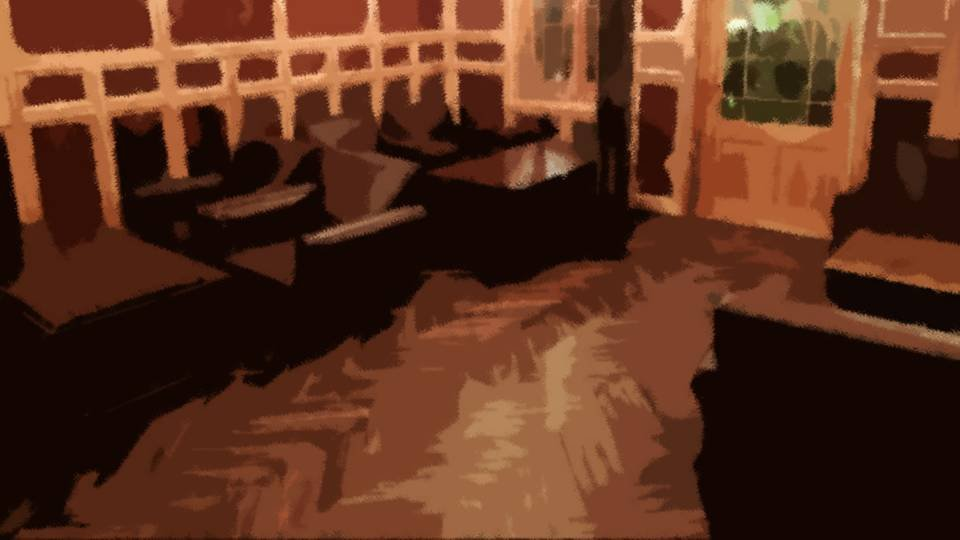
Still in a daze, I went back to the dressing room.
By rights I could have just gone home, but I had no strength left to walk.
I sat down on a chair in the corner of the dressing room.
A disappointment with no sense of release in it, the kind you can regret and regret and never regret enough.
By rights I could have just gone home, but I had no strength left to walk.
I sat down on a chair in the corner of the dressing room.
A disappointment with no sense of release in it, the kind you can regret and regret and never regret enough.
"Mm... Goto-san, good work."
The terribly awkward look on Chigaya-san's face.
“Congratulations on making the final.”
"Mm... Thank you..."
The terribly awkward look on Chigaya-san's face.
“Congratulations on making the final.”
"Mm... Thank you..."
“I'll be going home now. I'll cheer you on from the TV at home.”
"Mm... All right. I'll be sure... to win..."
Tokyo's air is too heavy for me now.
I want to get back to Motoki-cho, fast.
"Mm... All right. I'll be sure... to win..."
Tokyo's air is too heavy for me now.
I want to get back to Motoki-cho, fast.
My legs finally started to move. I bowed to Chigaya-san and left the TV station.
I wandered unsteadily through the streets of Tokyo.
What went wrong, how I could have won: I kept going over it, pointlessly.
I didn't remember which trains I'd taken, but the next thing I knew, I was standing in front of the bullet train.
What went wrong, how I could have won: I kept going over it, pointlessly.
I didn't remember which trains I'd taken, but the next thing I knew, I was standing in front of the bullet train.
Come to think of it, I'd forgotten to ask Chigaya-san about the incident 4 years ago.
Well... none of it matters anymore.
Well... none of it matters anymore.
In the evening, I got home.
"Welcome home, Erina! You were amazing!"
Mom greeted me with a smile.
Of course, the qualifier had been shown live too.
"Welcome home, Erina! You were amazing!"
Mom greeted me with a smile.
Of course, the qualifier had been shown live too.
“Mom...
I'm hungry...”
"Erina, that can't have been enough for you! Wait right there, I'll make something right away!"
Mom took my bags and ran off to the kitchen.
"Erina, that can't have been enough for you! Wait right there, I'll make something right away!"
Mom took my bags and ran off to the kitchen.
Come to think of it, I'd forgotten to buy souvenirs from Tokyo.
But I don't want to think about Tokyo anymore.
But I don't want to think about Tokyo anymore.

I went into my room and collapsed onto the bed.
What... have I been doing...?
Using a mouth good for nothing but eating to prove it has a reason to exist...
If I can't even get through the qualifier, I really am less than a baby.
What... have I been doing...?
Using a mouth good for nothing but eating to prove it has a reason to exist...
If I can't even get through the qualifier, I really am less than a baby.
I was sick of myself for getting even a little fired up.
Had I seriously been trying to win the whole thing?
Honestly... how stupid...
Had I seriously been trying to win the whole thing?
Honestly... how stupid...

My phone went off.
It seemed to be a message.
It seemed to be a message.
“Thank you for your hard work. This is Ukai from Japonica TV.
Sorry for the short notice, but Takano-san, who placed third, has been ordered out by the doctor.
Apparently it was from overdoing it in the qualifier, and appearing in the final is no longer possible, so we were wondering whether Goto-san could take part.
If it's possible, please contact us right away.
It starts at 7 p.m. at the Shibuya crossing.
It's a live broadcast and time is short, so please, do come.
We're counting on you.”
A spot in the final had opened up...?
Me, moved up into the final...?
Me, moved up into the final...?
............
Ridiculous...
I tossed my phone next to my pillow.
I don't want to do any more competitive eating.
I tossed my phone next to my pillow.
I don't want to do any more competitive eating.
Besides, Tokyo by 7 p.m.? There's no making it unless I use a helicopter.
Just... Just, forget it...
Just... Just, forget it...
"Erina! Erina! The TV, the TV!"
Mom burst into my room without even knocking.
And then Mom grabbed my arm and dragged me down to the living room.
Mom burst into my room without even knocking.
And then Mom grabbed my arm and dragged me down to the living room.

The TV was on.
“As a spot in the final has opened up, we are negotiating with fourth-place qualifier Erina Goto-san to appear in the final.”
This was Japonica TV's lead-in show to the final.
They were broadcasting live from the Shibuya crossing, already closed to traffic.
“As a spot in the final has opened up, we are negotiating with fourth-place qualifier Erina Goto-san to appear in the final.”
This was Japonica TV's lead-in show to the final.
They were broadcasting live from the Shibuya crossing, already closed to traffic.
"Erina, you did it! Go back to Tokyo right now and get out there!"
“Mom, it's fine now. I'm weak.”
"What are you saying! A chance like this hardly ever comes along!?"
“Besides, there's no way I can make it by 7 p.m.”
"But Erina...!"
“Mom, it's fine now. I'm weak.”
"What are you saying! A chance like this hardly ever comes along!?"
“Besides, there's no way I can make it by 7 p.m.”
"But Erina...!"
Mom seemed to want me in the final.
Her daughter had been shut in her room all this time, so I understood how she felt, but...
But I had neither the will nor the time anymore.
Her daughter had been shut in her room all this time, so I understood how she felt, but...
But I had neither the will nor the time anymore.
“Gotooo-saaan! Please coooome!”
From the TV, a peculiar voice I'd heard somewhere before...
A glossy pompadour, bouncing softly.
This is the waiter from the steak house yesterday!
From the TV, a peculiar voice I'd heard somewhere before...
A glossy pompadour, bouncing softly.
This is the waiter from the steak house yesterday!
“Motoki-cho folks are here too!”
A group of young people holding placards that said Motoki-cho.
The same placards the people who saw me off had been holding.
They looked like the Motoki High School crowd.
A group of young people holding placards that said Motoki-cho.
The same placards the people who saw me off had been holding.
They looked like the Motoki High School crowd.
"See, Erina! Everyone's cheering for you!"
“But I can't make it in time...”
“But I can't make it in time...”
Just then, the house phone rang.
"Hello, Goto residence. Yes... yes... Nakajima... Choji-san? What!? The mayor!?"
The mayor...?
Come to think of it, yesterday the mayor had been among the people who saw me off.
Don't tell me even the mayor is going to say something like "Be sure to compete"?
"Hello, Goto residence. Yes... yes... Nakajima... Choji-san? What!? The mayor!?"
The mayor...?
Come to think of it, yesterday the mayor had been among the people who saw me off.
Don't tell me even the mayor is going to say something like "Be sure to compete"?
"Erina! Big news!
A helicopter's taking you to Tokyo, the mayor says!"
Huh!!!???
“No, isn't that some kind of mistake?”
"No, it's not! The whole town of Motoki-cho is backing you, so they'll help however they can!"
Huh!!!???
“No, isn't that some kind of mistake?”
"No, it's not! The whole town of Motoki-cho is backing you, so they'll help however they can!"
What a massive waste of taxpayer money!
And anyway, is that even okay just for entering an eating contest!?
The mayor's going to lose the next election!?
And anyway, is that even okay just for entering an eating contest!?
The mayor's going to lose the next election!?
"Come on, get ready, quick! The helicopter's waiting!"
My head in a muddle, I did as Mom said and had the bags I'd only just brought back from Tokyo shoved into my hands.
My head in a muddle, I did as Mom said and had the bags I'd only just brought back from Tokyo shoved into my hands.
And so, still not really understanding, I put on my shoes and ended up heading for Tokyo again.
"Erina, it's fine if you lose!
A chance to get up on a big stage like this will never come again!"
And right then, the intercom rang.
And right then, the intercom rang.

"Pardon the sudden visit. My name is Ise, from the Motoki Police Station.
Um...

The mayor has asked that Goto-san be taken to the heliport with all speed..."
Huh!!!??? Even the police are in on this!?
The mayor's definitely going to lose the next election!?
Huh!!!??? Even the police are in on this!?
The mayor's definitely going to lose the next election!?

I was jostled along in a police car racing with its siren blaring.
Using a police car as a taxi... everything about this is way overblown...
Was Motoki-cho always this dumb a municipality?
Ah, this is so embarrassing...
Using a police car as a taxi... everything about this is way overblown...
Was Motoki-cho always this dumb a municipality?
Ah, this is so embarrassing...
"U-um, Goto-san...
I have been told that you are unable to speak..."
A detective named Ise-san spoke to me.
A detective named Ise-san spoke to me.
"A-as I thought, you are still going strong!"
Huh?
Still going strong? What does that even mean...?
Huh?
Still going strong? What does that even mean...?
"Looking back, 5 years ago!
The Motoki Bishojo Appreciation Society's unshakable No. 1 in popularity, that genius beauty!
I am most delighted to be of service to you in this way!"
I couldn't quite follow what he meant.
Was he going to keep talking at me like this the whole way?
I couldn't quite follow what he meant.
Was he going to keep talking at me like this the whole way?
"I, Daijiro Ise, wishing for Goto-san to regain the brilliance of those days once more, have come to escort you!
The mayor was quickly persuaded as well, and as a resident of Motoki-cho I am greatly honored to be of service!"
Ah, so this man was the one who egged the mayor on...
So that was why he'd come for me so fast.
Ah, so this man was the one who egged the mayor on...
So that was why he'd come for me so fast.
"Even now, when we speak of the brilliance of Goto-san in days gone by, we never once run out of things to say! To begin with, a pretty girl is something to be admired, and to lay a hand on one is utterly unthinkable! The aim of our activities is the wholesome development of pretty girls, and in order to protect such pretty girls from the ruffians who would threaten them, I, as a police officer
Whoa, they really were getting a helicopter ready...
How much tax money is pouring into this just to get me into an eating contest?
The townspeople are definitely going to stage an uprising...
Just as I was thinking that,
How much tax money is pouring into this just to get me into an eating contest?
The townspeople are definitely going to stage an uprising...
Just as I was thinking that,
at the heliport were the people of Motoki-cho, gathered to see me off.
They were shouting encouragement and cheering me on.
It's not just the municipality. The residents are every bit as dumb...
They were shouting encouragement and cheering me on.
It's not just the municipality. The residents are every bit as dumb...
But...
But I really do love Motoki-cho, even like that!
“Ukai-san, sorry for the late reply. I think I can get there just in time. Thank you.”
―Goto-san's coming back, they say!
The sun was going down, and I looked down at the scenery flowing past below.
Carrying the hopes of Motoki-cho, this overblown transport was under way.
Carrying everyone's hopes, these overblown taxes were being squandered.
―Yesss! Blowing my allowance to come all the way to Tokyo was worth it!
All this just for entering an eating contest. It's really ridiculous.
Ridiculous, but...
The star of this foolishness is me.
Then... I, more than anyone, have to be a fool all the way!
―Goto-san, you can absoluuuutely win!
Now that I've come this far, I won't make the same mistake twice.
I have to win, no matter what.
―And I hear she's coming by helicopter!
I thought this was a fight for me alone, but it's a fight for the people of Motoki-cho, and for everyone who's cheering me on.
Everyone is cheering for me.
―A helicopter, that's so cool! Way too celeb!
All right, the champion, Minamizaki-san. And Chigaya-san.
Just you watch! I'm a girl good for nothing but eating, and I've got everyone behind me!
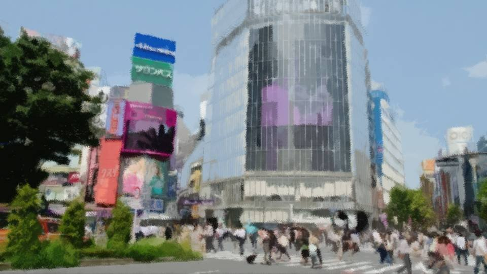
―Shibuya, the scramble crossing.
So many people.
Tomorrow they would close this place to traffic and hold the contest here.
Even the giant screens were running announcements for tomorrow's contest.
A country bumpkin like me gets nervous just standing here...
Tomorrow they would close this place to traffic and hold the contest here.
Even the giant screens were running announcements for tomorrow's contest.
A country bumpkin like me gets nervous just standing here...
If I can, I'll look for a place nearby with a challenge menu.
For tomorrow's visualization training, too, the bigger the gallery, the better.
And something that won't put too much strain on my stomach.
If it affects tomorrow's match, it's all for nothing.
For tomorrow's visualization training, too, the bigger the gallery, the better.
And something that won't put too much strain on my stomach.
If it affects tomorrow's match, it's all for nothing.
I searched on my smartphone, and...
Hmm, there are lots of restaurants, but the one with a challenge menu is―
A steak house a 15-minute walk from here.
Its name: 'Shanikukan'. [TN: Shanikukan, roughly "carnival hall"; a pun on shanikusai, carnival]
Hmm, there are lots of restaurants, but the one with a challenge menu is―
A steak house a 15-minute walk from here.
Its name: 'Shanikukan'. [TN: Shanikukan, roughly "carnival hall"; a pun on shanikusai, carnival]
Apparently they had a 5-pound steak challenge menu.
One pound is about 450 grams, so 5 pounds is about 2300 grams.
Not a big amount, but it'll be dinnertime soon, so there should be a decent gallery.
One pound is about 450 grams, so 5 pounds is about 2300 grams.
Not a big amount, but it'll be dinnertime soon, so there should be a decent gallery.
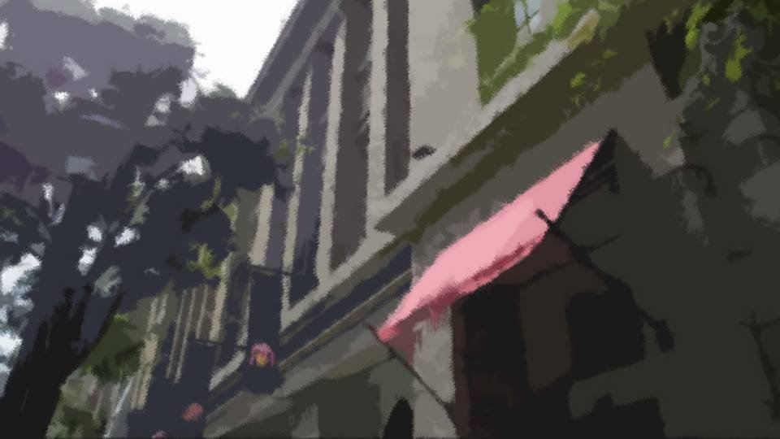
So this is it. Nothing about the outside stood out.
There was no sign advertising a big-eater menu, just a standing sign that said 'Shanikukan'.
All right, here goes: charge!
There was no sign advertising a big-eater menu, just a standing sign that said 'Shanikukan'.
All right, here goes: charge!
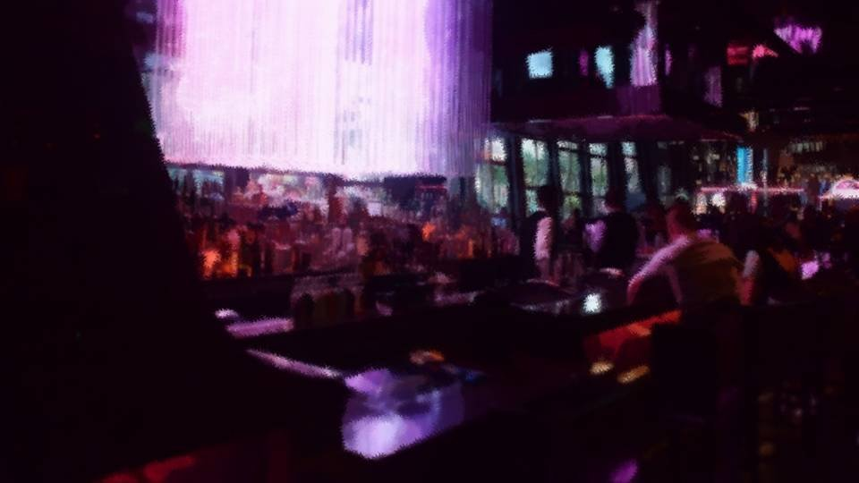
―When I went in, I was greeted by loud voices and flashy background music.
It was more like a bar than a restaurant.
And not the kind of place where men hit on women, either, but a very noisy one, like a cheap pub or a sports bar.
A place the kanji of 'Shanikukan' don't suit.
It was more like a bar than a restaurant.
And not the kind of place where men hit on women, either, but a very noisy one, like a cheap pub or a sports bar.
A place the kanji of 'Shanikukan' don't suit.
Then a man with glossy regent hair (properly, a pompadour) sprang out in front of me, his forelock swaying.
"Weeeeeeeeeeeelcome!
Welcome to Shanikukan!
Party of one, right this waaaaaaaaaaaaay!"
I hadn't even told him how many, yet he saw that I was alone, and practically pushing me from behind, he showed me to a seat―
With the deftness of a magic trick he guided me to a chair, pulling it out and pushing it in with perfect timing to seat me.
I hadn't even told him how many, yet he saw that I was alone, and practically pushing me from behind, he showed me to a seat―
With the deftness of a magic trick he guided me to a chair, pulling it out and pushing it in with perfect timing to seat me.
"Once you've decided on your order, call us with that button there, pleaaaaaaaaaaaaaase!"
The cheerful waiter with the glossy pompadour set down a menu and left.
The cheerful waiter with the glossy pompadour set down a menu and left.
Is this the Tokyo style of customer service?
Not a restful atmosphere for a meal.
But, well, as practice for tomorrow, it's just right.
A place this lively and full of people feels more like a contest.
Not a restful atmosphere for a meal.
But, well, as practice for tomorrow, it's just right.
A place this lively and full of people feels more like a contest.
When I opened the menu, the item I was after jumped right out at me.
5-pound steak, time limit 30 minutes.
Comes with 500 grams of rice and 500 grams of soup.
Free if you finish it, 5,000 yen + tax if you can't.
For me... I could probably polish it off in 15 minutes.
Okay, no need to hesitate.
I pressed the button right away.
5-pound steak, time limit 30 minutes.
Comes with 500 grams of rice and 500 grams of soup.
Free if you finish it, 5,000 yen + tax if you can't.
For me... I could probably polish it off in 15 minutes.
Okay, no need to hesitate.
I pressed the button right away.
"Yes! Have you decideeeeeeed!?"
The instant I pressed it, the waiter from before came flying over.
I made an X over my mouth with my fingers, then pointed at the 5-pound steak.
The instant I pressed it, the waiter from before came flying over.
I made an X over my mouth with my fingers, then pointed at the 5-pound steak.
"Oh dear, I'm soooooooooooorry!
That item needs a reservation the day befooooore!"
When I looked closely, the menu did say reservations were required.
Right, a steak that size would take time to cook, of course.
And I'd thought it would make good practice...
I hung my head in disappointment.
When I looked closely, the menu did say reservations were required.
Right, a steak that size would take time to cook, of course.
And I'd thought it would make good practice...
I hung my head in disappointment.
"Hmm?
Huh?
Can't talk, taking on the big-eater menu, and with these looks, that means...
By any chance, aren't you competing in tomorrow's conteeeeest!?
One moment, pleaaaaase!"
The waiter shot off to the kitchen.
So my face is known even in a place like this...
It's a little embarrassing...
The waiter shot off to the kitchen.
So my face is known even in a place like this...
It's a little embarrassing...
"Hey, hey, isn't that girl the Silent Angel from the commercial!?"
"Yeah, yeah! She ate 10 kilos of curry, right!?"
I could hear talk like that all around me.
A celebrity without knowing it. It really is embarrassing...
Then the same waiter came flying back, forelock swaying.
"Yeah, yeah! She ate 10 kilos of curry, right!?"
I could hear talk like that all around me.
A celebrity without knowing it. It really is embarrassing...
Then the same waiter came flying back, forelock swaying.
"Thank you for waaaaaaaaaaiting!
I checked with the owner and the chef, and as a special exception, we can prepare the 5-pound steak for yooooooooou!"
When the waiter shouted that, applause broke out all around at once.
When the waiter shouted that, applause broke out all around at once.
"For real!? It's a warm-up bout for tomorrow's contest!"
"Awesome! We get to see it live!?"
Suddenly the center of attention: the Silent Angel, Erina Goto.
Enough! After coming this far, this is no time to be embarrassed!
Besides, a mere 5 pounds... are they all underestimating me?
"Awesome! We get to see it live!?"
Suddenly the center of attention: the Silent Angel, Erina Goto.
Enough! After coming this far, this is no time to be embarrassed!
Besides, a mere 5 pounds... are they all underestimating me?
I pointed at the 5-pound steak and signaled 'Two, please' with my fingers.
"Huh? Whaaaaaaaaaaat!? Y-you're really taking on the 5-pound steak... two sets of it!?"
I stood up and gave a big nod.
"Huh? Whaaaaaaaaaaat!? Y-you're really taking on the 5-pound steak... two sets of it!?"
I stood up and gave a big nod.
"Whoooaaa!!!"
"That's a favorite to win for you!!!"
The audience stood up too and applauded.
Having stirred them up this much, I can't go making a fool of myself.
That's right! For tomorrow's sake, they need to get this fired up!
"That's a favorite to win for you!!!"
The audience stood up too and applauded.
Having stirred them up this much, I can't go making a fool of myself.
That's right! For tomorrow's sake, they need to get this fired up!
"Th-then we will prepare the 10-pound steeeeeeeeeeak!
It takes time to cook, so please wait about 2 hours!"
The waiter shot off to the kitchen.
It's far too long to wait for a meal, but I'm the one who made the unreasonable order, so it can't be helped.
The waiter shot off to the kitchen.
It's far too long to wait for a meal, but I'm the one who made the unreasonable order, so it can't be helped.
"U-uh, could we get a picture with you!?"
Two girls of about high-school age walked up to me.
I grinned back at them.
Two girls of about high-school age walked up to me.
I grinned back at them.
"Eeek, so cute! We'll come cheer for you tomorrow!"
After we took the picture together, we shook hands firmly.
And then, behind them, a long line had formed.
Everyone had taken out cameras and phones, apparently wanting pictures with me.
After we took the picture together, we shook hands firmly.
And then, behind them, a long line had formed.
Everyone had taken out cameras and phones, apparently wanting pictures with me.
"Thank you! Good luck!"
"Goto-san's smile is seriously cute!"
It was the first time I'd been fussed over like this since I threw away the name of genius girl.
Honestly, it doesn't feel bad.
I've really changed a lot in these few days.
"Goto-san's smile is seriously cute!"
It was the first time I'd been fussed over like this since I threw away the name of genius girl.
Honestly, it doesn't feel bad.
I've really changed a lot in these few days.
Still, I'd thought it was just an eating contest, but it sure gets a lot of attention.
Here, and at tomorrow's contest too, this means I really can't afford to fail...
Here, and at tomorrow's contest too, this means I really can't afford to fail...
―Meanwhile, onlookers who'd heard the rumor kept coming in one after another, until the place was packed with spectators.
What with keeping the gallery company and all, 2 hours went by in no time.
I had gotten completely hungry.
What with keeping the gallery company and all, 2 hours went by in no time.
I had gotten completely hungry.
"Thank you for waiting, Goto-sama!
We've prepared a special seat over there, so come, come, let me show you the waaaaaaaaaay!"
The waiter took my hand and pulled me toward the back of the restaurant.
The waiter took my hand and pulled me toward the back of the restaurant.
What is this place? Like a live music club, it even had a stage and spotlights.
Normally they must bring in bands for live events.
On the stage, a chair for one and a large table had been set out.
I see, so this is tonight's battlefield.
Normally they must bring in bands for live events.
On the stage, a chair for one and a large table had been set out.
I see, so this is tonight's battlefield.
"Ladies aaand gentlemen!
The 10-pound steak is off the grill!"
When the waiter made the announcement, his glossy pompadour swaying, the restaurant was engulfed in the gallery's wild applause and cheers.
I, too, bowed deeply to the gallery.
Such fervor it no longer seemed like a steak house.
I sat down in the chair prepared for me and took in the view from up here.
When the waiter made the announcement, his glossy pompadour swaying, the restaurant was engulfed in the gallery's wild applause and cheers.
I, too, bowed deeply to the gallery.
Such fervor it no longer seemed like a steak house.
I sat down in the chair prepared for me and took in the view from up here.
Everyone was looking at me.
This does make me a little nervous...
No, this is good. Tomorrow I'll be even more nervous.
This much nervousness is just right.
This does make me a little nervous...
No, this is good. Tomorrow I'll be even more nervous.
This much nervousness is just right.
"Noooooow!! At long last, the 10-pound steak set makes its entraaaaaance!!!"
The lights in the restaurant went down, and a spotlight was turned on the kitchen doorway.
A big tray, carried in by two people.
On it, 1 kilo of rice and 1 kilo of soup― and a giant 4.6-kilo steak.
A big tray, carried in by two people.
On it, 1 kilo of rice and 1 kilo of soup― and a giant 4.6-kilo steak.
"Can she really eat something like that!?"
"A tiny, skinny girl like that, eating that!?"
Rather than getting excited, the gallery was taken aback by the size of the steak.
"A tiny, skinny girl like that, eating that!?"
Rather than getting excited, the gallery was taken aback by the size of the steak.
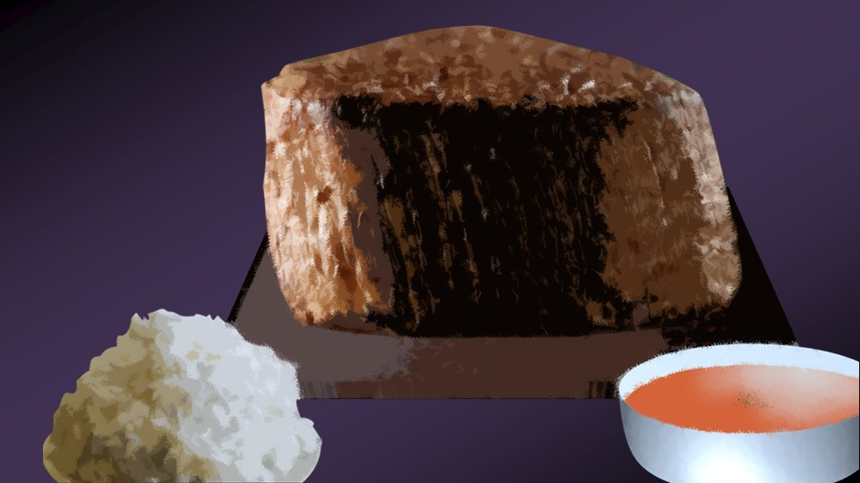
The tray landed in front of me with a thud.
A slab of meat sitting on a sizzling-hot iron plate.
Unbelievable: it came out as one whole slab, not cut at all.
No wonder it took 2 hours.
A slab of meat sitting on a sizzling-hot iron plate.
Unbelievable: it came out as one whole slab, not cut at all.
No wonder it took 2 hours.
As you'd expect, it was tremendously intimidating.
But if I can't eat this much, I'll only embarrass myself at tomorrow's contest.
As long as I don't know what Chigaya-san is capable of, even this steak may still be on the small side.
This is not a warm-up bout―today is the real thing too...!
But if I can't eat this much, I'll only embarrass myself at tomorrow's contest.
As long as I don't know what Chigaya-san is capable of, even this steak may still be on the small side.
This is not a warm-up bout―today is the real thing too...!
"Now, can the Silent Angel Erina Goto devour this enormous slab of meat!?
The time limit is 60 minutes!"
I estimated 15 minutes for 5 pounds, so I'll settle this within 30 minutes.
Including the rice and soup, 6.6 kilos in total.
So 1.1 kilos every 5 minutes.
I estimated 15 minutes for 5 pounds, so I'll settle this within 30 minutes.
Including the rice and soup, 6.6 kilos in total.
So 1.1 kilos every 5 minutes.
"And now, the Silent Angel Erina Goto's Big Eating Festival 804 warm-up bout!
Nnnnnnnnnn... Begiiiin!!!"
At that signal, loud applause rang through the venue again.
I silently said the words before a meal and picked up my knife and fork.
At that signal, loud applause rang through the venue again.
I silently said the words before a meal and picked up my knife and fork.
First, I start by cutting into this slab of meat.
It's at least 30cm thick, so I have to shave it off as I eat, like churrasco or kebab.
I put my knife into a corner and quickly brought the meat to my mouth.
It's at least 30cm thick, so I have to shave it off as I eat, like churrasco or kebab.
I put my knife into a corner and quickly brought the meat to my mouth.
............
Mm, it was fairly lightly seasoned, but the flavor had soaked in well, the meat barely smelled gamey, and it was delicious.
Several kinds of steak sauce had been provided too, so getting tired of the taste wouldn't be a problem.
Several kinds of steak sauce had been provided too, so getting tired of the taste wouldn't be a problem.
The problem is my technique at cutting the meat, my strength to chew, and my strength to swallow.
While I'm chewing, I have to cut as much meat as I can.
While I'm chewing, I have to cut as much meat as I can.
And then there's when to start on the rice and soup.
There's far less rice than meat, so as an item for changing the taste and texture to boost my appetite, it's very scarce.
The soup is best drunk in place of water.
There's far less rice than meat, so as an item for changing the taste and texture to boost my appetite, it's very scarce.
The soup is best drunk in place of water.
―Okay, I've worked out a rough plan.
I divide the 10 pounds of meat into 10 parts in my head, and each time I finish a pound's worth, I eat about 100 grams of rice by eye.
And since it strains the esophagus without liquid, I wash it down with soup as needed.
I divide the 10 pounds of meat into 10 parts in my head, and each time I finish a pound's worth, I eat about 100 grams of rice by eye.
And since it strains the esophagus without liquid, I wash it down with soup as needed.
―5 minutes in, I finished what looked like the first pound.
As planned, I crammed about 1/10 of the rice into my mouth and washed it down into my stomach with soup.
With 1/6 of the time gone, I had eaten only 1/10.
I'm way behind...!
As planned, I crammed about 1/10 of the rice into my mouth and washed it down into my stomach with soup.
With 1/6 of the time gone, I had eaten only 1/10.
I'm way behind...!
"5 minutes in, and she's already finished 1/10, hasn't she!
That's a more than sufficient pace to finish in 60 minutes!"
What are you talking about! My goal is half that, 30 minutes!
Finishing something like this right at the time limit won't come close to tomorrow's level!
First I need to cut faster!
I've gotten pretty used to cutting the meat, so I should be able to improve there.
What are you talking about! My goal is half that, 30 minutes!
Finishing something like this right at the time limit won't come close to tomorrow's level!
First I need to cut faster!
I've gotten pretty used to cutting the meat, so I should be able to improve there.
After that, it's how long my chewing power and swallowing power hold out.
This is no longer a battle of the stomach.
How efficiently can I eat―it's a real test of technique.
This is no longer a battle of the stomach.
How efficiently can I eat―it's a real test of technique.
Next, I finished the second pound.
Time elapsed: 8 minutes.
A pace of 4 minutes per pound means I can't finish in 30 minutes like this.
I have to make up ground somewhere!
Time elapsed: 8 minutes.
A pace of 4 minutes per pound means I can't finish in 30 minutes like this.
I have to make up ground somewhere!
My stomach was still fine.
But now I was reaching the medium part inside.
The meat's gamey smell was strong there, as you'd expect.
But now I was reaching the medium part inside.
The meat's gamey smell was strong there, as you'd expect.
Okay, time for the steak sauce!
The options: wasabi soy sauce, ponzu, barbecue, garlic, whole-grain mustard, and so on.
I'll try the garlic sauce, as strong in aroma and flavor as they get.
The options: wasabi soy sauce, ponzu, barbecue, garlic, whole-grain mustard, and so on.
I'll try the garlic sauce, as strong in aroma and flavor as they get.
"Oh! She's finally used a sauce!
Organically grown in Aomori Prefecture, fragrant premium garlic used without restraint: our house-pride garlic saaaaaaaaaaauce!"
Yes, this garlic sauce is really good!
My eating speed is picking up on its own!
While I can, wash the medium and rare parts down into my stomach with garlic sauce!
Yes, this garlic sauce is really good!
My eating speed is picking up on its own!
While I can, wash the medium and rare parts down into my stomach with garlic sauce!
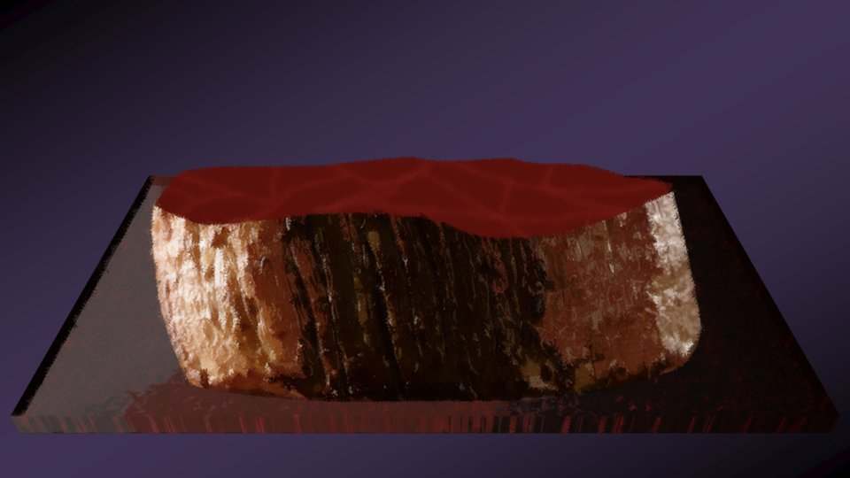
At 11 minutes, I finished the third pound.
1/3 of the time had already passed, but my speed still wasn't catching up.
And I was already eating at close to my limit...!
Think! Think, former genius girl...!
1/3 of the time had already passed, but my speed still wasn't catching up.
And I was already eating at close to my limit...!
Think! Think, former genius girl...!
My arms, jaw, and throat were starting to tire.
On top of that, the meat was cooling bit by bit and getting tougher.
Like this, whipping my body on to keep eating isn't going to work.
I have to change the way I'm eating itself!
On top of that, the meat was cooling bit by bit and getting tougher.
Like this, whipping my body on to keep eating isn't going to work.
I have to change the way I'm eating itself!
Hot!
My hand touched the big iron plate, still hot, and I dropped my fork.
But there were spare forks on the table, so it wasn't much of a time loss.
The hot iron plate...
That's it!
My hand touched the big iron plate, still hot, and I dropped my fork.
But there were spare forks on the table, so it wasn't much of a time loss.
The hot iron plate...
That's it!
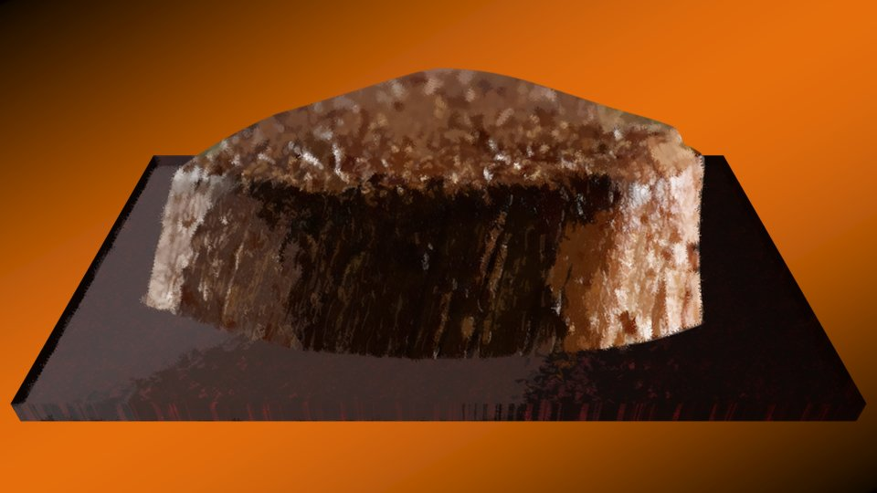
I flipped the 6-pound slab of meat over with both hands.
A side that was still hot and looked tender came up on top.
I stuck my knife into that side.
A side that was still hot and looked tender came up on top.
I stuck my knife into that side.
Yes, it's tender!
Warm the cooled, tough parts on the iron plate, and attack from the warm parts!
This should speed me up a lot!
Warm the cooled, tough parts on the iron plate, and attack from the warm parts!
This should speed me up a lot!
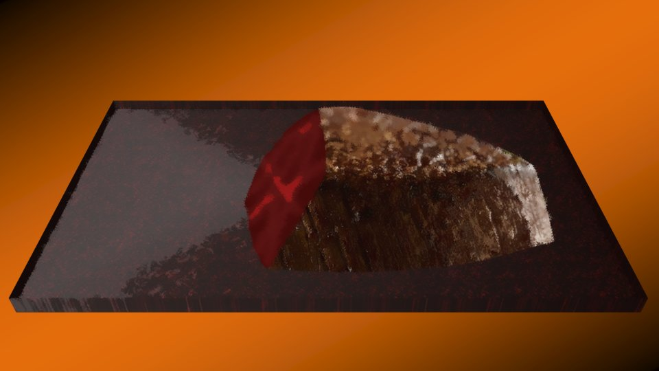
4 pounds―
5 pounds―
6 pounds―
With more than half eaten, 10 minutes remained.
"Ooooh!!! With 40 minutes still to go, there's less than half the meat leeeeeeeeeft!"
When the waiter shouted, cries of 'Go for it!' flew from the gallery.
With more than half eaten, 10 minutes remained.
"Ooooh!!! With 40 minutes still to go, there's less than half the meat leeeeeeeeeft!"
When the waiter shouted, cries of 'Go for it!' flew from the gallery.
By the rules, still 40 minutes.
By my goal, 10 more minutes!
Come on, go for it, me!
You're good for nothing but eating, aren't you!? So what are you doing, losing at eating!?
By my goal, 10 more minutes!
Come on, go for it, me!
You're good for nothing but eating, aren't you!? So what are you doing, losing at eating!?
But my arms, throat, and jaw really were near their limit.
The iron plate had cooled too, so Operation Warm-the-Meat was no longer an option either.
The more time passed, the further I was driven into a corner.
The iron plate had cooled too, so Operation Warm-the-Meat was no longer an option either.
The more time passed, the further I was driven into a corner.
But I won't lose...!
This mouth is only there to eat!
Eating is the last goal I have left!
Come on, don't lose! Don't you dare lose...!
This mouth is only there to eat!
Eating is the last goal I have left!
Come on, don't lose! Don't you dare lose...!
―When I put down my knife and fork, cheers and applause like never before sent a shock through Tokyo.
"Amazing! It's amazing! She really finished it all!
Time remaining...
22 minutes!
With 22 minutes to spare! In 38 minutes, the Silent Angel Erina Goto has crushed the 10-pound steak!!!"
I stood up and bowed to the gallery.
For a while, I couldn't lift my head.
I stood up and bowed to the gallery.
For a while, I couldn't lift my head.
I had lost to myself.
The tears of frustration wouldn't stop.
I didn't want the excited gallery to see that.
The tears of frustration wouldn't stop.
I didn't want the excited gallery to see that.
"Now, Goto-san, a word for everyone...
Oops, my apologies.
With skills as splendid as these, tomorrow's Big Eating Festival is sure to go to Goto-san as well!
I have tomorrow off, so I'll definitely be there to cheer!
Everyone, let's go cheer her ooooooooooon!"
The gallery gave another round of applause.
To the very end, I couldn't lift my head.
The gallery gave another round of applause.
To the very end, I couldn't lift my head.
―Eventually, most of the gallery left the restaurant.
By then, my tears had dried.
But among the gallery, there was one person who showed no sign of leaving―
This person is...
By then, my tears had dried.
But among the gallery, there was one person who showed no sign of leaving―
This person is...
"Mm... Goto-san, that was amazing."
Chigaya-san had been watching too.
Chigaya-san had been watching too.
"Mm... But it looks like you weren't satisfied with the result."
Chigaya-san seemed to have seen right through me.
My pace had been plenty to finish in 60 minutes, and yet there I was, abnormally frantic.
To someone who knows what to look for, it shows...
Chigaya-san seemed to have seen right through me.
My pace had been plenty to finish in 60 minutes, and yet there I was, abnormally frantic.
To someone who knows what to look for, it shows...

"Mm... Look at this."
Chigaya-san pointed to a sheet of paper on the wall.
On it―
Chigaya-san pointed to a sheet of paper on the wall.
On it―
“Chigaya Niimura 10-pound steak Record: 36 minutes”
She had taken on the same challenge as me.
And she ate it 2 minutes faster than I did.
She had taken on the same challenge as me.
And she ate it 2 minutes faster than I did.
"Mm... I was studying abroad until last month.
I'm back at my family home now, but last week I came to Tokyo on a small errand.
I took the challenge here, and Japonica TV happened to scout me."
So it was just last week. No wonder I couldn't find anything when I looked.
So it was just last week. No wonder I couldn't find anything when I looked.
"Mm... If you'd flipped the meat a little sooner, you would have tied my record.
This told me that my ability and Goto-san's are almost evenly matched.
I'm sorry. I just had to know what you could do, so I followed you."
I see... The moment I let my guard down in front of Chigaya-san, my defeat was probably already decided.
If I had noticed Chigaya-san was there, I might have finished faster.
If I had noticed Chigaya-san was there, I might have finished faster.
With the gallery getting so worked up like that, I'd gotten carried away and let my guard slip.
That's all my resolve amounted to.
That's all my resolve amounted to.
“Are there any other contestants on your mind?”
"Mm... From what I've seen, the favorites are you and the current champion, Minamizaki-san. Most likely the three of us, me included, will be the ones who get through the qualifier. So don't fight all out in tomorrow's qualifier. It's bound to tell on you in the final."
"Mm... From what I've seen, the favorites are you and the current champion, Minamizaki-san. Most likely the three of us, me included, will be the ones who get through the qualifier. So don't fight all out in tomorrow's qualifier. It's bound to tell on you in the final."
“Why are you giving me that advice?”
"Mm... Because it's not fair... Only I got to see Goto-san's ability, and I haven't shown mine. Even if I tried to show you now, it would be hard to take the challenge under the same conditions as Goto-san."
“Thank you. But tomorrow, I am absolutely not going to lose!”
"Mm... Because it's not fair... Only I got to see Goto-san's ability, and I haven't shown mine. Even if I tried to show you now, it would be hard to take the challenge under the same conditions as Goto-san."
“Thank you. But tomorrow, I am absolutely not going to lose!”
"Mm... I'm looking forward to it.
But the current champion, Minamizaki-san, is quite the veteran.
Depending on the food, inexperienced people like us could end up at a disadvantage.
Even if we beat her in stomach capacity, we can't let our guard down.
Today's challenge taught you that well, didn't it?"
True, today the key had been how efficiently I could eat.
Winning without a proper strategy is impossible.
Winning without a proper strategy is impossible.
I parted ways with Chigaya-san when we left the restaurant.
Chigaya-san said she'd keep to a light meal to get in shape for tomorrow.
Chigaya-san said she'd keep to a light meal to get in shape for tomorrow.
I gained a lot from the battle at Shanikukan.
All that's left is to wait for the real thing tomorrow.
Everyone in Motoki-cho, please watch me.
I am absolutely going to win, you'll see!
All that's left is to wait for the real thing tomorrow.
Everyone in Motoki-cho, please watch me.
I am absolutely going to win, you'll see!
―That night, when I got home, Mom was waiting for me, close to tears.
Even Dad, who'd been away on a business trip, had come back, and on top of that, the police were there.
It had turned into a much bigger fuss than I'd thought.
Even Dad, who'd been away on a business trip, had come back, and on top of that, the police were there.
It had turned into a much bigger fuss than I'd thought.
That was because I had completely forgotten I'd turned my phone off for the filming.
My parents apologized to the police over and over, but the officers said they were glad nothing had happened and went back.
My parents apologized to the police over and over, but the officers said they were glad nothing had happened and went back.
That day, I got scolded, as you'd expect.
Since that incident, my parents had stopped scolding me, but I was scolded for hours.
But in the end, they were glad I had come back.
More than the scolding, it was having made them sad, and then having made them glad, that hit me hard.
Since that incident, my parents had stopped scolding me, but I was scolded for hours.
But in the end, they were glad I had come back.
More than the scolding, it was having made them sad, and then having made them glad, that hit me hard.
When I told them I wanted to enter Japonica TV's eating contest, my parents' faces brightened even more.
Even if it was an eating contest, they were very happy that I'd chosen to take on a challenge of my own will.
That same day, I sent Ukai-san an official email saying I would take part.
Even if it was an eating contest, they were very happy that I'd chosen to take on a challenge of my own will.
That same day, I sent Ukai-san an official email saying I would take part.
―The next day, at the usual diner.
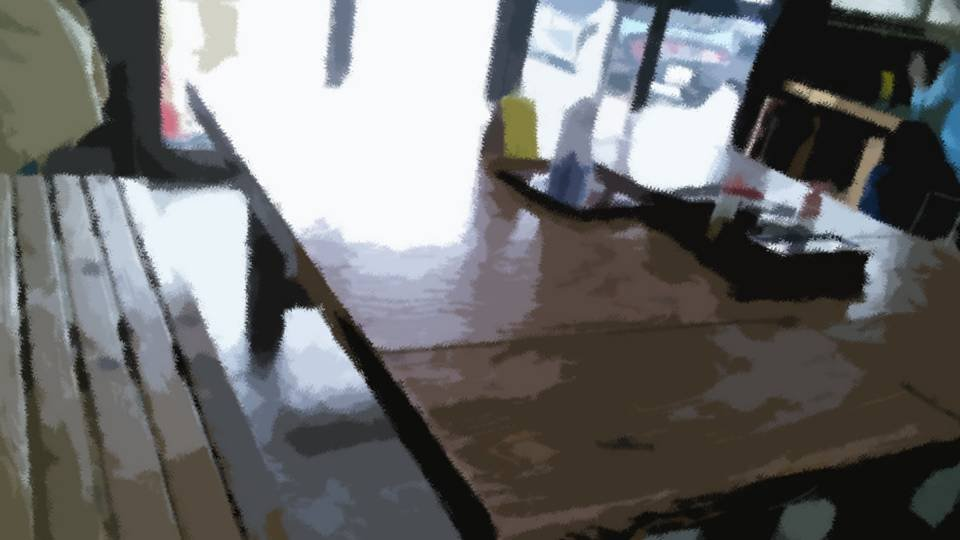
"Erina-chan, I hear you're entering the eating contest!
Here, this is our special training menu!
You'll win for sure, Erina-chan!"
What he set in front of me were dishes that looked hard to eat, made with octopus and thick-cut meat.
Even with no time to train, eating things like this would let me picture it.
What he set in front of me were dishes that looked hard to eat, made with octopus and thick-cut meat.
Even with no time to train, eating things like this would let me picture it.
I gave the owner a big grin.
"Oh! Erina-chan, I haven't seen that face in a long time! I'm rooting for you all the way!"
It had been a long time since I'd smiled like this, too.
It seemed I had more people on my side than I'd thought.
"Oh! Erina-chan, I haven't seen that face in a long time! I'm rooting for you all the way!"
It had been a long time since I'd smiled like this, too.
It seemed I had more people on my side than I'd thought.

Shiyo 804, May 21 19:15
heard one of our grads is entering the next eating contest!
Shiyo 804, May 21 19:20
for real!?
Shiyo 804, May 21 19:25
erina goto, anybody know her?
heard one of our grads is entering the next eating contest!
Shiyo 804, May 21 19:20
for real!?
Shiyo 804, May 21 19:25
erina goto, anybody know her?
Shiyo 804, May 21 19:27
oh, that legendary genius girl, right?
she's a big eater too!
Shiyo 804, May 21 19:30
definitely watching! or how about we make a cheer squad and go to tokyo?
Shiyo 804, May 21 19:32
oh! it's a chance to show off motoki-cho on live tv!
oh, that legendary genius girl, right?
she's a big eater too!
Shiyo 804, May 21 19:30
definitely watching! or how about we make a cheer squad and go to tokyo?
Shiyo 804, May 21 19:32
oh! it's a chance to show off motoki-cho on live tv!
Even the Motoki High School message board had posts about me.
Just from eating a lot, Motoki-cho was this fired up.
Just from eating a lot, Motoki-cho was this fired up.
So there were still plenty of things even I could do.
I absolutely can't lose! For everyone cheering me on, and for myself too, I'll become number one in Japan!
I absolutely can't lose! For everyone cheering me on, and for myself too, I'll become number one in Japan!
―The next week, the day before the contest
"Erina, good luck!"
As I put on my shoes, Mom's cheering hit me in the back.
Mom's eyes were already teary.
“I'll win for sure!”
I answered Mom in sign language.
As I put on my shoes, Mom's cheering hit me in the back.
Mom's eyes were already teary.
“I'll win for sure!”
I answered Mom in sign language.
―Okay, I'm off!
I left the house with my head held high.
I left the house with my head held high.

On the way to Motoki Station, lots of people called out to me.
"The genius girl is back!"
"The genius girl is back!"
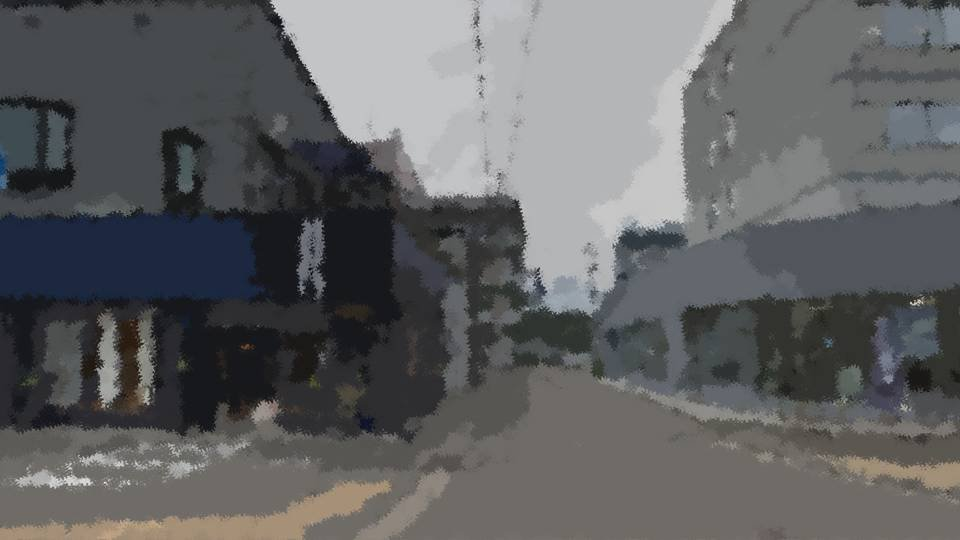
"I'll be cheering for you in front of the TV!"

"Erina-chan! Here, take this with you!"
Familiar faces I passed cheered me on, or gave me send-off gifts.
Familiar faces I passed cheered me on, or gave me send-off gifts.
And I had tried, even once, to leave this place...
Leaving Motoki-cho, with so many wonderful people in it, is unimaginable to me now.
Leaving Motoki-cho, with so many wonderful people in it, is unimaginable to me now.

―On the platform at Motoki Station, there was a group holding a big banner.
"Erina Goto-san! On behalf of the people of Motoki-cho, I offer you our encouragement!"
This is the mayor...!
I never imagined I'd get support at the level of the local government...
So Motoki-cho's complacency from too much peace has come this far.
As I realized again how much I was carrying on my back, my fighting spirit finally surged.
"Erina Goto-san! On behalf of the people of Motoki-cho, I offer you our encouragement!"
This is the mayor...!
I never imagined I'd get support at the level of the local government...
So Motoki-cho's complacency from too much peace has come this far.
As I realized again how much I was carrying on my back, my fighting spirit finally surged.
How was I, without a voice, supposed to respond?
I grinned as big as I could and waved hard.
Then a big cheer rose from the cheering squad.
Right now, Motoki-cho is shaking for me.
Right now, I am shaking Motoki-cho.
I grinned as big as I could and waved hard.
Then a big cheer rose from the cheering squad.
Right now, Motoki-cho is shaking for me.
Right now, I am shaking Motoki-cho.
I will definitely win!
With that war cry in my heart, I boarded the train.
With that war cry in my heart, I boarded the train.
―My second time in Tokyo.
Stepping off at the station, I took a deep breath.
It was different.
Completely different from the air last time.
This breath wasn't because I was suffocating.
It was a breath to take into myself the vigor of the myriad gods drifting through the air.
It was different.
Completely different from the air last time.
This breath wasn't because I was suffocating.
It was a breath to take into myself the vigor of the myriad gods drifting through the air.
Okay!
I slapped my cheeks with both hands and headed for the ticket gates.
I slapped my cheeks with both hands and headed for the ticket gates.
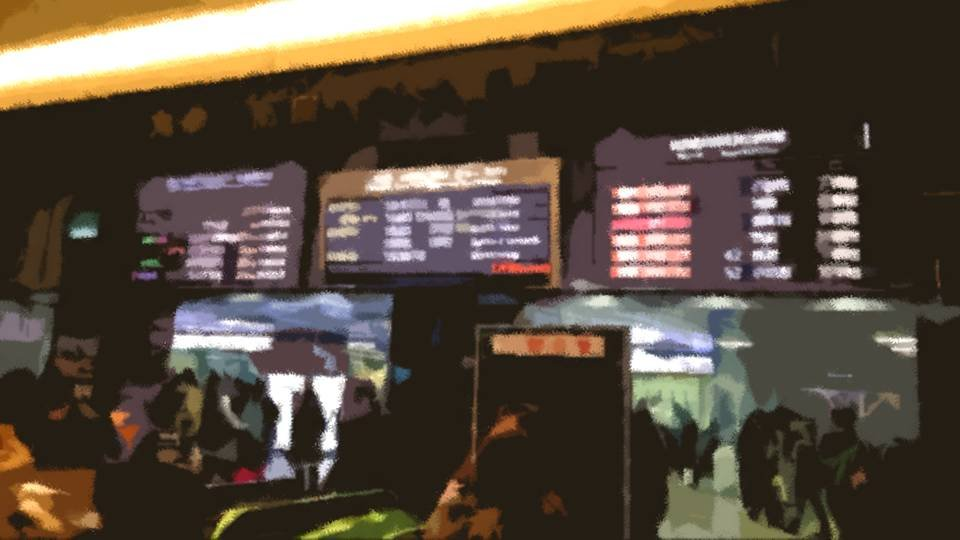
And there beyond the gates stood the director, Ukai-san.
"Oh, Goto-san! Thank you so much for coming!"
Came all the way out here just to meet me?
To answer that courtesy with everything I had, I grinned as we shook hands.
"Oh, Goto-san! Thank you so much for coming!"
Came all the way out here just to meet me?
To answer that courtesy with everything I had, I grinned as we shook hands.
"Goto-san, your face is totally different from last time!
Great, great! Do your best!"
Just me smiling really does change the impression a lot.
A bus was apparently waiting outside the station, so I headed where I'd been told.
Just me smiling really does change the impression a lot.
A bus was apparently waiting outside the station, so I headed where I'd been told.
Apparently the TV station was putting us up tonight at a hotel they had arranged, and we were heading there now.
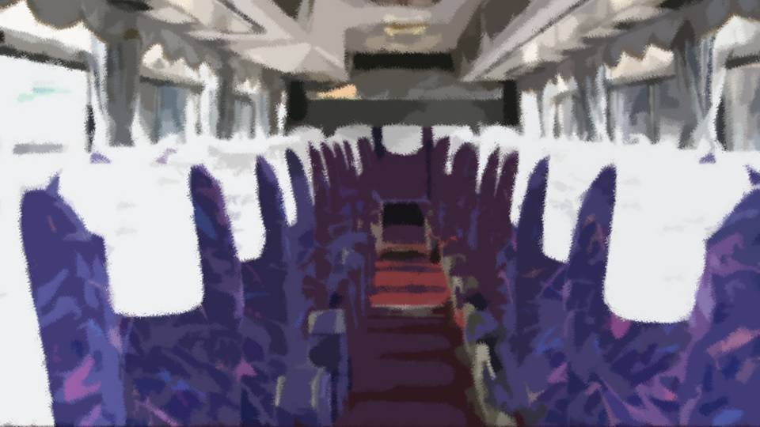
Several people who looked like contestants were already seated on the bus.
A large man who looked every inch the big eater.
A slender, gentle-looking man so thin you'd doubt he could really eat much.
And―
A large man who looked every inch the big eater.
A slender, gentle-looking man so thin you'd doubt he could really eat much.
And―

A fair-skinned woman with a graceful air.
Somehow she looked foreign...
The seat next to her happened to be free, so I sat down there.
Somehow she looked foreign...
The seat next to her happened to be free, so I sat down there.
"Mm... Hello."
The woman greeted me.
I bowed without a word.
This woman really was different from a Japanese person.
Her facial features, for one, and her eyes were blue.
The woman greeted me.
I bowed without a word.
This woman really was different from a Japanese person.
Her facial features, for one, and her eyes were blue.
Was even someone like her entering the eating contest?
Then again, I'm entering with a small build like this, so she may be strong despite her looks.
Then again, I'm entering with a small build like this, so she may be strong despite her looks.
"Mm... Could it be that you can't speak?"
Then the woman spoke to me in sign language.
“Do you understand sign language?” she asked.
I was surprised, and at the same time, it was the first time I'd met someone outside my family and social workers who could sign.
Then the woman spoke to me in sign language.
“Do you understand sign language?” she asked.
I was surprised, and at the same time, it was the first time I'd met someone outside my family and social workers who could sign.
“Nice to meet you. My name is Erina Goto. I can hear, but I can't speak.”
I replied in sign language.
"Mm... Oh, then we won't have any trouble communicating. My name is Chigaya Niimura. Pleased to meet you."
Same surname as Niimura-senpai.
But there must be any number of people named Niimura if you go looking.
I replied in sign language.
"Mm... Oh, then we won't have any trouble communicating. My name is Chigaya Niimura. Pleased to meet you."
Same surname as Niimura-senpai.
But there must be any number of people named Niimura if you go looking.
On the bus, they handed out tomorrow's schedule.
From 10 a.m., the qualifier, 30 minutes.
From 7 p.m., the final, 60 minutes.
Both broadcast live nationwide.
From 10 a.m., the qualifier, 30 minutes.
From 7 p.m., the final, 60 minutes.
Both broadcast live nationwide.
So I have to eat to my limit twice in one day.
Even with 8 and a half hours in between, this is pretty tough.
On top of that, the qualifier is a narrow gate, cutting 100 people down to three.
And what we'll be eating won't be revealed until right before the start.
Even with 8 and a half hours in between, this is pretty tough.
On top of that, the qualifier is a narrow gate, cutting 100 people down to three.
And what we'll be eating won't be revealed until right before the start.
It was only the day before, and the nerves were building already.
I could feel my stomach clench up tight.
Tomorrow I'll be even more nervous, and my stomach will probably shrink up.
What I can do now is get myself, by tomorrow, into a condition where I can eat even when I'm nervous.
What ways are there?
I could feel my stomach clench up tight.
Tomorrow I'll be even more nervous, and my stomach will probably shrink up.
What I can do now is get myself, by tomorrow, into a condition where I can eat even when I'm nervous.
What ways are there?
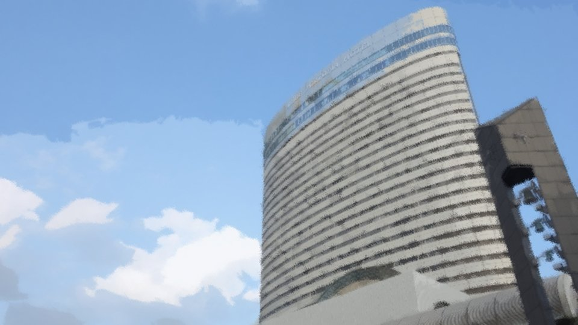
Eventually the bus pulled up in front of tonight's hotel.
"We'll come pick you up here at 8 tomorrow, so please have your checkout done by then."
It looked like we were dismissed here for the day.
There didn't seem to be any pre-interviews or eve-of-contest party either.
"We'll come pick you up here at 8 tomorrow, so please have your checkout done by then."
It looked like we were dismissed here for the day.
There didn't seem to be any pre-interviews or eve-of-contest party either.
"Mm... Then, Goto-san, let's both do our best tomorrow."
To Chigaya-san's words, I signed back a similar reply.
To Chigaya-san's words, I signed back a similar reply.
She didn't seem nervous at all.
Chigaya Niimura-san―I'd better look her up beforehand.
Chigaya Niimura-san―I'd better look her up beforehand.
It was 4 p.m. when I got into my hotel room.
It's a little early for dinner, so I'll look into ways to ease my nerves, and into information on Chigaya-san.
For starters, I idly turned on the TV.
It's a little early for dinner, so I'll look into ways to ease my nerves, and into information on Chigaya-san.
For starters, I idly turned on the TV.
“Tomorrow at the Shibuya scramble crossing, to decide Japan's number one big eater, it's Big Eating Festival 804!
Champion 4 years running, the queen of competitive eating, 'Shinori Minamizaki'!
The beautiful carnivore, 'Chigaya Niimura'!
The Silent Angel, 'Erina Goto'!
Who will win this eating showdown of 100 contestants!?
Complete live coverage from 10 a.m. tomorrow!”
It was a Japonica TV commercial.
Before I knew it, I had a nickname, and the scene from the curry the other day was being shown.
Before I knew it, I had a nickname, and the scene from the curry the other day was being shown.
If Chigaya-san and I were being introduced, did that mean we were favorites to win?
All the more reason to look into Chigaya-san.
All the more reason to look into Chigaya-san.
I searched for “Chigaya Niimura” on my smartphone.
............ Nothing comes up...?
I'd assumed someone advertised this much would have a track record somewhere, but...
As a test, I searched my own name.
............ Nothing comes up...?
I'd assumed someone advertised this much would have a track record somewhere, but...
As a test, I searched my own name.
A site called “Motoki Bishojo Appreciation Society” whose purpose was unclear, the cram school I used to attend, and some genius-girl type articles from years ago.
There seemed to be almost nothing about my big eating either.
There seemed to be almost nothing about my big eating either.
Maybe Chigaya-san got scouted somewhere doing an eating challenge, like me.
If so, we're rivals who know nothing about each other.
If so, we're rivals who know nothing about each other.
In that case, the champion whose ability is already known, 'Shinori Minamizaki'-san, is at the biggest disadvantage.
To begin with, it's clear I'm ahead in stomach capacity too.
I can't match her in experience, but depending on the menu, Minamizaki-san might not even be a rival.
To begin with, it's clear I'm ahead in stomach capacity too.
I can't match her in experience, but depending on the menu, Minamizaki-san might not even be a rival.
There's no way to plan a strategy like this...
What I can do now is keep my stomach from tensing up tomorrow.
The Shibuya crossing, tomorrow's venue for the final, can be reached by train from here.
Okay, I'll go check it out ahead of time.
What I can do now is keep my stomach from tensing up tomorrow.
The Shibuya crossing, tomorrow's venue for the final, can be reached by train from here.
Okay, I'll go check it out ahead of time.
―From Motoki Station on the local line to Sawa-Minakami Station, and then connecting on the all-stops bullet train―
Eventually, I arrived in Tokyo.
When I got off the train, the air, so different from Motoki-cho's, made it hard to breathe.
If even one of eat, sleep, breathe is held down, I panic.
Eventually, I arrived in Tokyo.
When I got off the train, the air, so different from Motoki-cho's, made it hard to breathe.
If even one of eat, sleep, breathe is held down, I panic.
To calm myself, I took a deep breath for just 3 seconds.
Actually, this is my first time coming to Tokyo.
Actually, this is my first time coming to Tokyo.

One of the largest economic cities in the world.
With this many people around, nobody will pay any attention to me.
I should be able to get by on the bare minimum of communication.
With this many people around, nobody will pay any attention to me.
I should be able to get by on the bare minimum of communication.
Now then, first I need to secure a place to sleep tonight.
For someone like me without a steady job, renting a room should take a little time.
It'll probably be internet cafe life for a while.
I have more than enough money for that.
For someone like me without a steady job, renting a room should take a little time.
It'll probably be internet cafe life for a while.
I have more than enough money for that.
But before that...
I was hungry...
For me, with a survival instinct more sensitive than most people's, filling an empty stomach matters more than anything.
First, I'll go somewhere I can eat.
Somewhere as cheap as possible, with big portions.
For me, with a survival instinct more sensitive than most people's, filling an empty stomach matters more than anything.
First, I'll go somewhere I can eat.
Somewhere as cheap as possible, with big portions.
While I was on the bullet train, I'd memorized the route map to some extent.
I got on a random local line and got off at a random station.
I don't have much luggage, and it would help me get used to the Tokyo air, so maybe I'll walk around a little.
I got on a random local line and got off at a random station.
I don't have much luggage, and it would help me get used to the Tokyo air, so maybe I'll walk around a little.
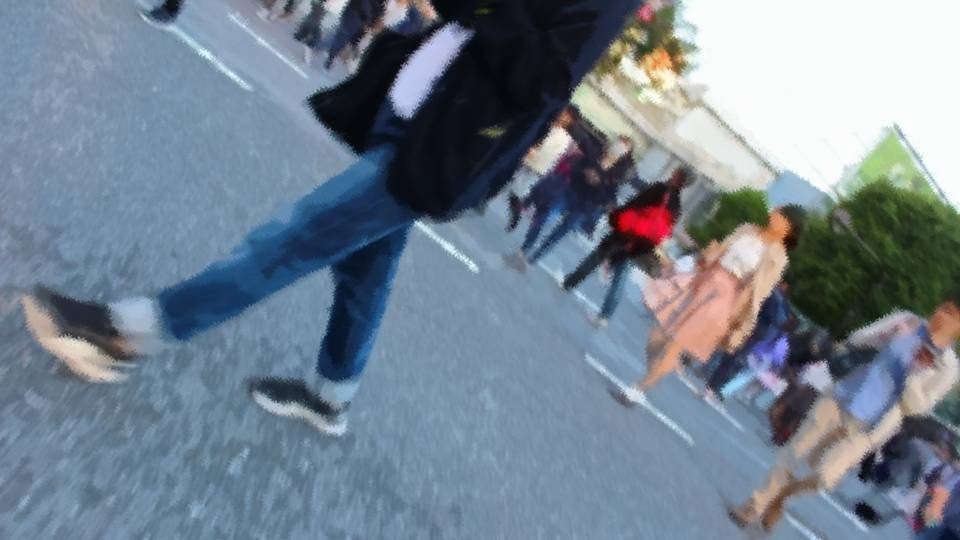
I'd heard the rumors, but there really were a lot of people.
In the short time I stood at an intersection, people kept piling up on the other side.
And when the light turned green, they surged toward me like a bursting dam.
A wave of people that someone as small as me would have a pretty hard time swimming across.
In the short time I stood at an intersection, people kept piling up on the other side.
And when the light turned green, they surged toward me like a bursting dam.
A wave of people that someone as small as me would have a pretty hard time swimming across.
I'll slip off onto a side street for a bit.
When I turned into a narrow street, a certain shop caught my eye, and I stopped.
When I turned into a narrow street, a certain shop caught my eye, and I stopped.
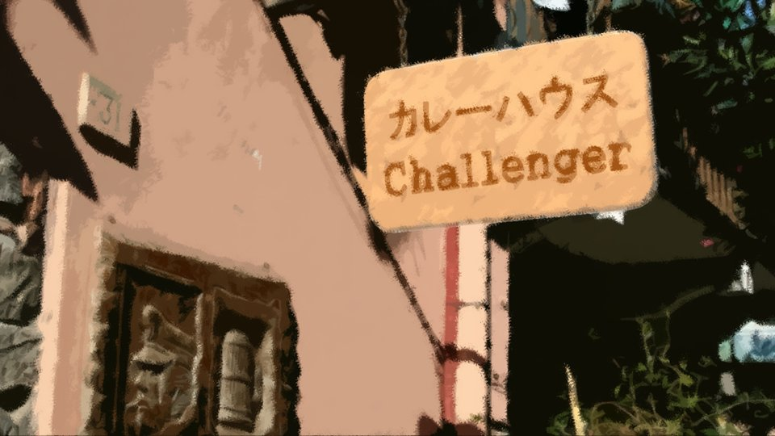
What I'd stopped for was a curry shop.
Curry House 'Challenger'.
That's a pretty provocative name for a shop.
When I looked at the sign out front...
Curry House 'Challenger'.
That's a pretty provocative name for a shop.
When I looked at the sign out front...
Challenge menu by level available.
The biggest is the 10kg curry, prize money 100,000 yen, plus a lifetime free-meal pass.
If they hand a lifetime free pass to a big eater, won't the shop go under?
Well, that just shows how high the bar is for this menu.
The biggest is the 10kg curry, prize money 100,000 yen, plus a lifetime free-meal pass.
If they hand a lifetime free pass to a big eater, won't the shop go under?
Well, that just shows how high the bar is for this menu.
How much would 10kg be?
I may be a big eater, but I've never measured how much food I eat.
But the prize money and the prize are both very attractive.
All right, this is the place.
I may be a big eater, but I've never measured how much food I eat.
But the prize money and the prize are both very attractive.
All right, this is the place.
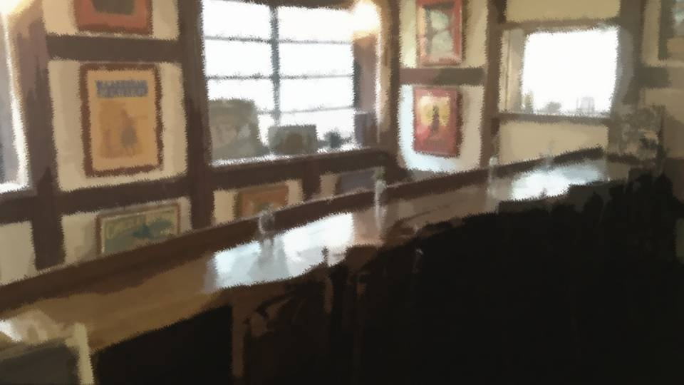
"Welcome!"
I was greeted with a bright welcome.
Fitting that bright greeting, the interior was neat and stylish as well.
I was greeted with a bright welcome.
Fitting that bright greeting, the interior was neat and stylish as well.
When I sat down at the counter, a staff member handed me a menu.
Without hesitation, I pointed to the 10kg curry.
Without hesitation, I pointed to the 10kg curry.
"Are you really sure? Nobody's ever finished it."
Instead of answering, I made an X in front of my mouth with my fingers, and once it got across that I was a mute, I gave a thumbs-up.
Instead of answering, I made an X in front of my mouth with my fingers, and once it got across that I was a mute, I gave a thumbs-up.
"Understood! Good luck!"
With that, the staff member went into the kitchen.
It didn't seem to matter that I was mute, either.
With that, the staff member went into the kitchen.
It didn't seem to matter that I was mute, either.
Still, so nobody has ever finished it.
I've never left food uneaten, no matter how big the portion.
In other words, I don't know my stomach's limit.
Am I going to see that limit today?
Just then, another table was getting noisy about something.
I've never left food uneaten, no matter how big the portion.
In other words, I don't know my stomach's limit.
Am I going to see that limit today?
Just then, another table was getting noisy about something.
When I looked over, people holding cameras and microphones were surrounding a certain table.
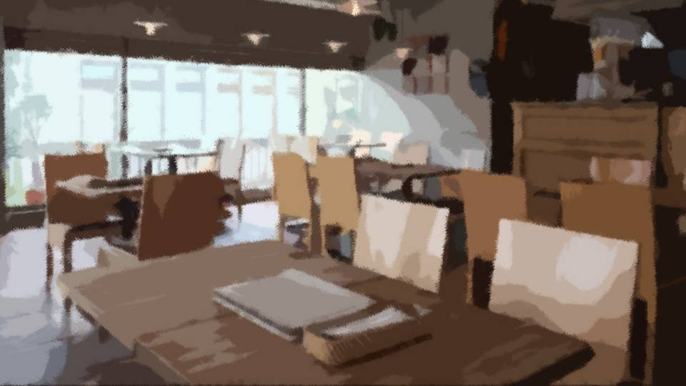
"I'm sorry, I can't go on!"
"Even the eating champion gives up on this 10kg curry with 2kg to go! She was making good progress, but it seems it suddenly hit her hard."
A woman in front of a large plate wore a pained expression.
Apparently, it was a TV shoot.
"Even the eating champion gives up on this 10kg curry with 2kg to go! She was making good progress, but it seems it suddenly hit her hard."
A woman in front of a large plate wore a pained expression.
Apparently, it was a TV shoot.
It seemed the woman, an eating champion, had taken on the 10kg curry but hadn't been able to finish it.
Left on the plate: 2kg worth of curry.
So it's simply five times that.
If it's only that much... it's no big deal...
Left on the plate: 2kg worth of curry.
So it's simply five times that.
If it's only that much... it's no big deal...
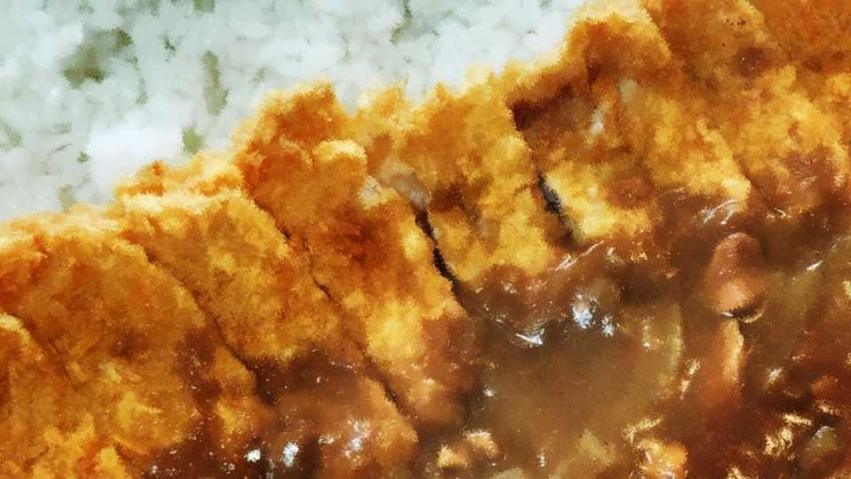
"Sorry to keep you waiting! The 10kg curry, time limit 60 minutes!"
While I was looking at the TV shoot, a super-large curry was set down in front of me.
At that moment, the TV crew started buzzing.
While I was looking at the TV shoot, a super-large curry was set down in front of me.
At that moment, the TV crew started buzzing.
Whatever they're making a fuss about, it has nothing to do with me.
Itadakimasu, I said in my heart, and plunged my spoon into the curry.
Itadakimasu, I said in my heart, and plunged my spoon into the curry.
............
Mm, delicious!
It wasn't just curry. Fried chicken, a cutlet, and raw vegetables like a salad were on it too.
The sauce was well spiced and rich, yet without much of a peculiar edge, so it was a taste I wouldn't tire of.
It wasn't just curry. Fried chicken, a cutlet, and raw vegetables like a salad were on it too.
The sauce was well spiced and rich, yet without much of a peculiar edge, so it was a taste I wouldn't tire of.
Just then, a man came over.
"Uh, I'm with Japonica TV. Would it be all right if we filmed you eating, just for a little bit?"
Japonica TV, if I remember right, was the biggest private TV station in Japan.
"Uh, I'm with Japonica TV. Would it be all right if we filmed you eating, just for a little bit?"
Japonica TV, if I remember right, was the biggest private TV station in Japan.
Is this 10kg curry really that big a deal?
Well, even the champion gave up on it.
Well, even the champion gave up on it.
I nodded silently and made an X in front of my mouth to show I was a mute.
"Thank you!
Also, I'm terribly sorry to ask, but if you could switch off your phone during filming..."
So he wants to shoot nothing but the eating, with no interruptions.
The man told the whole crew to come over.
So he wants to shoot nothing but the eating, with no interruptions.
The man told the whole crew to come over.
Honestly, eating while being watched made me uneasy, but if I was going to live somewhere as crowded as Tokyo, I'd better get used to it.
I paid it no mind and kept eating.
I paid it no mind and kept eating.
"Here, a petite girl is taking on the 10kg curry!
Can she beat the 10kg curry that defeated the champion just a moment ago!?"
Ignoring the crew's commentary, I kept bringing curry to my mouth.
I may come off as unfriendly for TV, but I'm the one letting them film me as a favor.
More than anything, I want to focus on the ritual of satisfying my instinct's demands.
Ignoring the crew's commentary, I kept bringing curry to my mouth.
I may come off as unfriendly for TV, but I'm the one letting them film me as a favor.
More than anything, I want to focus on the ritual of satisfying my instinct's demands.
That said, this is Tokyo curry for you.
The more I ate, the hungrier I got. My pace rose, and my stomach worked harder and harder.
The more I ate, the hungrier I got. My pace rose, and my stomach worked harder and harder.
"Her pace isn't slowing down one bit!
What do you think, Champion Minamizaki-san!?"
"Wow, this is amazing!"
Minamizaki-san?
A name I've heard somewhere.
She's on TV, so I've probably just heard it at some point.
"Wow, this is amazing!"
Minamizaki-san?
A name I've heard somewhere.
She's on TV, so I've probably just heard it at some point.
―28 minutes later, without any drama at all, the 10kg curry had all been put away in my stomach.
Gochisosama deshita. [TN: the words said after a meal]
I said it in my heart, putting my hands together.
I said it in my heart, putting my hands together.
"Amazing, this is amazing! She really finished it all!"
When I'd cleaned the plate, applause and cheers rose from the whole shop.
When I'd cleaned the plate, applause and cheers rose from the whole shop.
"Uh, may we interview you?"
An interview?
I took out my notepad.
An interview?
I took out my notepad.
"May I ask your name!?
Your age!?
Where are you from!?"
“Erina Goto age 19 from Motoki-cho, Sawa Prefecture”
"Ah... um, is this your real name? Is it all right if we broadcast your real name?"
“That's fine. My hometown and age are OK too.”
“Erina Goto age 19 from Motoki-cho, Sawa Prefecture”
"Ah... um, is this your real name? Is it all right if we broadcast your real name?"
“That's fine. My hometown and age are OK too.”
"Thank you!
Right now, together with the champion, we're scouting contestants for next week's eating contest. How about it, Goto-san!?"
A-an eating contest!?
It must be on a totally different scale from the Motoki-cho eating contest.
A-an eating contest!?
It must be on a totally different scale from the Motoki-cho eating contest.
And it'll probably be broadcast nationwide.
That's a little embarrassing...
That's a little embarrassing...
“Please let me think about it a little.”
was all I wrote.
was all I wrote.
"Understood! If we can have your answer by the end of this week, that's fine!
By the way, the contest will be broadcast live nationwide, so if you take part, please come in top condition!"
And live, at that.
Even if I do enter, I don't want to push myself too hard and show the whole country me keeling over...
I've only just come to Tokyo, but maybe I'll go back to Motoki-cho for now and get myself into proper shape.
Even if I do enter, I don't want to push myself too hard and show the whole country me keeling over...
I've only just come to Tokyo, but maybe I'll go back to Motoki-cho for now and get myself into proper shape.
When the TV cameras stopped, the man who'd first spoken to me handed me a business card.
"My name is Ukai. I'm the program director. If you're willing to take part, please contact this phone number... No, please contact me at this email address. With a strong contestant like Goto-san, it's sure to be exciting! And this is your appearance fee for today."
Along with the business card, I was handed a brown envelope.
"My name is Ukai. I'm the program director. If you're willing to take part, please contact this phone number... No, please contact me at this email address. With a strong contestant like Goto-san, it's sure to be exciting! And this is your appearance fee for today."
Along with the business card, I was handed a brown envelope.
"Wow, Champion, a formidable rival has shown up!"
"Beating Goto-san is going to be really tough! There are other strong contestants as well, so I can't let my guard down!"
Huh? Have I met this person somewhere...?
"Oh? Have I met you somewhere?"
The champion, Minamizaki-san, seemed to have the same question.
But since I couldn't remember, all I could do was tilt my head.
"Beating Goto-san is going to be really tough! There are other strong contestants as well, so I can't let my guard down!"
Huh? Have I met this person somewhere...?
"Oh? Have I met you somewhere?"
The champion, Minamizaki-san, seemed to have the same question.
But since I couldn't remember, all I could do was tilt my head.
"A long time ago, at some contest, there was this really strong girl.
Small, just like you, and her name was...
What was it...?"
If you can't remember, then there's nothing to be done...
As champion, she's competed in all sorts of places, so she probably knows a lot of big eaters by sight.
Even so―
If you can't remember, then there's nothing to be done...
As champion, she's competed in all sorts of places, so she probably knows a lot of big eaters by sight.
Even so―
Normally, I'd turn down an invitation like this.
Why did I put off answering?
Just then, I noticed something hot starting to simmer up inside me.
Why did I put off answering?
Just then, I noticed something hot starting to simmer up inside me.
My mouth is something less than a baby, good for nothing but eating.
To think it was enough to draw attention on a national level...
What is it... this feeling...?
To think it was enough to draw attention on a national level...
What is it... this feeling...?
Something hot and seething, something I'd never felt before, had sprouted inside me.
Something that might give my fallen self a reason to exist once more: this unorthodox genre called competitive eating.
Isn't it a fight made for me, whose instinct to eat is stronger than anyone's?
Something that might give my fallen self a reason to exist once more: this unorthodox genre called competitive eating.
Isn't it a fight made for me, whose instinct to eat is stronger than anyone's?
How many years has it been since I felt this heat?
It took me a while to realize what that feeling really was.
That it was the feeling of 'I want to win'...!
It took me a while to realize what that feeling really was.
That it was the feeling of 'I want to win'...!
―On the bullet train home, I was gazing at the envelope that held the 100,000-yen prize and the 5,000-yen bill of the appearance fee.
There was something I could do precisely because I'd lost my voice and was good for nothing but eating.
It's fine even if it's an event like a freak show, where people come to gawk at oddballs.
I'd already been through that, at the Motoki-cho eating contest and with my new-student speech in high school.
It's nothing to be ashamed of at this point.
If anything, backing down after coming this far is what would be shameful!
There was something I could do precisely because I'd lost my voice and was good for nothing but eating.
It's fine even if it's an event like a freak show, where people come to gawk at oddballs.
I'd already been through that, at the Motoki-cho eating contest and with my new-student speech in high school.
It's nothing to be ashamed of at this point.
If anything, backing down after coming this far is what would be shameful!
In just this one day, how many feelings had raced through me?
I had already made up my mind.
A mouth good for nothing but eating?
Bring it on! Then I'll show the whole country just what a mouth that can only eat is capable of!
I had already made up my mind.
A mouth good for nothing but eating?
Bring it on! Then I'll show the whole country just what a mouth that can only eat is capable of!
Still, my stomach did feel a little tight, as I'd expected.
10kg is no joke.
10kg is no joke.
Judging by this feeling, my stomach's capacity is probably around 11 to 12kg.
The amount I can eat should also vary a lot depending on the food.
The amount I can eat should also vary a lot depending on the food.
If it's extremely greasy or tough, time will run out before my stomach reaches its limit.
No, not just stomach capacity: chewing power will matter too.
No, not just stomach capacity: chewing power will matter too.

With something tough like steak, for example, I probably couldn't eat even half my limit.
On top of that, what something like steak demands is swallowing power―the strength to get food down.
The esophagus moves under the control of the autonomic nervous system, so I don't need to control it myself.
Put the other way around, since I can't control it, the muscles around the esophagus are bound to tire out.
On top of that, what something like steak demands is swallowing power―the strength to get food down.
The esophagus moves under the control of the autonomic nervous system, so I don't need to control it myself.
Put the other way around, since I can't control it, the muscles around the esophagus are bound to tire out.
If my swallowing power drops, my speed will suffer too.
Training chewing power and swallowing power takes a fair amount of time, and there's no time left for that now.
The most I can do is get myself into shape so I'm at my best on the day.
Training chewing power and swallowing power takes a fair amount of time, and there's no time left for that now.
The most I can do is get myself into shape so I'm at my best on the day.
What about the rivals?
If someone at that level can be champion, my victory is a sure thing.
Is what I'd like to say, but there might be competitive eaters I haven't seen yet hiding out there.
I'll assume lots of contestants like that will show up on the day.
In that case, the back-and-forth with opponents― the battle of nerves will matter too.
If someone at that level can be champion, my victory is a sure thing.
Is what I'd like to say, but there might be competitive eaters I haven't seen yet hiding out there.
I'll assume lots of contestants like that will show up on the day.
In that case, the back-and-forth with opponents― the battle of nerves will matter too.
For example, I could go all out only at the start to rattle the other contestants,
or catch up in the second half and stoke the anxiety of the ones out in front.
I can't know this part until I see how the others play it, but at the very least, I have to keep from getting dragged into their pace.
I can't know this part until I see how the others play it, but at the very least, I have to keep from getting dragged into their pace.
Even if it's just about eating a lot, if I go all out from the start, I might get full before my stomach has stretched enough,
or overwork my jaw and esophagus until I can't eat anymore.
I should at least figure out my own optimal pace beforehand.
I should at least figure out my own optimal pace beforehand.
It's been a long time since I used my head this much.
And on top of that, I'd never once thought before about how to eat a lot.
And on top of that, I'd never once thought before about how to eat a lot.
No...
before anything else...
When I get home, I have to apologize to Mom...
A mute―
Someone who, for some reason, can no longer speak.

Back then, in the shock of losing Kogori-senpai and Niimura-senpai, and out of my own powerlessness, I tried to kill myself by biting my tongue.
Partly because it happened in a hospital, my life was, unfortunately, saved.
I did know that the odds of dying by biting your tongue are low, but back then I didn't have that much judgment left.
Partly because it happened in a hospital, my life was, unfortunately, saved.
I did know that the odds of dying by biting your tongue are low, but back then I didn't have that much judgment left.
I was allowed neither to live nor to die.
From that moment on, I lost my voice.
From that moment on, I lost my voice.
I have to go on living with this handicap on my back.
Ever since my suicide failed, I'd lost even the will to die.
A life of nothing but waiting for my lifespan to run out.
For me at 15, a time far, far too long.
Ever since my suicide failed, I'd lost even the will to die.
A life of nothing but waiting for my lifespan to run out.
For me at 15, a time far, far too long.

After about 3 months in the hospital, my mind was judged to have recovered to some extent, and I was discharged.
But that wasn't true.
Not only my positive thoughts but even my negative thoughts were gone.
Only neutral thoughts, neither one nor the other, remained.
But that wasn't true.
Not only my positive thoughts but even my negative thoughts were gone.
Only neutral thoughts, neither one nor the other, remained.
No purpose, no pleasure, just passing the time.
About being discharged, I had no positive thoughts and no negative feelings.
All that was left to me was to obey the survival instinct that should have run out: eat, sleep, breathe.
About being discharged, I had no positive thoughts and no negative feelings.
All that was left to me was to obey the survival instinct that should have run out: eat, sleep, breathe.

I did graduate from high school, for what it's worth.
But having lost my voice and given up on thinking, I was now just an ordinary person.
I, who was once called a genius girl, died back then.
But having lost my voice and given up on thinking, I was now just an ordinary person.
I, who was once called a genius girl, died back then.
What did the people around me think of me like that?
The fact that I have to wonder what they thought... means nobody around me reached out.
My senpai saw me not as a genius girl but as one human being.
Now that I was no longer a genius girl, all expectations of me were gone.
The fact that I have to wonder what they thought... means nobody around me reached out.
My senpai saw me not as a genius girl but as one human being.
Now that I was no longer a genius girl, all expectations of me were gone.
It was just as I'd thought.
Without the title of genius girl, the value of my existence is nil.
Without the title of genius girl, the value of my existence is nil.
After I graduated from high school, I neither went on to college nor found a job―
I shut myself in my room and did part-time work online.
Not that I was eager about it, and not that I felt negative about it either.
I just handled whatever was put in front of me, like work on an assembly line.
Not that I was eager about it, and not that I felt negative about it either.
I just handled whatever was put in front of me, like work on an assembly line.
“Goto-san, you're fast and accurate, and a big help!
We're going to be hiring full-time staff soon. Why don't you apply?
The terms are―”
An email like that came from the president of the company I worked part-time for.
I wrote a reply right away.
An email like that came from the president of the company I worked part-time for.
I wrote a reply right away.
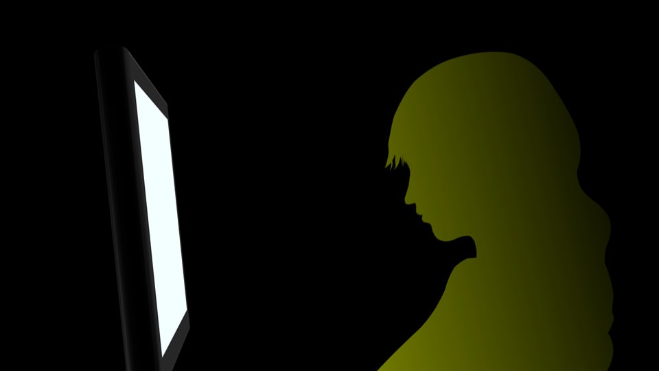
“Thank you.
But I'd like to stay as I am now.
I'll keep working hard as a part-timer, and I hope you'll keep me on.”
The salary and benefits on offer were excellent.
But I, the one who mattered, didn't have the energy for anything more.
When you lose your dreams for the future, you let even the chance right in front of you slip away.
The salary and benefits on offer were excellent.
But I, the one who mattered, didn't have the energy for anything more.
When you lose your dreams for the future, you let even the chance right in front of you slip away.
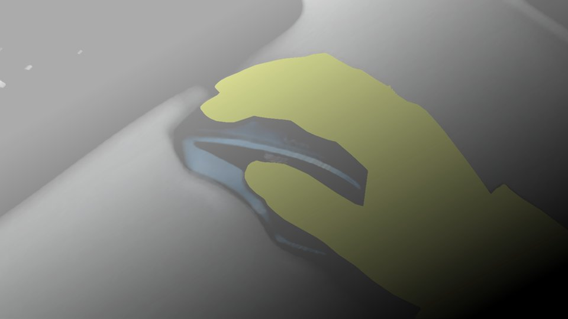
Aware of all that, I clicked the reply button.
But knowing the president...
But knowing the president...
“Are you sure that's what you want?
Goto-san, you're turning 20 soon, right?
You're more capable than anyone else!
There's no rush, so think it over one more time.”
20 years old― So much time has already passed since then...
20 years old― So much time has already passed since then...
These 4 years have been really long.
For the 4 years since I lost the title of genius girl, I've lived listlessly.
Just doing the work I was given, exactly as I was told.
Apart from meals, the toilet, and baths, I don't leave my room. I face the computer all day and move however others want me to.
For the 4 years since I lost the title of genius girl, I've lived listlessly.
Just doing the work I was given, exactly as I was told.
Apart from meals, the toilet, and baths, I don't leave my room. I face the computer all day and move however others want me to.
The only things I do of my own accord are eat, sleep, breathe―these three.
It suits me as I am now.
The only thing driving me is the survival instinct that should have run out.
When I'm short of breath, I breathe. When I'm sleepy, I sleep. When I'm hungry, I eat.
Even a baby can do that.
It suits me as I am now.
The only thing driving me is the survival instinct that should have run out.
When I'm short of breath, I breathe. When I'm sleepy, I sleep. When I'm hungry, I eat.
Even a baby can do that.
I'm nothing more than a baby who can work a computer.
I can't even talk, so I really am a baby.
The world's number-one baby at working and earning money.
I can't even talk, so I really am a baby.
The world's number-one baby at working and earning money.
No... in this world there are probably babies earning hundreds of times what I do as baby models.
Thinking about it that way, I'm just a baby with a sense of self after all.
But I don't even mind that in itself.
Because I don't have enough energy to mind.
Thinking about it that way, I'm just a baby with a sense of self after all.
But I don't even mind that in itself.
Because I don't have enough energy to mind.
Anyway, that's it for today's work.
I'd done at least twice my quota.
Once I'm done moving the way others want me to, all that's left is to obey my survival instinct.
I'd done at least twice my quota.
Once I'm done moving the way others want me to, all that's left is to obey my survival instinct.
When I'm hungry, I eat.
That's only natural.
Out of my room― out of the house― I headed for the usual place.
That's only natural.
Out of my room― out of the house― I headed for the usual place.
I went into the neighborhood diner alone.
In the quiet diner, the sound of a baseball broadcast was strangely loud.
In the quiet diner, the sound of a baseball broadcast was strangely loud.
"Oh, Erina-chan, welcome! Work going well?"
I nodded with a stiff smile at the owner, who knew me well.
So the muscles that make a smile get hard to move when you don't use them.
While I waited for the food that came without my having to order, I tried moving my face muscles.
I nodded with a stiff smile at the owner, who knew me well.
So the muscles that make a smile get hard to move when you don't use them.
While I waited for the food that came without my having to order, I tried moving my face muscles.
Just then, a young man and woman came in.
"This is it, right here! I hear it's famous for giant portions!"
"Ehh? I can't eat that much!"
The two of them sat down side by side at a table, all over each other.
"This is it, right here! I hear it's famous for giant portions!"
"Ehh? I can't eat that much!"
The two of them sat down side by side at a table, all over each other.
If that incident hadn't happened, would I have become a woman like that too, falling in love the normal way and getting all over someone?
The me of now can't even imagine that.
No... I don't even have the energy to imagine it.
All I have is the instinct to eat, sleep, breathe.
The me of now can't even imagine that.
No... I don't even have the energy to imagine it.
All I have is the instinct to eat, sleep, breathe.
"Here you go! Sorry for the wait!
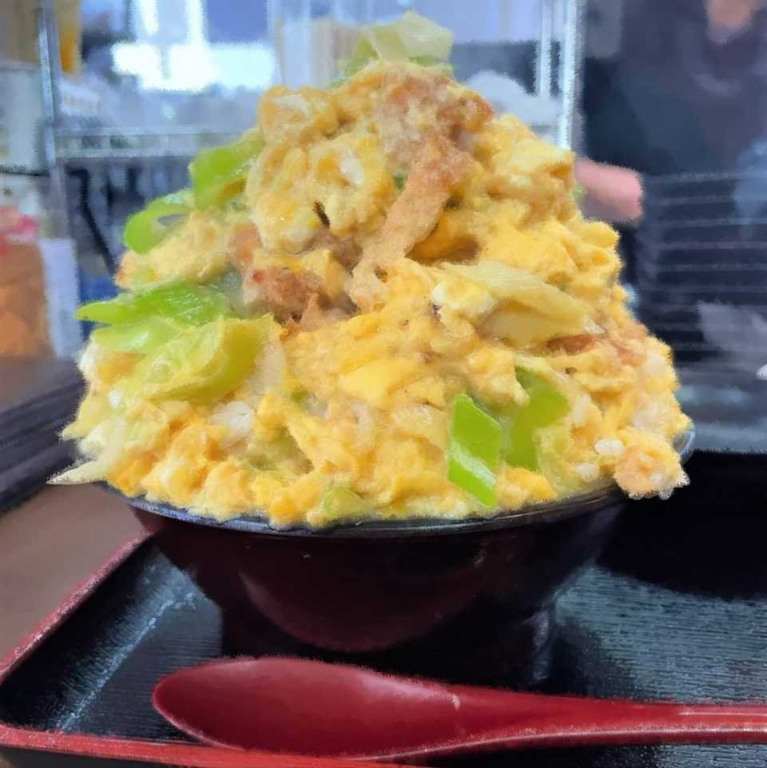
Today's daily special, the extra-large pork-cutlet bowl, tripled!"
The cheers from the TV rang out as if to celebrate the food's arrival.
For me, this amount was nothing much.
Back in high school, I used to get treated by Niimura-senpai until her allowance ran out in a single day.
My appetite, driven by my strong survival instinct, is the one thing that hasn't changed since then.
Besides the title of genius girl, the other way I differed from ordinary people was the size of this stomach.
For me, this amount was nothing much.
Back in high school, I used to get treated by Niimura-senpai until her allowance ran out in a single day.
My appetite, driven by my strong survival instinct, is the one thing that hasn't changed since then.
Besides the title of genius girl, the other way I differed from ordinary people was the size of this stomach.
As always, I said "Itadakimasu" in my head and took a bite of the green onions on the very top of the bowl. [TN: itadakimasu: the words said before a meal]
...The scent of the green onions stirred up my appetite.
In silence I worked my chopsticks, tossing cutlet and rice into my mouth.
...The scent of the green onions stirred up my appetite.
In silence I worked my chopsticks, tossing cutlet and rice into my mouth.
"Uh, that's amazing! Can you really eat all that!?"
The man from the couple who'd just come in spoke to me.
The man from the couple who'd just come in spoke to me.
But as a mute, I can't make a sound.
I met his eyes briefly, didn't smile, gave a small bow, and went on eating.
Then I heard the whispering of the couple, who'd gone back to their seats without a word.
I met his eyes briefly, didn't smile, gave a small bow, and went on eating.
Then I heard the whispering of the couple, who'd gone back to their seats without a word.
"What's with that girl... So rude..."
"That mouth's only there to eat, huh."
Only there to eat...?
Hearing those words, I froze.
"That mouth's only there to eat, huh."
Only there to eat...?
Hearing those words, I froze.
"Hey, hey, you two, she can't talk. It's just how she is.
You shouldn't say things like that."
So the owner covered for me.
"Huh!? Seriously!?"
"I'm sorry..."
At the owner's warning, the couple apologized meekly.
But my hands stayed frozen.
So the owner covered for me.
"Huh!? Seriously!?"
"I'm sorry..."
At the owner's warning, the couple apologized meekly.
But my hands stayed frozen.
Even a baby can express pleasure and displeasure with its voice.
I can't even do that.
Something less than a baby, good for nothing but eating.
I can't even do that.
Something less than a baby, good for nothing but eating.
―I sent an order to my frozen hands and hurried to finish the rest of the pork-cutlet bowl.
And as I left the money and was about to walk out,
"Erina-chan, heading home already? I had your usual dessert ready..."
And as I left the money and was about to walk out,
"Erina-chan, heading home already? I had your usual dessert ready..."
So no one would see me crying, I hurried home.
I cried on my bed.
For the first time in a long while, something called emotion welled up in me.
My existence... what is it...?
Even at work, people who could replace me are a dime a dozen.
So what is someone like me even worth...
For the first time in a long while, something called emotion welled up in me.
My existence... what is it...?
Even at work, people who could replace me are a dime a dozen.
So what is someone like me even worth...
How many years has it been since I questioned myself like this?
In elementary school, because of the gap between me and those around me, I did this over and over.
For it to suddenly spring up now... means I still had some human feeling left in me.
In elementary school, because of the gap between me and those around me, I did this over and over.
For it to suddenly spring up now... means I still had some human feeling left in me.
But I'm refusing to accept it.
Because if I accept it... I feel like I'll be crushed by sadness and helplessness again...
Because if I accept it... I feel like I'll be crushed by sadness and helplessness again...
Why did my voice stop coming out?
Somewhere in my heart, I knew the reason.
Genius girl though I was, I couldn't save my senpai.
I can't save anyone.
Somewhere in my heart, I knew the reason.
Genius girl though I was, I couldn't save my senpai.
I can't save anyone.
Then I'd rather not get involved with anyone at all.
I don't want to communicate with anyone.
I don't want to communicate with anyone.
Those feelings must be what's driving a wedge into my vocal cords.
I should actually be able to speak.
But I'm afraid to use my voice.
My useless voice... I'm afraid to hear it with my own ears.
I should actually be able to speak.
But I'm afraid to use my voice.
My useless voice... I'm afraid to hear it with my own ears.
The next morning, I sent a message to Mom, who'd gone to work.
“I'm leaving home. Thank you for everything until now.”
I'd become afraid of meeting people.
To be precise, maybe I should say I'm afraid of meeting people I know.
Even communication as small as meeting someone's eyes is painful for me.
I'd become afraid of meeting people.
To be precise, maybe I should say I'm afraid of meeting people I know.
Even communication as small as meeting someone's eyes is painful for me.
While it was still morning, I packed my things and withdrew half my savings.
I left that money on the table at home.
This is for my parents, who've taken care of me all this time.
Where will I go from here?
There's no way I have anywhere in mind.
I left that money on the table at home.
This is for my parents, who've taken care of me all this time.
Where will I go from here?
There's no way I have anywhere in mind.
For now, if I take my laptop, I shouldn't run short of money anywhere I can get online.
Without waiting for a reply from Mom, I left home.
Just like Sis, who suddenly left home 4 years ago.
I acted with a decisiveness that surprised even me.
Without waiting for a reply from Mom, I left home.
Just like Sis, who suddenly left home 4 years ago.
I acted with a decisiveness that surprised even me.
For now, maybe I'll just head for Tokyo or somewhere.
There, I should be able to find somewhere with an internet connection.
I can't think of anyone I know who lives in Tokyo.
Far too rash an idea for someone once called a genius girl.
If I end up dying in a ditch because of it, that's fine too.
There, I should be able to find somewhere with an internet connection.
I can't think of anyone I know who lives in Tokyo.
Far too rash an idea for someone once called a genius girl.
If I end up dying in a ditch because of it, that's fine too.
The skin had been stripped from the entire body.


"The skin...?"
"That's right. It's no figure of speech. I believe the victim was literally dying, skin peeled off."
"That's right. It's no figure of speech. I believe the victim was literally dying, skin peeled off."

"Hey now... that's way beyond bad."
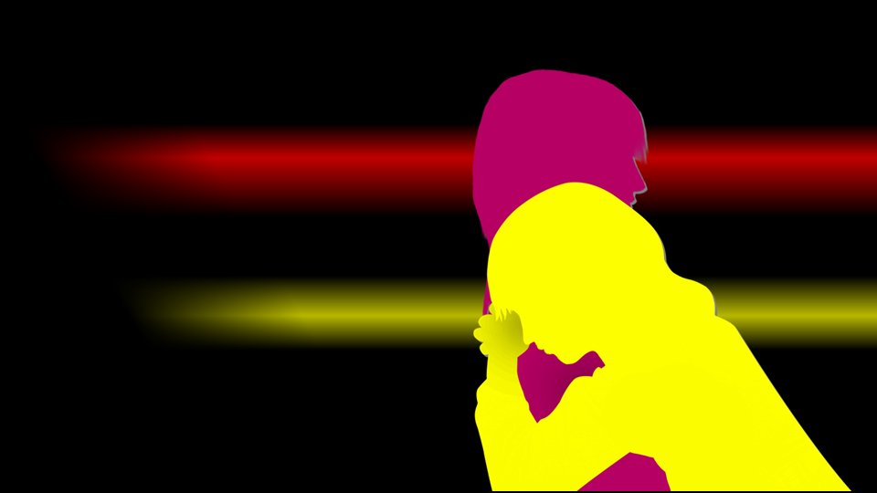
"The body found in Central Park is
Kogori-senpai's father.

Shiyo 788―exactly 12 years ago today, a hanami visitor died in an accident in Central Park.
Fell from a cherry tree.
Got drunk and went tree climbing or something, maybe?
The one who died was...
Motoki-cho resident Eiichiro Niimura-san (30)
Fell from a cherry tree.
Got drunk and went tree climbing or something, maybe?
The one who died was...
Motoki-cho resident Eiichiro Niimura-san (30)
Niimura...?
Niimura, as in...!
Niimura, as in...!


"Paper dolls...?
Senpai cursed someone to death like this 10 years ago, then."
"When I saw these in the morning, I was really scared. While I was asleep, I did it without knowing, I'm sure..."
"When I saw these in the morning, I was really scared. While I was asleep, I did it without knowing, I'm sure..."
Is hell a sight like this?
Blood had spread across the floor, and a great amount of blood had splattered on the walls too.
And.
Blood had spread across the floor, and a great amount of blood had splattered on the walls too.
And.
Lying collapsed, a great amount of blood flowing from her head, Niimura-senpai's mother.
Her abdomen pierced by countless knives, Kogori-senpai's mother.
Only her head lying off somewhere apart from her body, Kogori-senpai.
Her abdomen pierced by countless knives, Kogori-senpai's mother.
Only her head lying off somewhere apart from her body, Kogori-senpai.

"Natsumi...
you're still warm...
If I'd gotten here a little sooner, would I have been able to save you...?"
"Hey, Goto...
Up to now, it was only ever people I hated who died.
But, this time Natsumi...
and even Mom...
Why...?
Mom didn't even have a paper doll..."

"Goto...
I like you too...
so surely, you'll die today too."
"Senpai... stop! Senpai, you're wrong! This isn't a curse! It's murder! So..."
"Goto, enough. Mom and Natsumi are both dead. Now, none of it matters... No... but Goto... you're still alive... Goto... you are still alive..."
"Senpai... stop! Senpai, you're wrong! This isn't a curse! It's murder! So..."
"Goto, enough. Mom and Natsumi are both dead. Now, none of it matters... No... but Goto... you're still alive... Goto... you are still alive..."

"Goodbye, Goto. You, at least, survive..."
The girl who witnessed the end of it all, Erina Goto―
She despaired at her own powerlessness and at having lost the people dear to her, and never again showed herself as the genius girl she had once been.
She despaired at her own powerlessness and at having lost the people dear to her, and never again showed herself as the genius girl she had once been.
And then, many years went by―
I woke up to my phone's alarm, which I'd used for the first time in a long while.
When I opened the curtains, the sun shining on Tokyo announced the morning to this room too.
With a big nnnnn, I stretched out and went over once more in my head what I had to do today.
With a big nnnnn, I stretched out and went over once more in my head what I had to do today.
...Okay. My jaw, throat and arms, which I'd pushed hard yesterday, and my stomach too, weren't all that tired.
The bit of training in Motoki-cho seemed to have paid off.
So what kind of menu would I be competing on today?
The bit of training in Motoki-cho seemed to have paid off.
So what kind of menu would I be competing on today?
"Good morning, contestants!
We'll take you to the venue, so please board the bus."
Following Ukai-san's directions, I got on the bus.
Same as yesterday, I sat next to Chigaya-san.
Following Ukai-san's directions, I got on the bus.
Same as yesterday, I sat next to Chigaya-san.
“Good morning.”
"Mm... Good morning, Goto-san. Not worn out from yesterday?"
“No, I'm in top condition.”
"Mm... That's good to hear. Goto-san, if you're not at your best, there's no challenge in it for me."
"Mm... Good morning, Goto-san. Not worn out from yesterday?"
“No, I'm in top condition.”
"Mm... That's good to hear. Goto-san, if you're not at your best, there's no challenge in it for me."
Just then, whispers reached us from all around.
"Heard that girl sitting up front polished off a 10-pound steak yesterday, no sweat."
"10 pounds!? How are we supposed to beat a monster like that...?"
"Even getting through the qualifier's gonna be tough..."
Word of yesterday's results already seemed to be going around.
"Heard that girl sitting up front polished off a 10-pound steak yesterday, no sweat."
"10 pounds!? How are we supposed to beat a monster like that...?"
"Even getting through the qualifier's gonna be tough..."
Word of yesterday's results already seemed to be going around.
"Mm... Goto-san, your performance yesterday seems to have given you quite a psychological edge."
It wasn't much of a performance, but in this world, sure enough, word travels fast.
It wasn't much of a performance, but in this world, sure enough, word travels fast.
The moment the bus set off, Ukai-san stood at the front and took a microphone.
"Uh, good morning, everyone.
We're now heading to the qualifier venue; the qualifier will be held in a special studio at our station.
The three who make it through the qualifier will compete in the final at the Shibuya crossing.
Note that the qualifier will be broadcast live as well, so―"
From there, we got a boring rundown of precautions and the like.
The gist seemed to be: you'll be on TV, so behave with some common sense.
From there, we got a boring rundown of precautions and the like.
The gist seemed to be: you'll be on TV, so behave with some common sense.
The scenery flowing past the window was no different from yesterday.
I'm no more than one grain among the people scattered across this Tokyo.
But today, I might show myself before the whole country.
Just how much of a diamond's sparkle can this one grain become?
I'm no more than one grain among the people scattered across this Tokyo.
But today, I might show myself before the whole country.
Just how much of a diamond's sparkle can this one grain become?
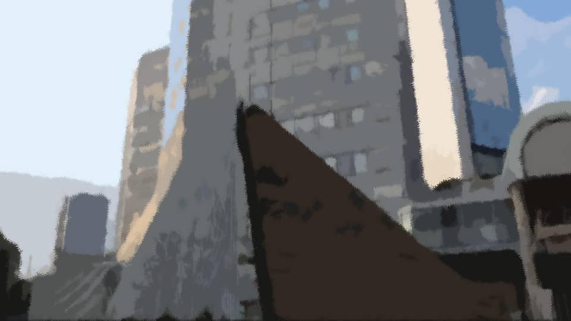
―Before long, we arrived in front of Japonica TV.
The time was 8:30.
How would I spend the hour and a half until the qualifier started?
How I handled my final tuning could set me apart too.
We were told to wait in a waiting room called the dressing room.
The time was 8:30.
How would I spend the hour and a half until the qualifier started?
How I handled my final tuning could set me apart too.
We were told to wait in a waiting room called the dressing room.
"Mm... Goto-san, are you nervous?"
“Well, of course I am.”
"Mm... But like I said yesterday, you should think about the final more than the qualifier. Goto-san, with your ability you can probably get through the qualifier, but if you burn out there, it'll hit you hard in the final. Don't let your guard down, but make sure you always keep something in reserve."
“Well, of course I am.”
"Mm... But like I said yesterday, you should think about the final more than the qualifier. Goto-san, with your ability you can probably get through the qualifier, but if you burn out there, it'll hit you hard in the final. Don't let your guard down, but make sure you always keep something in reserve."

With that, Chigaya-san took out a convenience-store rice ball.
"Mm... Eating contest or not, if you go in on an empty stomach first thing in the morning, your stomach is sluggish and you can't eat much.
You eat just a little, so your stomach is up and moving.
Goto-san, would you like one too?"
Chigaya-san held out the same kind of rice ball.
Chigaya-san held out the same kind of rice ball.
“Thank you very much. Itadakimasu.”
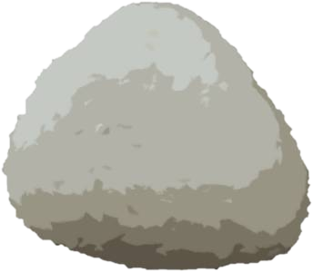
I took a bite of the pickled-plum rice ball, the kind with no nori.
Saliva spread through my whole mouth, and my half-asleep appetite woke up.
Saliva spread through my whole mouth, and my half-asleep appetite woke up.
Yeah, this really does seem to work.
Holding back the urge to swallow right away, I chewed it well to make it even a little easier to digest, and sent it down to my stomach.
For the first time, I could actually feel my stomach start moving and the digestive juices start flowing.
Holding back the urge to swallow right away, I chewed it well to make it even a little easier to digest, and sent it down to my stomach.
For the first time, I could actually feel my stomach start moving and the digestive juices start flowing.
"Mm... What could the qualifier menu be?
With 100 people competing, I don't think they'll serve anything complicated.
It should be something portable, easy for the staff to carry around.
The contest menu might even be rice balls."
Something portable, huh.
Rice balls, to start with, then sandwiches, hamburgers, or the kind of thing they serve at food stalls.
There are lots of candidates, but considering the qualifier lasts 30 minutes, it'll probably be something where gaps open easily, in other words, something where it's easy to rack up a count.
So my prediction: nothing that overworks your chewing power or swallowing power.
Rice balls, to start with, then sandwiches, hamburgers, or the kind of thing they serve at food stalls.
There are lots of candidates, but considering the qualifier lasts 30 minutes, it'll probably be something where gaps open easily, in other words, something where it's easy to rack up a count.
So my prediction: nothing that overworks your chewing power or swallowing power.
No. There's a final after this.
So stomachs don't get overloaded, they might deliberately pick something hard to eat and hard to swallow...
Once I start thinking, there's no end to it. I'll stop thinking.
If the blood goes to my brain now, it's bad for my stomach.
So stomachs don't get overloaded, they might deliberately pick something hard to eat and hard to swallow...
Once I start thinking, there's no end to it. I'll stop thinking.
If the blood goes to my brain now, it's bad for my stomach.
―Having finished the rice ball, I closed my eyes and decided to wait like that until it was time.

As if meditating, I faced my other self.
Meditating only in order to eat is something the me of a little while ago couldn't even have imagined.
Days when I coasted through my part-time work and did nothing but eat, sleep, breathe.
Meditating only in order to eat is something the me of a little while ago couldn't even have imagined.
Days when I coasted through my part-time work and did nothing but eat, sleep, breathe.
And that same me is now meditating ahead of the trial that's about to begin.
You never know how life will turn out.
You never know how life will turn out.
Out of nowhere, the faces of Kogori-senpai and Niimura-senpai came back to me.
If the two of them were alive, I wouldn't be in a place like this right now.
If the two of them were alive, I wouldn't be in a place like this right now.
That time, Niimura-senpai had lifted Kogori-senpai's head and was talking to her.
That moment is not something I can forget.
In the end, what was the truth of that incident―?
I'm supposed to have given up on thinking, but now that I'm active again for the first time in ages, my head can't help heading that way.
That moment is not something I can forget.
In the end, what was the truth of that incident―?
I'm supposed to have given up on thinking, but now that I'm active again for the first time in ages, my head can't help heading that way.
Solving that incident now wouldn't change anything.
Everyone involved died, and I alone survived.
No. If it was a problem between the Kogori family and the Niimura family, then I was probably closer to a bystander.
So it might be fair to say that's why I survived.
Then who was the culprit?
Everyone involved died, and I alone survived.
No. If it was a problem between the Kogori family and the Niimura family, then I was probably closer to a bystander.
So it might be fair to say that's why I survived.
Then who was the culprit?
Kogori-senpai had been beheaded, and Kogori-senpai's mother had a knife stuck in her abdomen.
And Niimura-senpai's mother lay collapsed, bleeding from the head.
And Niimura-senpai's mother lay collapsed, bleeding from the head.
............?
Huh?
Of these, only Niimura-senpai's mother is clearly off.
The knife Niimura-senpai drove into her own neck was the one pulled out of the abdomen of Kogori-senpai's mother.
In other words, the knife really was stuck in the abdomen of Kogori-senpai's mother, so there's no faking that.
Huh?
Of these, only Niimura-senpai's mother is clearly off.
The knife Niimura-senpai drove into her own neck was the one pulled out of the abdomen of Kogori-senpai's mother.
In other words, the knife really was stuck in the abdomen of Kogori-senpai's mother, so there's no faking that.
So it would seem that only in the case of Niimura-senpai's mother could the body have been faked.
All it takes is some fake blood smeared on the head.
Besides, the nata had been left at the scene, but the weapon that must have struck the head wasn't there.
That would mean the culprit took away only the weapon used on the head, but...
All it takes is some fake blood smeared on the head.
Besides, the nata had been left at the scene, but the weapon that must have struck the head wasn't there.
That would mean the culprit took away only the weapon used on the head, but...
That really is a little unnatural.
In that case the culprit would have taken the nata too, and would never have left the Noh mask at the scene either.
It's as if the things left at the scene were left there on purpose...
In that case the culprit would have taken the nata too, and would never have left the Noh mask at the scene either.
It's as if the things left at the scene were left there on purpose...
I see. The culprit's aim was to make Niimura-senpai think it was 'the curse coming true.'
Just before that, Niimura-senpai had said, 'You wear a Noh mask at memorial services.'
Leaving the Noh mask at the scene would burn the image of death into Niimura-senpai's mind and make her think the curse had come true.
Just before that, Niimura-senpai had said, 'You wear a Noh mask at memorial services.'
Leaving the Noh mask at the scene would burn the image of death into Niimura-senpai's mind and make her think the curse had come true.
All of that is only speculation.
At the very least, the body of Niimura-senpai's mother is the only unnatural one.
Both the state of the body and the weapon are wrong.
At the very least, the body of Niimura-senpai's mother is the only unnatural one.
Both the state of the body and the weapon are wrong.
And then, there was what Niimura-senpai had said.
"You're still warm," she'd said.
Which means it was still early enough that body heat remained and rigor mortis hadn't set in.
"You're still warm," she'd said.
Which means it was still early enough that body heat remained and rigor mortis hadn't set in.
In that case, even if Niimura-senpai had touched her mother's body, she wouldn't have felt anything was off.
Before I went into the Kogori house, Niimura-senpai may have touched her mother's body.
So it looks like her mother noticed we were coming and hastily faked it.
Before I went into the Kogori house, Niimura-senpai may have touched her mother's body.
So it looks like her mother noticed we were coming and hastily faked it.
The accident, for the culprit, was that Niimura-senpai killed herself.
The moment Senpai drove the knife into her throat, the culprit must have rushed to stop it.
To keep me from witnessing the moment the suicide was stopped, the culprit knocked me out, hitting me from behind or some such.
But by then, it was already too late.
The moment Senpai drove the knife into her throat, the culprit must have rushed to stop it.
To keep me from witnessing the moment the suicide was stopped, the culprit knocked me out, hitting me from behind or some such.
But by then, it was already too late.
Huh... With a little thought, I could have seen both the culprit and the feint aimed at Niimura-senpai right away.
Though at that point, it would have been too late.
Though at that point, it would have been too late.

Then the one who set fire to the room was Senpai's mother.
Then why did she set the fire?
Probably to destroy some kind of evidence.
But Senpai's mother burned to death right then.
In other words, she got rid of the evidence, but chose to die herself.
Then why did she set the fire?
Probably to destroy some kind of evidence.
But Senpai's mother burned to death right then.
In other words, she got rid of the evidence, but chose to die herself.
Getting rid of evidence when you're going to die... what does that mean...?
What comes to mind is the existence of an accomplice.
By setting the fire, she wiped out the evidence that would lead to the accomplice.
Or else she herself was some kind of 'evidence.'
So she chose death, and by setting the fire on top of that, wiped out the 'evidence.'
What comes to mind is the existence of an accomplice.
By setting the fire, she wiped out the evidence that would lead to the accomplice.
Or else she herself was some kind of 'evidence.'
So she chose death, and by setting the fire on top of that, wiped out the 'evidence.'
Past this point, I've got no information to reason from...
Come to think of it, the person next to me is a Niimura: Chigaya-san.
If by any chance Chigaya-san is related to Niimura-senpai, I might be able to ask about the Niimura way of memorial services.
Come to think of it, the person next to me is a Niimura: Chigaya-san.
If by any chance Chigaya-san is related to Niimura-senpai, I might be able to ask about the Niimura way of memorial services.
―When I opened my eyes, Chigaya-san had her eyes closed too, just like me.
I tapped Chigaya-san on the shoulder,
I tapped Chigaya-san on the shoulder,
"Mm... What is it?"
“Chigaya-san, do you know a person named Haruka Niimura?”
"Huh?"
In that instant, Chigaya-san's eyes went wide.
Two blue eyes turned toward mine.
“Chigaya-san, do you know a person named Haruka Niimura?”
"Huh?"
In that instant, Chigaya-san's eyes went wide.
Two blue eyes turned toward mine.
"Mm... I know her.
My cousin. Though she passed away 4 years ago..."
“I was very close to her. She and I were together right up to the moment she died.”
"Mm... Up to the moment...!? Don't tell me you... from the Motoki-cho..."
“I was very close to her. She and I were together right up to the moment she died.”
"Mm... Up to the moment...!? Don't tell me you... from the Motoki-cho..."
For a little while after that, the silent eye contact went on.
Sure enough, this person knows about Niimura-senpai.
And not just that. Even about the Motoki-cho case...!
Sure enough, this person knows about Niimura-senpai.
And not just that. Even about the Motoki-cho case...!
"Everyone, it's almost showtime, so this way, please!"
At that call, we both came back to ourselves.
The participants around us stood up and filed out of the dressing room.
At that call, we both came back to ourselves.
The participants around us stood up and filed out of the dressing room.
"Mm... Let's leave this talk for later."
Chigaya-san stood up too and left the dressing room.
...For now, I'll focus on the contest.
I've stumbled onto a link to the incident in an unexpected place, but it can wait.
I've stumbled onto a link to the incident in an unexpected place, but it can wait.
The rice ball she'd given me was already gone from my stomach, and all that seemed to remain was a lively appetite and good digestive juices.
Okay, my health and my condition are both perfect.
The reasoning can wait.
I'll switch gears and focus on the fight in front of me.
Okay, my health and my condition are both perfect.
The reasoning can wait.
I'll switch gears and focus on the fight in front of me.
―We went into the filming studio, and I took the seat with my assigned number.
Sets made to look like a Chinese restaurant stood in rows.
In that case, nine times out of ten, the menu would be Chinese food.
The tables weren't side by side but round, each one shared by several people.
My seat was away from both Chigaya-san and the champion, Minamizaki-san.
Sets made to look like a Chinese restaurant stood in rows.
In that case, nine times out of ten, the menu would be Chinese food.
The tables weren't side by side but round, each one shared by several people.
My seat was away from both Chigaya-san and the champion, Minamizaki-san.
There was no smell of food in the studio.
The menu hadn't been brought out yet, but at least it probably wasn't anything strong-smelling.
Or were they keeping it sealed up, smell and all...?
Either way, I still couldn't tell what would come out.
The menu hadn't been brought out yet, but at least it probably wasn't anything strong-smelling.
Or were they keeping it sealed up, smell and all...?
Either way, I still couldn't tell what would come out.
Now... It's almost 10.
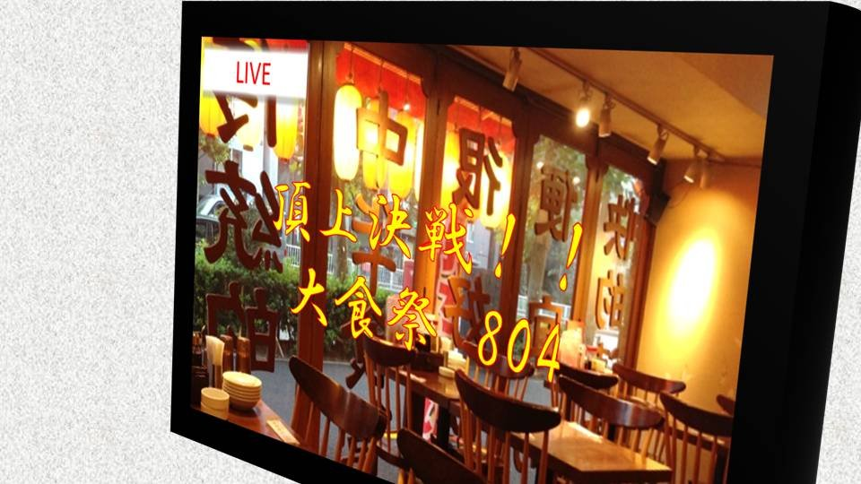
"Good morning! Now, at long last, the day has arrived: Big Eating Festival 804!
I'm your host, Japonica TV announcer Yukino Shinbashi!
Now, take a look! Gathered from all over the country, 100 proud big eaters!"
If I remembered right, she was the announcer people affectionately called Yukipin.
When she finished her greeting, the monitor set up at the front showed us.
If I remembered right, she was the announcer people affectionately called Yukipin.
When she finished her greeting, the monitor set up at the front showed us.
At that, the contestants each showed off their fighting spirit with loud applause and war cries.
The way I am now, this kind of hype is too much for me...
For now, I'll at least clap...
The way I am now, this kind of hype is too much for me...
For now, I'll at least clap...
"Now, we're coming to you completely live, so to keep us on schedule, allow me to present the qualifier menu right away!"
So the event is finally about to be revealed.
What will it be...?
So the event is finally about to be revealed.
What will it be...?
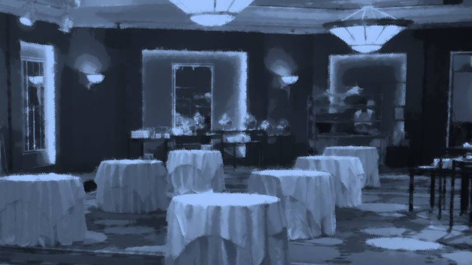
The studio went dark, and grandiose background music began to play.
So even for a TV shoot, they really do play the music inside the studio too.
I always thought this kind of thing could only be heard by the people watching on TV.
I guess it's needed to get us performers fired up too.
So even for a TV shoot, they really do play the music inside the studio too.
I always thought this kind of thing could only be heard by the people watching on TV.
I guess it's needed to get us performers fired up too.
A spotlight was thrown onto one corner of the studio.
There, set on a small table, was something that looked like a dish―
There, set on a small table, was something that looked like a dish―
"The qualifier menu is...
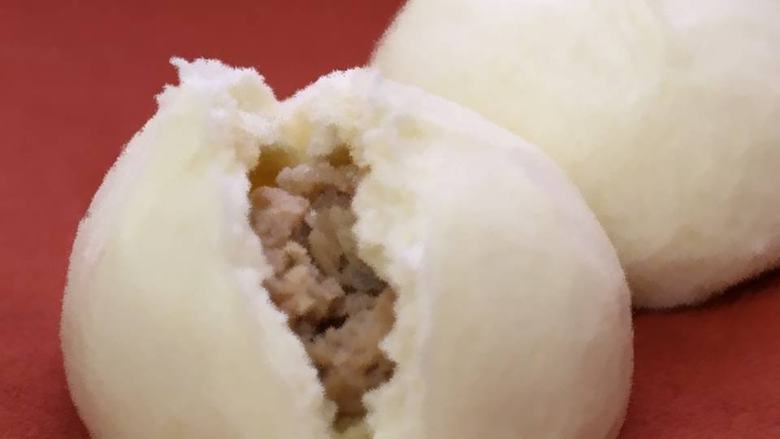
pork buns!"
I see. Portable, no strong smell, can be eaten in quantity, and on top of that, the thick skin demands plenty of chewing power and swallowing power.
Plus, this food even brings in the element of being 'hot.'
It's a menu that demands real all-around ability.
On the monitor, a video introducing this meat bun began to play.
I see. Portable, no strong smell, can be eaten in quantity, and on top of that, the thick skin demands plenty of chewing power and swallowing power.
Plus, this food even brings in the element of being 'hot.'
It's a menu that demands real all-around ability.
On the monitor, a video introducing this meat bun began to play.
"This pork bun is provided by the famous dim sum shop 'Taro.'
Piping-hot filling, and a springy, chewy skin.
There's always a line in front of the shop―"
While this video's playing, I need to work out at least some kind of strategy.
While this video's playing, I need to work out at least some kind of strategy.
First off, choosing meat buns has to be quite a risk for Japonica TV as well.
Because if someone tries to swallow one in one go, they could choke, and it'd be an on-air accident.
Then what's the intention behind picking it as the food...?
Because if someone tries to swallow one in one go, they could choke, and it'd be an on-air accident.
Then what's the intention behind picking it as the food...?
"And the number one feature of Taro's pork buns is this thin skin, like a xiaolongbao's, and the huge amount of soup that flows out from inside.
That soup uses chicken bones and, believe it or not, lavish dried abalone, slowly―"
I see, so it's not your ordinary meat bun.
With a thin skin and soup, the risk of choking drops a lot.
Then since the soup takes up a lot of the volume, it'll come down to a battle with the heat.
I see, so it's not your ordinary meat bun.
With a thin skin and soup, the risk of choking drops a lot.
Then since the soup takes up a lot of the volume, it'll come down to a battle with the heat.
According to the video, each one weighed 200 grams.
An ordinary meat bun, if I remembered right, was a little over 100 grams each, so these were pretty big.
In proportion, there'd be a lot of soup inside too.
An ordinary meat bun, if I remembered right, was a little over 100 grams each, so these were pretty big.
In proportion, there'd be a lot of soup inside too.
In that case, better not to think of it as a meat bun, but as eating wonton soup.
And yet, a skin that's thin but still chewy.
It's bound to be a hard fight to eat in every respect.
And yet, a skin that's thin but still chewy.
It's bound to be a hard fight to eat in every respect.
But being able to eat it with my hands makes it easier.
There's no need for cutlery technique (the general term for chopsticks, forks and so on) like with yesterday's steak, so it all comes down to how I get it into my mouth and swallow it.
There's no need for cutlery technique (the general term for chopsticks, forks and so on) like with yesterday's steak, so it all comes down to how I get it into my mouth and swallow it.
Leaving the heat aside, 6 kilos in 30 minutes is probably a fair result for me.
I put the cutoff for getting through the qualifier at 5 kilos.
In other words, I expect 25 of them will get me through.
I put the cutoff for getting through the qualifier at 5 kilos.
In other words, I expect 25 of them will get me through.
But the problem really is the heat.
I'm inexperienced, so 5 kilos is my limit at most.
The same as the 5-kilo cutoff I predicted...
This food is tougher than I imagined.
I'm inexperienced, so 5 kilos is my limit at most.
The same as the 5-kilo cutoff I predicted...
This food is tougher than I imagined.
"Now then, we're one minute from the start of the contest.
The pork buns are being placed in front of the contestants!
The champion, Minamizaki-san: how much do you think you can manage?"
"Let's see. They look pretty hot, so my target is 7 kilos."
"Let's see. They look pretty hot, so my target is 7 kilos."
7 kilos...! A veteran really does talk differently.
She's probably aiming high as part of the show, but maybe a 5-kilo cutoff is too optimistic.
She's probably aiming high as part of the show, but maybe a 5-kilo cutoff is too optimistic.
A meat bun was set down on my placemat.
Seen up close like this, a meat bun bigger than I'd imagined―
Heat I could feel even with my face 30 centimeters away.
Now, everyone cheering for me on TV, watch me...!
Seen up close like this, a meat bun bigger than I'd imagined―
Heat I could feel even with my face 30 centimeters away.
Now, everyone cheering for me on TV, watch me...!
"And now, at last, it's time to begin!
5,
4,
3,
2,
1...
Start!"
"And now 30 minutes have passed, the halfway point!
In the lead is Niimura with 5.8 kilos, followed by Goto with 5.0 kilos, and last is Champion Minamizaki with 4.9 kilos!
Rookie Niimura is a head in front, but it is still anybody's game!"
I was nearly level with Minamizaki-san, and nearly 1 kilo behind Chigaya-san.
I'd keep up this pace until the 45-minute mark.
Hold the gap to Chigaya-san within 1 kilo, and at the same time stay just a little ahead of Minamizaki-san.
In the last 15 minutes, put on a spurt and close that 1-kilo gap.
I'd keep up this pace until the 45-minute mark.
Hold the gap to Chigaya-san within 1 kilo, and at the same time stay just a little ahead of Minamizaki-san.
In the last 15 minutes, put on a spurt and close that 1-kilo gap.
My stomach was probably about half full.
Here I'd change side dishes in a big way and stoke the urge to eat rice.
Until now I'd picked only things that were easy on the stomach, but let's try a side dish that's a real side dish.
Here I'd change side dishes in a big way and stoke the urge to eat rice.
Until now I'd picked only things that were easy on the stomach, but let's try a side dish that's a real side dish.
"Oh! Goto is up and heading straight for the side-dish corner! What will she pick next!?"
Something here that makes you want rice, and that goes in a different direction from what I'd had so far...
Yeah, mapo tofu might be good.
The heat spurs the appetite, and it puts almost no strain on the jaw.
I shook a huge amount of chili powder over it.
Something here that makes you want rice, and that goes in a different direction from what I'd had so far...
Yeah, mapo tofu might be good.
The heat spurs the appetite, and it puts almost no strain on the jaw.
I shook a huge amount of chili powder over it.
"Whoa, Goto is putting a huge amount of chili powder on her mapo tofu!
This is not a super-spicy contest, but is she going to be all right!?"
I'm not tough enough to enter a super-spicy contest, but this much I can just about eat.
I'm not tough enough to enter a super-spicy contest, but this much I can just about eat.
I put just a little in my mouth to taste it.
...Nngh! Spicy!
This mapo tofu had plenty of Sichuan pepper in it too, not just chili peppers.
This vivid, numbing heat.
Apparently this is the taste called 'ma' that's peculiar to Sichuan cooking.
A heat on a different vector from chili pepper.
The combination of the two threw my sweat glands wide open all at once.
...Nngh! Spicy!
This mapo tofu had plenty of Sichuan pepper in it too, not just chili peppers.
This vivid, numbing heat.
Apparently this is the taste called 'ma' that's peculiar to Sichuan cooking.
A heat on a different vector from chili pepper.
The combination of the two threw my sweat glands wide open all at once.
I put it in my mouth slowly, savored the heat and the saltiness to the full, then swallowed.
I could feel my brown fat cells, which burn energy, working hard.
And my stomach, opening up still more room.
I could feel my brown fat cells, which burn energy, working hard.
And my stomach, opening up still more room.
But I still wasn't touching the rice.
At the very least, savor this heat and salt a little longer, and whip up the craving for rice even more.
At the very least, savor this heat and salt a little longer, and whip up the craving for rice even more.
"And here the champion seems to be picking up the pace!
She has put raw egg in her grated yam and is slurping it down together with her rice!"
............!?
Fast...!
She was gulping down the rice in her bowl like a drink.
............!?
Fast...!
She was gulping down the rice in her bowl like a drink.
Sure, that way it goes down smoother and she can raise her pace.
No, wait...
There's still more than 25 minutes left.
Bulking up the rice to raise her pace at this point means she must be pretty rattled.
Minamizaki-san's stomach capacity is probably around 8 kilos, so at this point she's out to shake Chigaya-san.
How is Chigaya-san doing?
No, wait...
There's still more than 25 minutes left.
Bulking up the rice to raise her pace at this point means she must be pretty rattled.
Minamizaki-san's stomach capacity is probably around 8 kilos, so at this point she's out to shake Chigaya-san.
How is Chigaya-san doing?
―She seemed to be eating her rice with salmon roe as the side dish.
Salmon roe works as an ingredient too.
The juice from the roe makes the rice easier to eat, and on top of that, it's strongly flavored.
Chigaya-san seemed to be sticking to her own pace no matter what.
Come to think of it, salmon roe was Kogori-senpai's favorite food...
Salmon roe works as an ingredient too.
The juice from the roe makes the rice easier to eat, and on top of that, it's strongly flavored.
Chigaya-san seemed to be sticking to her own pace no matter what.
Come to think of it, salmon roe was Kogori-senpai's favorite food...
"............?"
Chigaya-san was pouring a clear liquid from a bottle over her rice.
Is that... sushi vinegar?
I see, acetic acid stimulates the appetite too.
So she's whipped up an instant salmon-roe bowl.
Chigaya-san was pouring a clear liquid from a bottle over her rice.
Is that... sushi vinegar?
I see, acetic acid stimulates the appetite too.
So she's whipped up an instant salmon-roe bowl.
Different strategies, but each of us was working out ways to eat more rice than anyone else.
None of the three of us had given up on the match yet.
None of the three of us had given up on the match yet.
"Oh, and here the champion overtakes Niimura-san and storms into the lead!
The champion at 7.0 kilos, Niimura at 6.8 kilos, and Goto has stalled at 5 kilos while eating her mapo tofu!"
No way!? When did the gap grow to 2 kilos...!?
The champion's comeback really is something else...!
No way!? When did the gap grow to 2 kilos...!?
The champion's comeback really is something else...!
No! I can't panic here! There are still more than 20 minutes!
But... but letting the gap get any wider is dangerous!
But... but letting the gap get any wider is dangerous!
"Goto has dug into her rice too! She is also going at an incredible pace!"
I know full well that getting dragged into an opponent's pace is dangerous.
But this gap really is dangerous.
Like it or not, I have no choice but to raise my pace.
I shoveled in rice together with the fiery mapo tofu.
I know full well that getting dragged into an opponent's pace is dangerous.
But this gap really is dangerous.
Like it or not, I have no choice but to raise my pace.
I shoveled in rice together with the fiery mapo tofu.
"Now, we are down to the last 15 minutes!
Still in the lead is the champion with 8.8 kilos, in second place Niimura with 8.0 kilos, and Goto with 7.2 kilos!
This is a big advantage for the champion. Can she hold on to the end!?"
Why!? Why isn't Minamizaki-san's pace dropping!?
I'd estimated Minamizaki-san's stomach capacity at 8 kilos, but her high pace kept going...!
Why!? Why isn't Minamizaki-san's pace dropping!?
I'd estimated Minamizaki-san's stomach capacity at 8 kilos, but her high pace kept going...!
At that moment, I imagined something awful.
The time with the curry last week.
Could it be that Minamizaki-san noticed me come into the shop and gave up on purpose?
A strategy: make that line look like her limit, and get me, the one she wanted to beat more than anyone, to drop my guard.
Could it be that Minamizaki-san noticed me come into the shop and gave up on purpose?
A strategy: make that line look like her limit, and get me, the one she wanted to beat more than anyone, to drop my guard.
―Erina Goto-san, I haven't forgotten our match 4 years ago.
The match began the moment I met you again.
"I'm sorry, I can't go on!"
"Ah, even the champion gives up on this 10kg curry with 2kg to go!"
"I'm sorry, I can't go on!"
"Ah, even the champion gives up on this 10kg curry with 2kg to go!"
The match had already begun back at the curry shop.
The amount Minamizaki-san is eating right now proves it.
I can't afford to hesitate anymore.
I have to eat at top speed...!
The amount Minamizaki-san is eating right now proves it.
I can't afford to hesitate anymore.
I have to eat at top speed...!
But right here, the thing I'd feared most was starting to happen.
No, something utterly simple― my stomach was gradually starting to buckle under the pressure of all that white rice.
No, something utterly simple― my stomach was gradually starting to buckle under the pressure of all that white rice.
"Goto has raised her pace even further!
Can she turn around a 1.6-kilo gap in 15 minutes!?"
It had become a very hard fight.
Back to basics. I'd fight with pickles, furikake and miso soup.
It had become a very hard fight.
Back to basics. I'd fight with pickles, furikake and miso soup.
"What a pace from Goto! She is closing in on the champion and Niimura!"
Without looking around me, I kept track of the situation through the announcements alone.
How far can I go... how much can I eat...!
Without looking around me, I kept track of the situation through the announcements alone.
How far can I go... how much can I eat...!
"Whoa, the champion's chopsticks have finally stopped!
A huge slowdown after eating 9.7 kilos!
Meanwhile, Niimura is at 9.5 kilos and Goto at 9.1 kilos!
At this rate it looks as if they could overtake the champion!?"
Minamizaki-san had stopped, apparently.
Can I close 600 grams with 10 minutes left...?
Minamizaki-san had stopped, apparently.
Can I close 600 grams with 10 minutes left...?
But even that might not happen.
From around the time I passed 9 kilos, my stomach had finally started screaming in earnest.
Counting the side dishes and drinks, I was definitely over 10 kilos.
From around the time I passed 9 kilos, my stomach had finally started screaming in earnest.
Counting the side dishes and drinks, I was definitely over 10 kilos.
Ugh... so this is what being full feels like...
It hurts...
I don't... want to eat anymore...
It really hurts...
It hurts...
I don't... want to eat anymore...
It really hurts...
"Now, with 10 minutes left, both Niimura and Goto have clearly slowed down.
All three are neck and neck, but what drama will we see in these 10 minutes!?"
Is Chigaya-san close to her limit too...?
Minamizaki-san's hands seem to have stopped, but a 600-gram gap is pretty big.
Is Chigaya-san close to her limit too...?
Minamizaki-san's hands seem to have stopped, but a 600-gram gap is pretty big.
I planted an elbow on the table and forced rice into my mouth.
But swallowing was painful...
But swallowing was painful...
Some... some kind of plan...
Even if I thought of a plan, it's not as if my stomach would get any bigger.
I need room to cram in even a little more rice.
Each mouthful of rice was far too heavy.
Even if I thought of a plan, it's not as if my stomach would get any bigger.
I need room to cram in even a little more rice.
Each mouthful of rice was far too heavy.
"And finally, 5 minutes left!
Right now, all three are tied at 9.7 kilos!
From here on, we will be hiding the weight display!
Nobody will know who wins until time is up!"
Now there was no knowing what place I was in.
Pacing and tactics would both get harder.
But... I can't eat any more...
My chopsticks wouldn't go into my mouth.
Yes, my chopsticks had stopped completely.
Pacing and tactics would both get harder.
But... I can't eat any more...
My chopsticks wouldn't go into my mouth.
Yes, my chopsticks had stopped completely.
The only chopsticks still moving were Chigaya-san's, at a turtle's pace.
If things went badly, it might come down to single grams.
If things went badly, it might come down to single grams.
But... I'm at my limit...
It's so frustrating... my stomach hurts...
So this is it for the mouth good for nothing but eating...?
I looked down and shut out everything around me.
It's so frustrating... my stomach hurts...
So this is it for the mouth good for nothing but eating...?
I looked down and shut out everything around me.
"Hey, genius girl of Motoki-cho, hang in there!"
Cheering aimed at me.
Cheering aimed at me.
Keeping my face down, I turned only my eyes to the spectators: a group holding Motoki-cho placards.
It was the high school students from Motoki-cho.
It was the high school students from Motoki-cho.
"Goto-saaan! Show us that drive from yesterday, pleeeeeeeeeeease!"
A glossy pompadour.
That voice was the one from the steak house...
A glossy pompadour.
That voice was the one from the steak house...
I want to win...!
I want to live up to their hopes...!
But... my stomach...!
I want to live up to their hopes...!
But... my stomach...!
Mom had said it.
That I didn't have to think about winning.
That I shouldn't let this chance slip away.
This chance... where is it supposed to lead?
That I didn't have to think about winning.
That I shouldn't let this chance slip away.
This chance... where is it supposed to lead?
And Motoki-cho, which had sent me all the way here.
What had they sent me all this way for?
And in the first place, what am I doing this for...
What lies beyond winning here?
Sure, I want to win.
I want to win, but...
What had they sent me all this way for?
And in the first place, what am I doing this for...
What lies beyond winning here?
Sure, I want to win.
I want to win, but...
It's not as if I'd been hoping for something beyond the eating contest.
Just, if I could see even a bit of a new world...
I've already seen enough of a new world.
So maybe I don't have to try any harder than this...
Just, if I could see even a bit of a new world...
I've already seen enough of a new world.
So maybe I don't have to try any harder than this...
"Goto!
Goto!
Goto!"
Before I knew it, the audience had started a Goto chant.
Why is everyone cheering for me?
Because I'm a mute...?
Because they pity me?
If they call out to me like that... there's no backing down, I just can't back down...!
Before I knew it, the audience had started a Goto chant.
Why is everyone cheering for me?
Because I'm a mute...?
Because they pity me?
If they call out to me like that... there's no backing down, I just can't back down...!
"I... wan... na... win...!"
Huh...?
Just now...
For a moment, even I didn't notice.
My mouth had moved on its own.
In a voice nobody could have heard, I had spoken.
Just now...
For a moment, even I didn't notice.
My mouth had moved on its own.
In a voice nobody could have heard, I had spoken.
That I want to win...
My reason as a human being, held down by instinct― my soul cried out.
My reason as a human being, held down by instinct― my soul cried out.
I lifted my head.
Beyond Minamizaki-san, whose face was down, Chigaya-san was glaring at me.
But those eyes weren't meant to hold me in check.
Those eyes were speaking.
But those eyes weren't meant to hold me in check.
Those eyes were speaking.
"You're giving up over something like that?
I was an idiot to expect anything, even a little," they said.
Then Minamizaki-san glared at me too.
"Goto-san, the one I want to fight is a much, much stronger you. Don't let down the hopes I had 4 years ago!"
Then Minamizaki-san glared at me too.
"Goto-san, the one I want to fight is a much, much stronger you. Don't let down the hopes I had 4 years ago!"
Seeing those two pairs of eyes, I felt a fierce anger well up.
That's not... that's not true!
I haven't lost yet!
My tensed right hand snapped the disposable chopsticks it was holding.
And still holding the broken chopsticks, I raised my hand straight up.
That's not... that's not true!
I haven't lost yet!
My tensed right hand snapped the disposable chopsticks it was holding.
And still holding the broken chopsticks, I raised my hand straight up.
"New... chop... sticks... plea... se."
I shouted.
My halting voice, for the first time in 4 years―
At my voice, which should have been small, the whole venue fell silent at once.
I shouted.
My halting voice, for the first time in 4 years―
At my voice, which should have been small, the whole venue fell silent at once.
"S-s-s-s-staff! New chopsticks for Goto-san!"
At that moment, a cheer went up from the venue loud enough to shake all of Japan.
At that moment, a cheer went up from the venue loud enough to shake all of Japan.
"Incredible! From the Silent Angel who lost her voice, Erina Goto, comes a cry from the soul!
Everyone, did you hear that!?
Just now, without a doubt, Goto clearly spoke out loud!"
Chopsticks were brought to me right away.
Chopsticks were brought to me right away.
Chigaya-san, her eyes still glaring at me, gave a grin.
Minamizaki-san, too, turned back to her bowl, looking somehow relieved.
Minamizaki-san, too, turned back to her bowl, looking somehow relieved.
What limit! So what if I'm at my limit!?
I tried to die once, so what am I scared of now!?
If I'm going to back down here, I'd rather eat and eat and die!
I tried to die once, so what am I scared of now!?
If I'm going to back down here, I'd rather eat and eat and die!
Following my soul's orders, my stomach began to move rapidly and opened up one last bit of room.
Shovel it in... shovel it in!
I have nothing to lose!
Collapse right here, cause an on-air accident, stir up complaints from the sponsors and viewers, and drive Japonica TV into bankruptcy!
Shovel it in... shovel it in!
I have nothing to lose!
Collapse right here, cause an on-air accident, stir up complaints from the sponsors and viewers, and drive Japonica TV into bankruptcy!
"Silent Angel, now Angel Voice, Erina Goto! The final spurt!
Seeing that, Niimura is desperately hanging on too!
The champion, too, is inching her chopsticks along again!"
You eat in order to live.
You eat out of survival instinct.
But me, I eat ready to die.
I'll eat and die doing it!
You eat out of survival instinct.
But me, I eat ready to die.
I'll eat and die doing it!
Now, watch the way I live!
I'm a woman good for nothing but eating!
If I can't even do that, I'm as good as dead!
Then... then even if my life runs out, I will never stop my chopsticks!
I'm a woman good for nothing but eating!
If I can't even do that, I'm as good as dead!
Then... then even if my life runs out, I will never stop my chopsticks!
"5 seconds left!"
Show them...!
Show them...!
"4!"
To the very end...!
To the very end...!
"3!"
The way I live...!
The way I live...!
"2!"
This is my...!
This is my...!
"1!"
My holy war of instinct...!
My holy war of instinct...!
"Tiiiiime!!"
Cheers and applause welling up.
And the spectators in a frenzy.
I... fought to the very end. I didn't give up.
And the spectators in a frenzy.
I... fought to the very end. I didn't give up.
No, Chigaya-san and Minamizaki-san fought to the very end too.
When the three of us met each other's eyes, smiles came naturally.
When the three of us met each other's eyes, smiles came naturally.
"Well, the Big Eating Festival 804 final was without a doubt a life-and-death battle of the highest level ever!
Surely every contestant gave it everything they had, with no regrets.
Now, let us take a look at the results right away!
First, the champion, Shinori Minamizaki, with...!"
"9821 grams!
Just what you would expect from the champion!
She shook her two rivals with every tactic there is and gave it absolutely everything!"
Chigaya-san and I have probably both beaten that figure.
However much we beat her in stomach capacity, she was a really hard opponent to fight.
That's the champion for you. She was really strong.
Chigaya-san and I have probably both beaten that figure.
However much we beat her in stomach capacity, she was a really hard opponent to fight.
That's the champion for you. She was really strong.
"Next, Chigaya Niimura!
10221 grams!
She has topped the 10-kilo mark!"
That's Chigaya-san for you. With the side dishes, could she be over 12 kilos?
That's Chigaya-san for you. With the side dishes, could she be over 12 kilos?
"And finally, Angel Voice Erina Goto, who let us hear the cry of her soul!
Her result is...!"
Did I win, or did I lose...!?
Did I win, or did I lose...!?
"Against Niimura's 10221 grams, Erina Goto!
1
0
2
10 grams!"
Chigaya-san had 10221 grams.
By 11 grams... I lost...
Chigaya-san had 10221 grams.
By 11 grams... I lost...
I see, so I lost...
But I have no regrets.
I lost, but I feel wonderfully refreshed.
But I have no regrets.
I lost, but I feel wonderfully refreshed.
"Well done, genius girl!"
"You're Motoki-cho's treasure!"
Cheers thanking me for my effort.
Thank you, everyone.
Because all of you were here... I―
"You're Motoki-cho's treasure!"
Cheers thanking me for my effort.
Thank you, everyone.
Because all of you were here... I―
"Please wait! The match is not decided yet!"
Announcer Shinbashi raised her voice louder than ever.
The match isn't decided yet?
The match isn't decided yet?
"What is shown here is only the amount of rice that has gone from the rice cookers!
It looks as if there is still rice left in the contestants' bowls!"
I see, so that's it.
In my bowl too, about half a rice bowl of rice was left.
I see, so that's it.
In my bowl too, about half a rice bowl of rice was left.
"We will now weigh the rice left in the bowls."
With that, the three of us had our bowls taken away.
With that, the three of us had our bowls taken away.
"Now, we will show you all the results at once!
"Champion Minamizaki, 9801 grams!
Chigaya Niimura, 10098 grams!
Erina Goto, 10150 grams!
And so, Big Eating Festival 804 goes to Angel Voice Erina Goto for the wiiiin!!!!"
Huh...?
I won...?
Me... the winner...?
I won... I won...!
Huh...?
I won...?
Me... the winner...?
I won... I won...!
"Genius girl of Motoki-cho, hooraaay!"
"Gotooo-saaan! I beliiiiiiiiieved you could win!"
"Gotooo-saaan! I beliiiiiiiiieved you could win!"
"Now, our new champion, Goto-san, this way please!"
Doing as I was urged, I tottered with my heavy stomach to the center of the stage.
The people of Shibuya were looking at me.
People celebrating my win, raising their voices.
Doing as I was urged, I tottered with my heavy stomach to the center of the stage.
The people of Shibuya were looking at me.
People celebrating my win, raising their voices.
"Goto-san, can you speak?"
Announcer Shinbashi brought the mic close to my mouth.
And the people's cheering quietly died away.
Everyone was waiting for my voice.
Announcer Shinbashi brought the mic close to my mouth.
And the people's cheering quietly died away.
Everyone was waiting for my voice.
"Ev...
ery...
one...
Thank...
you...
very much!!!"
And the people erupted again.
It was the first time I'd used my voice in a long while, but I shouted.
To the people who had cheered me on.
And to everyone celebrating me, with all my thanks.
And the people erupted again.
It was the first time I'd used my voice in a long while, but I shouted.
To the people who had cheered me on.
And to everyone celebrating me, with all my thanks.
I'm... so glad I stayed alive after all...!
If you stay alive, good things will come: it's far too simple a motto, but... to me now, those are words that ring loud enough to shake my soul.
If you stay alive, good things will come: it's far too simple a motto, but... to me now, those are words that ring loud enough to shake my soul.
Thank you, everyone! Thank you for cheering me on!
Thank you for making me want to live again!
Thank you for making me want to live again!
I bowed deeply to the people in front of me, and to all the people who had cheered me on and celebrated me.
But I just couldn't lift my head again.
But I just couldn't lift my head again.
Because I'm...
not crying!
I don't cry over a mere eating contest!
So why won't my tears stop?
Why am I this happy?
I don't cry over a mere eating contest!
So why won't my tears stop?
Why am I this happy?
"Now, would former champion Minamizaki-san and runner-up Niimura-san please come this way as well."
Someone put a hand on my back as I stood there, still bowing.
It was Minamizaki-san.
Someone put a hand on my back as I stood there, still bowing.
It was Minamizaki-san.
"Goto-san, congratulations, truly.
No matter how hard I tried to shake you, you didn't budge.
Even after 4 years, you weren't someone I could catch up to.
It's my... complete defeat..."
The non-alcoholic beer at the start got me, but after that I'd kept a close eye on Minamizaki-san's moves.
The reason I could win is that Minamizaki-san showed me so many examples to follow.
The non-alcoholic beer at the start got me, but after that I'd kept a close eye on Minamizaki-san's moves.
The reason I could win is that Minamizaki-san showed me so many examples to follow.
"Mm... Goto-san, congratulations.
You were someone I'm truly glad I got to fight."
If there hadn't been a rival as strong as Chigaya-san, my soul would never have cried out.
The one who made me want to live again is Chigaya-san.
If there hadn't been a rival as strong as Chigaya-san, my soul would never have cried out.
The one who made me want to live again is Chigaya-san.
―Big Eating Festival 804.
It came to a close having made one girl, who had given up on living, resolve to live again.
An unorthodox genre called competitive eating.
An event like a freak show where people come to stare at eccentrics.
It came to a close having made one girl, who had given up on living, resolve to live again.
An unorthodox genre called competitive eating.
An event like a freak show where people come to stare at eccentrics.
But it showed me a glimmer of hope.
I kept chasing that hope, and many times I nearly gave up, but...
What lay at the end of the hope I chased to the very end without giving up was― a truly important survival instinct I had nearly forgotten.
I kept chasing that hope, and many times I nearly gave up, but...
What lay at the end of the hope I chased to the very end without giving up was― a truly important survival instinct I had nearly forgotten.
The survival instinct that matters isn't only eat, sleep, breathe.
It was the survival instinct that longs to live, precious above all else, and human.
It was the survival instinct that longs to live, precious above all else, and human.
But at the same time...
it's also true that something that had been smoldering somewhere in my heart quietly began to show itself.
There was no way I could ever have forgotten.
There was no way I could ever have forgotten.
Read ✓ Next: The Eternal Tower →